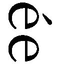

| 俺様上司は溺愛体質!? (ベリーズ文庫) | |
| あさぎ千夜春 | |
| (2016) | |
俺様上司は溺愛体質!?
あさぎ千夜春
「いい女って......いい女ってなにっ!?」
国内有数の下着メーカーである『プレズィール』本社十八階。
営業部の端にある自分のデスクで、萩原ちとせは、うめき声を上げた。
さながら断末魔といったところか。誰が見ているわけでもないのに、両手を天井に向けてひとり芝居風である。
「どうしたの急に」
向かいのデスクに座っている同僚の小坂細布子が、怪訝そうに書類の山から顔をのぞかせた。
「疲れでバカになったの？」
けっこうな発言だが、これは仲のいいふたりの通常運転のかけ合いだ。
「ええっと一瞬、意識が吹っ飛んで......イヤな夢を見たというかなんというか現実逃避......かな......？」
時計は午後九時を回っていた。ちとせは、昼からまともに食べていなかったので、いい加減、疲れもピークである。ただパソコンのキーボードの上を走る指先が、惰性で動いているだけだ。
「分からないでもないけど、ほどほどにしてね、仕事は山積みなんだから」
「分かってるよ......」
ちとせは、しぶしぶ身体を起こし、ディスプレイに目を向けた。
それにしても、こんな時ですらあの時の言葉がフラッシュバックするなんてね......。
あれは今から十年前。ちとせが自分に女としての価値があると思い込んでいた女子高生のころ。
ちとせは、通学電車で乗り合わせる名も知らないサラリーマンに恋をした。
そして半年間の片思いの末、告白したのだ。
だが彼の返事はたったひと言だった。
「俺はいい女としか付き合わないから」
そして彼は、雑踏の中に消えてしまった。
能天気なちとせは、断られると思っていなかった。
それどころか、好きな男からの拒絶の言葉に、天地がひっくり返るほどのショックを受けてしまったのだ。
ちとせは、呆然と彼の背中を見送るしかなかった。
それから、〝いい女云々〟というのが、ちとせの強烈なトラウマとなった。そしてその記憶は、ふとした拍子で「ここにいるよ」と言わんばかりに心の奥底から蘇り、ちとせを「ギャー！」と叫びたくなるような気持ちにさせて苦しめるのである。
いい女って、なに？ いやいやそんなこと考えてないで仕事しよう、仕事......って言っても、ただの雑用だけどね......。
パソコンの画面に映っているのは、我が社の売り上げが下降気味だとか、悲しい現実を突きつけてくるだけのおもしろくもなんともない内容で、ちとせはもう何度も投げ出したくなっている。
円グラフに棒グラフ。分かりやすさ重視で作られるパワーポイント資料だが、これらがいったいなんの役に立つというのか。
だが悲しいかな、一般職の自分は、ただ総合職に言われたとおりに資料を作成するのが仕事なのだ。
ちとせがプレズィールに入社して四年目の春である。
どうせこんなのチラッと目を通しただけで捨てられるのに......。
経費削減とうるさい割には、紙の資料はまったく減らない。謎だ。偉い人の考えることは分からない。
そう思いながら、ちとせが不機嫌にキーボードを叩いていると、それを哀れに思ったのか、今度は細布子から声をかけてきた。
「ちとせ、終わったら龍さんとこ飲みに行こうよ。おいしいお酒飲みながら、いい男を鑑賞する。残業に疲れたＯＬふたりの、金曜の夜にふさわしい時間の使い方だと思わない？」
龍さんというのは、職場の最寄り駅から二駅離れた、寂れた商店街の中にあるＢＡＲ『俄』のマスターだ。
二十六歳のちとせからしたら、十歳ほど離れているのだが、これがワイルド系のいい男なのだ。
「タエちゃん、相変わらずアメとムチの使い分けの天才だね。私、がんばる。ありがとう」
細布子の誘いに、ちとせは少しだけ心が軽くなった。
単純なものだが、こうやって無理してはしゃがなければ、やってられない夜もある。
『俄』は基本的にマスターの龍がひとりでやっていて、忙しい時だけアルバイトの男子大学生が入ることもある。
内装はＬ字型のカウンターに六席と、向かい合わせになったソファー席があるだけ。壁には、マスターが好きらしいロックバンドのＴシャツやアナログ盤レコードが飾られているが、ＢＧＭはない。賑やかではあるが、時と場合によっては静かなＢＡＲにも様変わりする。
駅周辺は再開発が進み、近代的なビルが立ち並んでいるが、十五分も歩けば古きよき昭和の雰囲気が満載で、『俄』はそんな昭和レトロな街並みにしっくりと溶け込んでいた。
「あら、アンタたち久しぶりね」
こんばんは、とドアを開けて入ってきたちとせと細布子を見て声をかけてきたのは、二軒隣のビルでナイトクラブを経営しているオネエの信治郎だ。
オネエと言っても見た目はいたって普通の男性であり、店に出る時は和装のこともあってか、どこぞの呉服屋の若旦那に見えないこともない。しかも美形だ。ただその口調は完全にオネエのそれであるが。
信治郎はカウンターで、トマトジュース片手にマスターの龍となにやら話し込んでいた。
「信ちゃん、店はいいの？」
信治郎を間に挟んで、ちとせと細布子はカウンター席に座った。
「いいのいいの。今日はビックリするくらい閑古鳥だったから、バカらしくって閉めてきちゃったわよ」
ちとせの言葉に信治郎は肩をすくめた。
「来たら来たでここもそうだったのよ。不景気ねぇ」
確かにいつも客で賑わっている『俄』だが、今日は珍しく信治郎ひとりだけだった。
「こんな夜もあるさ」
龍はグラスを磨きながらうなずいた。
白いシャツを手首まできっちりボタンを留めて着ている龍の両腕には、蛇が絡み付いているタトゥーが入っているらしい。
らしい、というのは、噂で聞いただけで真偽のほどは誰も知らないからだ。
古い友人の信治郎なら知っているかもしれないが、ちとせは、それを本人以外から確かめようという気にはならなかった。
ここはちとせにとって居心地のいい場所である。その空気を壊す気にはならない。
長身で彫りが深く、どこか物憂げで陰がある素敵なＢＡＲのマスターが、自分の話を聞いてくれる。ちとせにとっては、それだけで充分、ご褒美なのだ。
「龍さん、チャイナブルーお願い」
「私はなんかおいしいの作って。さっぱりしてるけど甘いやつがいいな」
「なにそのふんわりしたオーダー。相変わらずちとせはワガママねぇ。そして細布子は冒険しないわねぇ」
呆れたように信治郎が左右の女子ふたりを見比べた。
しっかり者で猫系美人の細布子と、のんびり屋の子犬系のちとせは、性格も見た目もまるで正反対であるが、同期の中でも妙に気が合う間柄である。
「だって、真っ当なカクテルが真っ当においしいんだもの」
細布子は至極、マジメに答えている。
「だって私のワガママ優しく聞いてくれるの、もはや龍さんだけだし」
負けじとちとせも同調した。
ワガママもなにも仕事なので当然、と言われるかもしれないが、ちとせはそれほど真っ当な優しさに飢えていた。
「寂しいわねぇ、アンタたち」
呆れたようにふたりを見て笑う信治郎の笑顔も案外、優しいのだが、ふと思い立ったように彼は着物の袂に手を入れ、龍のシェーカーを振る手さばきに子供のように見惚れているちとせの横顔にささやいてきた。
「そうだ。久しぶりに占ってあげようか」
「えっ、本当!?」
信治郎は占いをよくする。しかも、その占いがめっぽう当たると評判なのだ。
評判が評判を生み、占い目当てに店に客が訪れるらしいが、信治郎は気が向いた時、気が向いた相手にしか能力を発揮しない。
ちなみにちとせは、過去に数回、占ってもらったことがある。
一番驚いたのは、就職活動で連敗が続き、落ち込んでいた大学四年生のころだ。ちとせの希望を聞き『ここは採用間違いなし』と言い切ったのが、今の勤め先のプレズィールである。だが当時のちとせにとって、プレズィールはあまりにも大企業すぎた。
ちとせは、大学での成績は悪くはなかったが、就職戦線においては特別、優秀というわけでもなかったのだ。
けれど、信治郎の後押しもあり試験を受けたところ、なんと数百倍の倍率をとんとん拍子でくぐり抜け、無事、内定をもらったのである。
もはや信治郎の占いは、神のお告げに等しい。信じないはずがない。
「お願いします」
ちとせは両手を差し出すようにして信治郎に向き合った。
「よしよし」
差し出した両手のひらに、信治郎が顔を近づけてくる。
「ふんふん......」
「なに、信ちゃん。素敵な彼氏ができるとかそういうの見える？」
ワクワクしながら問いかけると、信治郎は「うーん......」とうなったあと、上目遣いでちとせの顔を見上げた。
「男難ね」
「はい？」
「男難の相が出てるわ」
「女難じゃなくて？」
「それの逆バージョンよ。男がらみで相当悩むことになるの」
「ヤダァ！」
思わず素っ頓狂な叫び声が出る。
その表情があまりに必死に見えたのか、細布子と龍がたまらず吹き出した。
「うれしい悲鳴ね？」
「よかったな。モテモテになれるみたいで」
「タエちゃんに龍さんまで！ どう考えてもよくないじゃん！」
それから、ちとせの占い結果をつまみに、皆のアルコールが進んだ。また信治郎によると、細布子には近々、素敵な出会いがあるという。
「うえーん、ずるいよぉー」
カウンターでちとせがマジ泣きしていると、
「おほほ。ちとせがまたどんなバカするか楽しみだわぁ」
上機嫌な信治郎は、ちとせと細布子のふたり分の勘定を支払って帰っていった。
細布子も帰り支度を始めたが、ちとせはカウンターでうつ伏せに倒れたまま、起き上がれずにいた。
「アンタもいい加減、適当に帰りなさいよ。龍さん、置いていって大丈夫？」
「いいよ。俺がタクシーに乗せるから。細布子も終電あるだろ？」
「うん。ごめんね、じゃあよろしくお願いします」
信治郎と細布子のふたりがいなくなると、『俄』は急に静かになった。
男難の相ってなんなの......。ひどすぎる......。
ゴシゴシとカウンターを拭く音が聞こえる。そんな様子から、龍の丁寧な仕事ぶりが伝わってくる。
「ねぇ、龍さん。いい女ってなんだろう......」
「さぁな」
「龍さんレベルでも分からないの？」
「百人の男がいたら百人のいい女がいるんだよ」
「じゃあ私は？ 龍さんから見てどう？」
「そうだな......気持ちのいい女だ」
「ホントに？」
「ホントホント」
「なんだか軽いなぁ......」
だがたとえ社交辞令でも、ちとせの知る限り、最高に大人っぽくて優しくて男前な龍に〝気持ちのいい女〟と言われたのは、純粋にうれしかった。
「へへ。ありがと。元気出たから帰ろうかなぁー」
ちとせがよいしょ、と椅子から下りると、龍が慌てたようにカウンターの中から出てきた。
「おい、足もと怪しいぞ。タクシー呼ぶからちょっと待て」
「ちょっと風に当たりたいんだ。駅でタクシー拾うから大丈夫、大丈夫だよ」
少し風に当たりたい、その時はそう思ったのだ。本当に......。
だがなぜか......気がつけばちとせはベッドの上にいた。
しかも目隠しをされて、手首を頭上で縛られ、シーツの上に転がされていた。
チュッ、チュと、リップ音が耳のすぐそばで響く。身悶えすると、時折ふうっと耳に息を吹きかけられ、そのたびに身体がビクビクと跳ねる。
そんなちとせの反応に、男が笑っているのをなんとなく感じる。いや、笑うというよりも機嫌がいいと言うべきか、そんな雰囲気だ。
な、な、なんでこんなことになったんだっけ......？ えっと、コンビニ寄って酔い覚ましにウコン買おうと思ったらなくて、そこでナンパされて、二軒目のＢＡＲに行って......なんだかんだで楽しく飲んでて......それから途中で飲んでた男子が入れ替わったような......いや、えっと？
泥酔もいいところだが、ちとせは必死に記憶の糸を手繰り寄せる。だが自分の肌の上をなぞる指の感覚が、その思考の邪魔をするのだ。
着ていたカーディガンを脱がされ、さらにその下のブラウスのボタンが外されていく。
春とはいえ少し肌寒い夜だった。
身をすくめた瞬間、今度は鎖骨に息が触れた。
「あっ......」
かみ殺そうとしても自然と息が漏れる。背中がのけぞる。
すると、男の唇と舌が音を立ててちとせの首筋を舐め上げる。逃げれば追うように。
目を開けようとするがなにも見えない。
そして悔しいことに、このどこの誰かも分からない行きずりの男は、確実に最初からちとせのツボをつき、思考を止めていく。
「あ、ヤダァ......」
声を出した自分が驚くような甘い声が出た。
とっさに唇をかみしめるが、今度はその唇になだめるような優しいキスが落ちる。
どうしよう、恥ずかしいけど気持ちいい......酔っ払ってるのに、なんでこんなに敏感になってるんだろ......。
男の手がブラジャーの紐にかかる。長い指が紐の下をくぐって上から下へと下りてゆく。
えっと今日の下着......変じゃない、よね......？ 普通に自社ラインの......セットのやつ......。くたびれてもないやつ......だったよね......多分。
ここ数年、ずっと彼氏はいない。
もちろん十年前の強烈な失恋の前にも後にも、おままごとのような恋愛はいくつか経験したのだが、ちとせにとって、恋とはあの片思いだけだった。
とはいえ、誰に見せるわけでなくても、下着メーカーに勤めている以上、多少の気は遣っている。
そっか......まさかこんな形で処女喪失？ そっか......そうかぁ......でもそれでもいいかも......後生大事に守ってたからって、いったいなんになるの......。
やけっぱちになっていたのかもしれない。
どうにでもなれと、ちとせが腹をくくりかけた瞬間、唐突に頭上から声がした。
「最悪だ......サイズが合ってない」
地の底から響くような低い男の声がした。
「アンダー70のＤカップ......最低だ。適当にデザインと見た目の数字だけで選んでいるからこうなる」
しかもなぜか憤慨しているようだ。
な、なぜ、そこまで言われなければ......？
ちとせは、曲がりなりにも下着メーカーに勤めていて、もちろんサイズは手順を踏み、きちんと測った上で購入している。素人のこの男にどうこう言われる筋合いはないのである。
「やる気が削がれた」
男はそう言って、ベッドから離れた。
声の調子で、近かった男の距離が遠のくのが分かった。
ええ!?
「ちょ、ちょっと、あの、待ってっ......」
待ってもらったところでなにをしたいのか、ちとせは自分でもよく分からなかったが、言われっぱなしは癪にさわる。
幸い手首を縛っていた布はハンカチらしく、少し手を動かせばするりと解けた。
「ていうか、なんで、縛られて......」
ちとせは上半身を起こし、今度は目を覆っていた布を外そうとしたが、うまく解けない。
そこに男が再度、近づいてきて、頭の後ろに手をまわした。
結び目を解く指先の気配は乱暴でもなく、実に落ち着いていた。
「もともと縛る趣味はないが、お前がうるさいから縛ったんだ」
するりと解けたネイビーのネクタイが膝の上に落ちた。ひと目で上等と分かる光沢に、一瞬だけ、ちとせの頭は冷静になった。
「うるさいって失礼な......！ いや、覚えてない私も私だけど......。あ、ごめんなさい。ネクタイにファンデついちゃったみたい......」
男の手が、うつむいたちとせの手の中からネクタイを取り上げた。
「構わない。クリーニングに出す」
「ならいいけど......」
ちとせが顔を上げると、我が目を疑った。ピシリと身体が凍りつく。
「えっ？」
「......なんだ」
男はネクタイをポケットにねじ込み、ちとせに一瞥もくれず、自分のシャツの袖口のボタンを留め始めた。
ちとせの目の前にいたのは、恐ろしく端正な男だった。
背は高く、肩幅は広く、胸板は厚い。ほんの少しクセのある黒髪、凛とした意志の強そうな眼差しは涼しげだが、その奥に熱っぽさも秘めている。
なにをしても人目をひく、周囲に人が集まってくる、そんなタイプの男だ。
しかもちとせは、その男に見覚えがあった。
ま、ま、ま......まさか......。
ドクン、ドクンと心臓が激しく鳴り始める。
そしてその男が、サイドボードに置いていたセルフレームの眼鏡をかけた瞬間、疑惑は残酷な真実となった。
十年前のトラウマ、あの男だ!!
逃げよう。なかったことにしよう！
逃げると決めたちとせの動きは素早かった。
急いでシャツのボタンを留めカーディガンを羽織ると、床に転がっていた靴とバッグを掴み、部屋から走り出していた。
「あ、お前......！」
背後から声がしたが、ちとせは振り切って逃げた。なりふりなど構っていられない。
三十六計逃げるに如かず、である。
慌てていて気づかなかったが、男と一緒にいたのは、きちんとしたシティホテルで、エントランスに出ると、ちょうどタクシーが停まっていた。
これは全部夢です！
ちとせはタクシーに飛び乗り、バッグを胸に抱え込んだ。
だが、あの男とのことがゆきずりであってほしいという、ちとせの願望はむなしく打ち砕かれた。しかも信治郎の占いまで的中する。
週明けの月曜日、プレズィールの営業部に、常務と共に見覚えのあるひとりの男が姿を現したのだ。
「真屋時臣です。五年ぶりにフランスから帰国しました。よろしくお願いします」
突然現れた超ド級のイケメンエリートに、部内は騒然となった。
しかも見た目だけではない。なんと常務の秘蔵っ子と言われるほどの切れ者で、今後は新規プロジェクトのリーダーになる予定だという。
「なんかすっごい人、来たね。高そーなスーツ着てるし。足長っ。なにもかも日本人離れしてるよね。見てほら、女子社員の目の色変わってるよ。指輪はしてないみたいだけど独身かなぁ。まぁ、塩系男子スキーな私のタイプではないけど、目の保養にはなるわね、これは......って、ちとせ、なんでしゃがみこんでるの？」
営業部の広いフロアのさらに端で、ちとせは万が一にも彼の目に入らないようしゃがみ込でいた。
嘘でしょ！ 昨日のあれは夢ってことにしたじゃない！
無茶な考えもいいところだが、ちとせは必死だった。
なにせ、十年来のトラウマが目の前にいるのだ。必死にもなる。
だが、できる男というのは目ざといものらしい。義理堅くもすべてのデスクの島を回って挨拶をした真屋は、一般職のデスクにも好感度の高い笑顔を浮かべながらやって来て、挙動不審なちとせを発見した。
「......あ」
彼の作られた端正な笑顔が、一瞬、真顔になったのに気づいたのはちとせだけだったし、ちとせが思わず漏らした声も真屋にしか届いていないはずだ。
彼はほんの数秒、ちとせの顔を見つめ、それから彼女のデスクの上に目を走らせると、女なら誰でもとろけてしまうような笑顔を浮かべ、
「初めまして。真屋時臣です。よろしくお願いします」
と言った。
だがそれは、ちとせにとっては最悪の挨拶だった。
全然、「初めまして」って顔じゃないんだけど......！ 早速イヤな予感がするんだけど、どうしたらいいのー！
ちとせは、目の前が真っ暗になった。
真屋時臣は、それから一週間ほど営業部には顔を見せなかった。
それもそのはず、営業部とひと言で言っても、真屋の本来の所属は海外営業部であり、ちとせが所属する国内の営業部とはほとんど関わりがないのである。
主にフランスでプレズィールの販路開拓の指揮を執っていた彼は、国内販売のテコ入れのために取締役会の肝いりで呼び戻され、新プロジェクトを任されるのだとか。
そして早速、新プロジェクトのメンバー選考に入っているらしく、社内は誰に声がかかるのかと浮き足立っていた。
リーダーが若い真屋なら、選ばれる社員も必然的に若手に絞られるからだ。
だが、そんな社内の空気にちとせはウンザリしていた。
それって結局、真屋時臣の子分になるってことでしょ？ 私が選ばれることなんて絶対ないけどごめんだわ。うるさいからって、縛って黙らせるような男の部下になるなんて、最悪だよ。そんなの、なにさせられるか分かんないし！
しかし、あの衝撃の再会から、脅されたりするかもしれないとビクビクしていたちとせだが、結局、それは杞憂に終わりそうだった。
考えてみれば、エリートの真屋時臣から見ると、自分はゴミみたいな存在である。よって、彼にとっても自分とのアレは忘れたい過ちに違いない。向こうからわざわざ関わってくるはずがない。
最悪とか最低とか言われたしね......。ホント忘れるに限るわ。
だがそう思っていても、ちとせの周りの人間は、真屋を放ってはおかない。
必然的に彼のさまざまな噂を耳にすることになった。
「真屋時臣。三十三歳独身。身長百八十六センチ、体重七十五キロ。水瓶座のＢ型。家族構成は、両親に兄と弟がひとりずつ。ひいおばあさんがフランス人で、その縁あってパリに留学経験あり。ちなみに常務は母方のおじさまにあたるらしい。趣味は音楽鑑賞に乗馬。運動神経もよくて、学生のころからなにをやらせても一番だったとか、乗馬はオリンピック代表の候補だったとか、いろいろ噂があるけどこれは精査が必要......ってところね。以上、真屋時臣が対外的にオープンにしている情報よ」
「うん......タエちゃん。ひと息でそれ言えるのもすごいし、まずそれ、どっから調べてきたの？」
ランチタイムの社員食堂はたくさんの人で賑わっていた。
本日の日替わりランチのメンチカツ定食にソースをかけながら、ちとせは呆れ顔で目の前の細布子を見つめる。
「大したことないわよ。こういうのは真屋時臣の同期に聞くとか、ＳＮＳとかでいくらでも調べられるもの」
「へぇ......」
ちとせも大学生のころはＳＮＳを利用していたが、社会人になってからはすっかり放置していた。
今度、久しぶりにログインしてみようかな......。と言っても知り合いのリア充写真を見せつけられるだけでダメージ食らいそうだけど。
「だから逆に言えば、これは誰でも調べようと思えば分かるような情報であって、真屋時臣が取捨選択して世間に見せてる表の顔ってことでしょ。本当の真屋時臣ではない可能性があるわけよね」
「本当の真屋時臣って？」
「だってこれ、完璧超人でしょ。求められてそれを演じてるだけって感じ。裏の顔があって当然じゃない？」
「ああ、そういうことね」
完璧でい続けることは難しい。
凡人の自分でさえ、人間関係を維持していくために当たり障りのない言動を続けることを、時折、難しく思うことがあるのだ。
真屋時臣レベルなら、周囲の期待も半端ないし、もっと努力し続けなくちゃいけないんだろうな......。まぁ、もともと恵まれた人だとは思うけど、それはそれで大変そうだ。
そしてある意味、自分は本当の真屋時臣の一片を知っているのではないかとも思った。だが、十年前にフラれたことも、先週なぜか同じベッドの上にいたことも、誰にも知られてはいけない事実だったと慌てて考え直した。
しかも二度、あちらからお断りされているときている。
倫理的な問題はいったん置いておいたとしても、これは到底、人に話せるようなことではない......。
それから話題は、細布子の好きなアーティストのアルバムの話になり、「我々には圧倒的に潤いが足りない」といういつもの結論に落ち着いた。
「だからってわけじゃないけど、今度、合コンに行かない？」
「どうしたの急に。タエちゃん、そういうの今まで乗り気じゃなかったじゃない」
プレズィールは世間でもよく知られる大企業である。よって合コンのお誘いにはこと欠かないのだが、細布子は今まであまり積極的ではなかったのだ。
「うん。待ってるだけじゃダメかなって思ってさ」
「信ちゃんの占い？」
「そう。いい出会いがあるって言われたから決心ついたんだ。その出会い、自ら掴むべしってね」
「うっ、まぶしいっ！」
まっすぐな細布子の言葉に衝撃を受ける。
冗談ではなく、ちとせには小さくガッツポーズをする細布子がまぶしく見えた。
社食でのランチを終え、ちとせは、同じ階のパウダールームの歯磨きの列に並んだ。
ここでも話題を独占していたのは真屋だった。
「そういえばさ、秘書課のお姫様が真屋さん狙ってるって」
「お姫様って例の社長の娘でしょ？ ずるいよ。そんなの強力なアドバンテージだわ」
「だけどね、秘書課の同期曰く、社長はお姫様を真屋さんじゃなくってどっかの会社のボンボンと結婚させたいんだって」
「あー、それも分かる。異業種の会社でも今後、提携考えてるところの御曹司とかね。そっちで繋がりたいってのもあるでしょうね」
「それに常務サイドからしたら、超優秀な甥っ子ならどこでも婿入りできるでしょ？ ウチにこだわる必要はないわよねぇ」
「結局、常務と社長って派閥が違うもんねぇ......」
どこまでが本当のことなのかは分からないが、真屋がとにかく話題の中心になることは避けられないようだ。
そういう私も、どんどん真屋時臣に詳しくなってるけどね......。
ちとせは、半ば感心しながらパウダールームを出て、エレベーターに乗り込んだ。
真屋時臣に告白したのは十年前――。
あの時も充分、素敵な人だったけど（とりあえず見た目は）、年齢を重ねて彼はなお手の届かないところまで行ってしまったような気がする。
じゃあ私は？ 彼にこっぴどくフラれてからずっと自分の人生から逃げ回ってこなかった？
『いい女としか付き合わない』と言われて傷ついた。
だからって、なんにもない今の自分のすべてが、彼のせいだとはとても言えない。
十六歳の女子高生だった私は、自分に価値があると思い込んでいた。その根拠不明な自信を、二十三歳の、おそらく社会人一年目だった真屋時臣に、こっぱ微塵にされたわけだけど......。だからってそのあと、少しはいい女になる努力した？ 具体的にはなんにもしてないよね。いい女がなんだか分からないって、ただ腹を立てているだけだったかも......。
考えれば考えるほど情けなくなった。
そうだ。とりあえず仕事をちゃんとしよう。雑用でも無駄だとか思わないで、きちんとしよう。
エレベーターが営業部のフロアに到着する。
「降りまーす！」
いつもはだるいとしか思っていなかった自分のデスクに、今は一分でも早く着きたかった。
確かに、ちとせにはその時、自分の中でなにかが芽生えたような気がした。
それから二週間ほど経ったある日の朝。
ちとせが業務開始前にパソコンを立ち上げると、社内メールが届いていた。
「ん？」
開くと人事からの呼び出しである。
私、なにかやらかしたっけ!?
褒められるようなことで人事に呼び出される身分でないのは自覚している。仮に呼び出されるとしたら、気づかないうちになにか失敗をして、悲しいかな解雇だとかそんなマイナス要素しか思いつかない。
タエちゃんっ、どうしよう！
とっさに友人に助けを求めようとしたが、細布子は営業部事務のホープなので、デスクに着くや否や、営業の社員にあれこれと仕事を頼まれていて、声をかけられそうにない。
ちとせは、仕方なくひとりでトボトボと人事部へと向かった。
「失礼します......」
蚊の鳴くような声で挨拶をしながら入っていくと、一番奥のデスクに座っていた人事部長が笑顔で立ち上がり、ちとせを手招きした。
「萩原さん、こっちだよ」
「は、はいっ！」
おずおずと人事部長の元に向かうと、そのまま、さらに奥の円卓のある会議室へ通された。
そういえば新人研修の時、ここでお茶出しの練習とかしたんだよね。今時、お茶淹れる作法がどうのってなんだか、って思ったんだけど、なんだかんだ言って営業部はお客様多いもんねぇ。中には「おいしいお茶をありがとう」って言ってくれる奇跡みたいな人もいるし......。
そんなことを思いながら、ちとせが会議室を見回すと、窓際にこちらに背中を向けて立つ男の姿があった。
「まさか......」
凍りつくちとせの前で、その男はゆっくりと振り返った。
柔らかな微笑みを浮かべながらもまったく隙のない、完璧超人・真屋時臣である。
「急なことではありますが、あなたは今日から、第三商品開発部に異動していただきます」
「はい？」
第三商品開発部？
そんな部署があっただろうか。
真屋はキョトンとするちとせを見ても、にこやかな表情を崩さない。
代わりに人事部長が楽しげに間に入ってきた。
「いやぁ、おめでとう、萩原さん。私も真屋君から君の名前を聞いた時は、なかなかどうしてビックリしたけど、個人的にはどうなるか楽しみだよ。がんばってね」
「あの......」
やはりなにを言われたのか分からない。
だが真屋はちとせの戸惑いなどなんのその、ちとせをおいてけぼりのまま、人事部長と一緒にてきぱきと処理を進め、最後にぽかんと口を開けたまま立ち尽くしていたちとせに封筒を差し出した。
「異動に伴う書類のあれこれがここに入ってますから、よく読むように」
「......はい」
封筒を受け取ってしまった。
自分でも気づかないうちに大きなミスをして、「解雇です」という展開にならなかったのは万々歳だが、希望も出していないのに異動させられるとなると、やはり戸惑わずにはいられなかった。
真屋時臣、いったいなにを考えているの？
営業部に戻り、デスクの整理をする。
営業部の部長には当然、人事部から話がいっていたようで、「最近、がんばってくれてたから、抜けられるのは残念だけど」とねぎらいの声をかけてもらったちとせだが、ほかの部員からは疑問の声がほとんどだった。
「でもなんで萩原さん？」
「ちょっとビックリだよ」
そりゃそうよね。だってまず私が信じられないし......。
いったいなんの間違いなんだ。でも、真屋時臣ともあろう男が間違うだろうか。嫌がらせ？ そんなわけないか......。会社を巻き込む意味ないもん。
でも、グダグダと考えていても意味はない。疑問は彼にぶつければいいのだ。
突然のことで荷物をまとめきれなかったので、とりあえず一部を細布子に預かってもらうことにした。
「ちとせ、がんばるんだよ！」
「うん......とりあえずお仕事はがんばる......つもり」
「で、合コンの件は任せといて。ドーンと」
「ふふっ......うん。頼もしいよ、ホントありがとう」
細布子の冗談で、ほんの少し気持ちがほぐれた。
やはり持つべきものは友達だ。少なくともタエちゃんに、がんばってるよって言えるくらいがんばらないと。
ちとせがダンボールの箱を抱え、意気揚々とエレベーターへ乗り込むと、
「すいませーん、ボクも乗りまーす！」
軽やかな声が背後から聞こえてきた。
振り返れば、砂糖菓子でできたポメラニアンのような美少年が、こっちに向かって走ってくるのが見える。
あのキラキラした人は、まさか伝説の......!!
ちとせは抱えていたダンボールを床に下ろし、慌ててエレベーターの開ボタンを押した。
「ありがとう、ごめんねぇ......はぁ、走ったから疲れちゃったよ」
彼はスーツのポケットからハンカチを取り出し、こめかみの汗を押さえた。
ヒールを履いたちとせよりわずかに背が高い彼は、かなり華奢である。ダンボールを抱えて走るのは、重労働だったに違いない。
「あの......エリアマネージャーの阿部さん、ですよね？」
恐る恐る尋ねた。
彼もまた社内の有名人で、ちとせは面識はなかったが、その噂は聞いていたのだ。
阿部潤。彼は高校生のころ、東京下町のショッピングモール内にあったプレズィールの直営店でアルバイトをしていたのだが、男性にもかかわらず、一時期は全直営店の中で十分の一を個人で売り上げたという。社内の人間なら誰でも知っている、伝説の販売員なのである。
そして高校卒業後はそのままプレズィールに就職し、その二年後には、異例の若さで販売部のエリアマネージャーに抜擢されたのだ。
「今日からエリアマネージャーじゃなくなったけどね。阿部潤です。そういう君は？」
「営業部で事務をしていた萩原ちとせです。えっともしかして阿部さんも......その、真屋さんところの？」
「えっ、そうそう！」
うれしそうにうなずく彼は、さながら陶器でできた西洋人形のようだ。キランキランのウルルンフェイスは、間近で見るとまさにフアンタジーの領域だ。
突然現れた伝説の販売員に感心するちとせをよそに、彼は肩をすくめ大きくため息をついた。
「でもまー、ビックリだよね。いきなりにもほどがあるってゆーか」
「阿部さんもいきなりなんですか？」
「うん、そうだよ。てか、タメ口でいいよ。ちとせのが年上でしょ？」
「あ、うん。二十六だから」
「ボクのが四つ下だ。普通に潤でいいからさ。これからよろしくね」
人なつっこさが人間の形をしているような阿部潤と一緒に、ちとせは第三商品開発部のある二十八階に降りた。
「第三商品開発部......あ、あそこだよ。ドアにプレートがある」
二十八階は、もともと、会議室だけで構成されていたフロアなのだが、その一部分を改装したらしい。会議室の区切りだったパーテーションがいくつか取り払われ、ひとつの部屋になっている。
「それにしてもビックリするほど離れ小島だね」
潤は、あははと笑いながら、四つあるデスクのひとつにダンボールを置き、ブラインドを全開にして窓に顔を寄せた。
確かに彼の言うとおり、フロア全体がほぼ貸切状態のようだ。最近は、わざわざ大きな会議室を使ってまでの会議が、少なくなっているせいかもしれない。
「やっぱり眺めいいなー」
「さすがに二十八階は高いね。ほら、あれスカイツリーじゃない？」
ちとせも潤にならってダンボールをデスクの上に置き、窓の外を眺める。
「ボク、実家が浅草なんだ。あの辺り」
「へぇ、そうなんだ。でも潤の場合『実家は空の上、わたあめのお城だよ』とか言ったほうが似合うと思うなぁ」
「なんだよそれ、メルヘンキャラかよー」
ひとしきり窓の外を眺めておしゃべりをしたあとは、ふたり並んでデスクに腰を下ろした。急ごしらえには違いないが、デスクの上には一台ずつパソコンがあり、引き出しには筆記具が入っていた。とりあえず仕事に必要なものはひととおり揃っているようである。
「あっちのひとり席が真屋さんで、こっちの三人席がボクたちってことかな」
「あとひとりはどんな人だろう」
「まぁ、普通に考えたらパタンナー兼デザイナーかな。ボクと君が企画と営業。で、真屋さんが統括という名のなんでもやる人」
「企画と営業？ 私も頭数に入ってるの？」
「そりゃそうでしょ」
「......だよね」
やはり早々に真屋時臣と話をしなければならない。
「いやぁ、それにしてもホント真屋さん思いきったよね。たったの四人でどうするんだか......めっちゃおもしろそうだしワクワクするよね！」
いきなり集められたとはいえ、伝説の販売員は既にやる気満々のようである。
一方ちとせは、なんとかがんばろうとついこの間決めたくせに、やはり不安が拭いきれなかった。
自分で望んだわけでもなく、いきなりの異動である。ここに自分の居場所はあるのかと不安になってくる。
ちとせがそんなことを考えていると、ドアがガチャリと開いた。真屋その人である。
「真屋さん！」
潤がキラキラした笑顔で彼のそばに駆け寄った。
「三人目かと思いましたよ」
「悪いな。実は三人目の説得が難航している」
説得が難航するもなにも、企業に属している以上、人事異動にノーは言えないはずだが、いったいどういうことなのだろうか。
いや、むしろ断れた？
ちとせがそんな不埒なことを考えた瞬間、
「お前には断るという選択肢はない」
あっさりと考えていることを読まれて、ちとせは震え上がった。
なんで私の考えてることが分かるの!?
「顔に出すぎなんだ」
「またー！」
「あははっ、ちとせったら表情がころころ変わっておもしろいなー。子犬みたい」
今日初めて会った潤まで、悪ノリする始末である。
私、顔に出やすいんだ......そうだったんだ......気をつけよう。
「まぁいい。三人目に時間がかかることは織り込み済みだ。まずは一番ものを知らない、真っ白な萩原の教育から始めるか」
「えーっ、ちょっと待ってください！ 私だってここの社員で、いちおう、四年目なんですけど！」
失礼にもほどがあると憤慨しているちとせを、真屋は身体の前で腕を組み、ジッと見つめている。
「な、なんですか......？」
彼の目は強い。
顔に出る以前に、本当になにもかも見透かされそうな、そんな気がしてしまう。
だが次に真屋の口から出てきた問いは、そんなちとせの困惑を軽々と吹っ飛ばしてしまった。
「お前、ガーターベルト使ったことあるか」
ガーター......ガーターベルト......。
ちとせの脳内に、セクシーな女性がシナを作る。
「えっ!? ガーターってあのガーターですか？ そんなアニメのセクシーキャラじゃあるまいし、使ったことあるわけないでしょ！」
とっさのことに、つい敬語も吹っ飛んでしまった。
「......だろうな」
だが真屋は軽くため息をつき、顔を真っ赤にしているちとせに言い放った。
「というわけでやはり教育が必要だ」
「確かに」
隣の潤も、もっともらしい顔でうなずいた。
教育が必要だって......どういうこと!?
自分がいったいどんな仕事をさせられるのか分からないまま、なぜか〝教育〟を受けなければならない。
ちとせは恐ろしく混乱していた。
だから当然、真屋に詰め寄った。
「いや、その前に、私に話さなきゃいけないこといろいろありますよね、このプロジェクトがどんなものだとか意義だとかあれこれ！」
「さっそく準備をしよう。潤」
「えっ、無視ですか!?」
呆然とするちとせに目もくれず、真屋はちょいちょいと潤を手招きし、彼の耳に何事かをささやいた。
「やっぱりそうですよね」
潤はうんうんとうなずくと、それから跳ねるように部屋を飛び出していった。
「な、なんなんですか、真屋さん、もう、なにもかもいきなりすぎるんです、どうして説明してくれないんですかっ！」
「百聞は一見に如かず。お前みたいな頭でっかちで思い込みの激しい人間は、俺が口でどうこう言ったって分かった気分になるだけだ。違うか」
「うっ......そんな自分でも気にしてることを......！」
頭でっかちで思い込みが激しい、とズバリ言い当てられて顔が赤くなる。
だけど、そんなこと言われるほど、私って分かりやすいの？
十年前のことは決して覚えてないだろうから、除外するとして。確かめるのも怖いが、泥酔状態の自分は、シラフの今以上にあけっぴろげだったに違いない。だからこんなことを言われるのだ。
反省だわ、反省。もうお酒は禁止。当分、龍さんのところへは行かないようにしよう......。
しおらしくうつむいていると、真屋はそんなちとせを見て怪訝そうに首をかしげた。
「なぜ落ち込む」
「普通は欠点を指摘されたら落ち込みますよね」
「ウィークポイントもお前の美点だ」
「はぁ......そうなんですか」
なにをどうしたらウィークポイントが美点になるのか。
まったく励まされている気分にならないちとせだったが、当の真屋の口ぶりからして、ただちとせの欠点をあげつらったものではないことは、分からなくもない。
「まぁ、そう思えたらいいですよね......」
「だからお前は――」
真屋がなにかを言いかけたその時、
「お待たせ」
小さなダンボールを抱えて潤が戻ってきた。
「おかえり、なにを持ってきたの？」
真屋がなにかを言いかけたことは分かっていたが、ちとせは、これ以上、自分を嫌いになりたくなかった。
潤の登場にほっとしつつ、デスクの上に置かれたそれの中をのぞき込むと、ビニール袋にぎっしりと、ベージュ色のなにかが詰まっていた。
「これは？」
「ストッキングだよ。で、こっちがガーターベルト」
「実物、初めて見たかも」
「まぁ、今の若い子だとそういう子もいるかもね」
「潤は年下でしょ？」
「まぁまぁ。ウエストサイズはこれでいいと思うよ」
潤はくすりと笑い、ダンボールの中から淡いブルーのガーターベルトを取り出し、ちとせと真屋を見比べた。
「で、どっちにつけてもらいたい？」
「どっち？」
「ボクか真屋さんか、多分、ちとせは自分でつけられないと思うからさ」
「はぁ!?」
もうわけが分からない。
「いやいや、あのですね、確かにガーターなんて着けたことないですけど、ネットでさらーっとググれば着け方くらい分かりますよ」
知りたいことはスマホでぱぱっと調べられる時代である。
もしかして自分はそこまでおバカだと思われているのだろうか。
ちとせは憤慨しつつ、ニコニコシュガースマイルの潤から、真顔の真屋に視線を向けたが、彼は切れ長の目を細め、毅然とした様子でダンボールの中に手を入れた。
「これはもうここにある現品しかない、今じゃどこも作っていない商品だ。お前に破られたりしたら困る」
どうやら貴重なものらしい。
そう言われると「絶対に破りません」とは言えなくなる。
「とりあえず手にとってみろ」
真屋はビニールからひらひらしたストッキングを取り出してみせた。
「わぁ......」
ちとせの口から思わず感嘆の声が漏れる。
その美しさに一瞬で怒りも忘れてしまった。
目の前でひらめいたストッキングは、ちとせの知っているどんなものとも違った。
向こうが透けて見えるほど薄いのに、微妙な光沢があり、しかも形はふくらはぎや脛に沿うように曲線がかっているのだ。
手に取ると羽根のように軽い。
指の腹で表面をそっと撫でると、さらさらと滑る感触はなんとも気持ちがいい。
「キレイ......まるで妖精の羽根みたいですねぇ......」
ちとせが思いついたことをそのまま言うと、
「そうだ」
真屋は少し驚いたように目を見開き、それから改めてちとせを見下ろした。
「では、今履いているストッキングを脱げ」
「......はい」
ほんの少し間が空いたけれど、ちとせはうなずいていた。
そんな自分にも驚いていた。
ちとせにも恥ずかしいという気持ちはある。けれどそれ以上に、あの妖精の羽根のようなストッキングを履いてみたいという好奇心が勝ったのだ。
「パーテーション広げるから、そこで脱いだらいいよ」
アシスタントに徹すると決めたらしい潤は、足早にフロアの奥に移動し、壁に立てかけてあったパーテーションを広げ、その向こうにパイプ椅子を置いた。
「ありがとう」
パーテーションは高さが二メートル、幅は三メートルほどあり、不透明で完全に視界を遮られる作りになっていた。
のぞかれるはずがないと分かっているが、少しでも見えないにこしたことはない。
今日のちとせは、膝丈のタイトスカートにブラウス、カーディガンという普通のオフィスカジュアルファッションだ。
そしてストッキングも、いつもの三足千円。パンティストッキングと呼ばれるものである。
これだって別に履き心地が悪いわけじゃないんだけど......。
ちとせはごそごそとスカートの中に手を入れ、ストッキングを脱ぎ、ふたりの元へと戻った。
「お願いします」
「ではまず、ガーターベルトの着け方を教えよう」
真屋は淡いブルーのガーターベルトを手に取り、ちとせの前に立った。
スーツ姿の彼は凛としていてたくましく、見目麗しい。
なんか緊張するなぁ......いやいやこれは仕事だからね。緊張なんて必要ないわ。
「はいっ、どうぞ......ってひゃあーっ!?」
覚悟したはずなのに、いきなり素っ頓狂な声が出た。
なんと真屋がちとせのタイトスカートの中からブラウスを引っ張り出したからだ。
「ななな、なんですかっ!?」
「ガーターベルトはウエストに直接着ける」
「そう、そうかも、しれませんけど！ いきなりだとビックリするでしょっ!? 言ってくださいよ！」
はっきり覚えているわけではないけれど、あの夜、真屋に服を脱がされかけたことを思い出して、ちとせは赤面した。
「分かった分かった。なら説明しながらやればいいんだな？」
面倒くさそうな真屋であるが、ちとせはそれどころではなかった。
「そうです、そうしてくださいっ......」
恥ずかしさで早口になる。
うつむいた顔がとんでもなく熱かった。
潤もいるし、ふたりっきりじゃない。これは仕事、仕事だからね！
もはや、自分に強く言い聞かせるしか、気持ちを落ち着かせる術はない。
「ガーターベルトは、ウエストに巻いた部分から下に伸びている四本のテープでストッキングを吊るす。要するに、脚一本につき二本のテープでストッキングを留めるんだ」
レースのガーターベルトには、ホックがついていた。
真屋はそれを一本の紐のように広げ、ちとせを抱きしめる形で背中に腕を回してウエストに巻き、器用にホックを留めた。
もちろんブラウスの下の素肌の上に直接だ。
「ウエストサイズにぴったりでないといけない。サイズが合わないようなら調整しておいたほうがいい。潤、さすがだな。ぴったりだ」
「恐れ入ります」
まるで執事のように潤はにこやかに一礼したが、ちとせは完全に固まっていた。
顔が、声が、近すぎるんですけど!?
真屋の胸に抱かれたような状態のまま、彼の低い声がすぐ近くで響くのだ。意識するなというほうが無理である。
だが自分で説明してくれと言った手前、もうなにも言えない。ちとせはもはや、まな板の上の鯉である。
「ちなみにテープは下着の下に通したほうがいい。そのほうが実用的だから」
実用的？ あ、そうか。おトイレの時ガーター外さなくてもいいようにってことか。
「まぁ、ほかにもいろいろあるけどな」
いろいろ......なんだろう......。
そんなちとせの気配を読んだのか、フッと表情を柔らかくする真屋は妙に色っぽい。硬派なイメージがあるせいか、表情が緩むと色気があふれてくる。
聞くのはやめとこう。私の本能からなんか危険信号出てるし！
タイトスカートはストレッチが効いた素材なので、指をかけると簡単に伸びた。ちとせは、説明どおり、素早くガーターベルトのウエスト部分から伸びている四本のテープをスカートの内側に入れ、下着の下を通した。こればかりは説明を聞いていてよかった。
「では、この椅子に浅く座って靴を脱げ」
「はい」
言われたとおりパイプ椅子に座り、社内履きの黒のパンプスを脱ぐ。
いよいよだと思うと、妙な胸の高鳴りを覚えた。
「私、こういうランジェリー初めてで、ドキドキしてます」
「ガーターはランジェリーじゃない。ファウンデーションだ」
「へ？」
「ファウンデーションは素肌の上に直接身につけて、身体のシルエットを整えるもの。ランジェリーは、ファウンデーションの上に着用して、上着の質感を壊さないように身につけるもの。だからブラジャー、ショーツ、ガードル、ボディスーツにガーターベルトはファウンデーションになる」
「じゃあランジェリーって、厳密に言うとスリップとかキャミソールとかのことなんですか？」
「ああ。あとはネグリジェやローブ、ベビードールもランジェリー扱いだな」
「そうだったんだ......」
いくら事務仕事とはいえ、ちとせがこの会社に入社してから四年目である。
仕事のこと、退屈とかばかり思っちゃって、いい加減だった。ちゃんと勉強しなきゃダメだなぁ......。
ちとせは決意を新たにする。
そうしているうちに真屋がストッキングを丁寧にたくし、いきなりひざまずいた。
「左脚からやろう。つま先を伸ばせ」
「えっ、あっ、はいっ！」
足の甲からつま先が一直線になるよう伸ばして力を入れる。
「まず、つま先から足首まできっちり入れるんだ」
ストッキングにつま先が覆われ、そして足首まで包み込まれていく。
想像していた圧迫感はなく、空気で包まれるようだ。
あれ......？
「そして前後、バランスをとりながら太ももまで引っ張り上げる」
「きゃあっ！」
あっという間に、真屋の手によってストッキングは膝上二十五センチまで引き上げられた。タイトスカートまでたくし上げられる。
あらわになった自分の太ももに、思わずちとせは赤面してしまった。
「フラフラするな。しっかり立って俺の肩に手を乗せろ」
「え、はいっ......」
真屋に言われたとおり、彼の肩に両手を乗せるしかなかった。
うう、恥ずかしい......。
彼の指がスカートの下から入ってくる。太ももの上をなぞり、ガーターベルトから下がっているテープを掴んで引き寄せ、金具でストッキングの端をパチンとはさみ込む。
「前は内もも寄りで、もう一本はその対角線上が好ましい。この時、膝を曲げて上半身をひねると留めやすいぞ」
真屋の指が太ももの裏に回って、金具を留めるために探るように動く。
たったそれだけのことなのに、ちとせは白旗を上げていた。
分かった、分かったから早く終わってー！
いやらしい触り方をしているわけじゃない。説明する声も、あくまでビジネスライクだ。だが、いかんせん目の前にいるこの男は魅力的すぎるのだ。
「片脚が終わった。次は右脚だが」
「っ......は、はいっ、右脚は、自分でやってみますっ！」
全身からドッと力が抜けた。
ちとせがパイプ椅子に腰を下ろすと、潤がもう片方のストッキングを差し出した。
「たくしておいたよ」
「ありがとう......」
真屋はまだ目の前にしゃがみ込んでいた。だからまともに顔が上げられない。
ヤダ、手が震える......。
けれどこの強烈な体験は、しっかりちとせの中に刻みつけられた。彼がやったように、手間取ることなく右脚も履くことができた。
「できた......」
「どうだ？」
真屋は立ち上がり一歩下がると、満足げに身体の前で腕を組んだ。
「なんだか不思議な感じがします。カバーはされてるけど締め付けられてないっていうか。例えて言うなら、すっごく柔らかい、抵抗力ゼロの空気でできたブーツに足を入れているみたいな......ふわふわしてます」
「少し動いてみろ」
「はい」
ちとせはうなずいて椅子から立ち上がり、部屋の中をウロウロと歩き回った。
「あ、ストッキングをガーターベルトが支えてるの分かります。膝を曲げると少し緩むけど、脚を伸ばすと同時に引き上げてくれて、たるまないようになっているんだ！」
「そうだ。よく分かったな」
真屋は、ちとせの言葉にうれしそうに唇を綻ばせた。
「そのストッキングは、今、世間で売られているパンティストッキングのように、脚に張り付く伸縮性はない。だが歩いてみてどうだ？ 立体的に編まれたストッキングに脚を入れて歩くと、自然と脚さばきに意識が向くだろう。美しい。これこそがエレガントだと俺は思う」
エレガントか......。今までも、これからも言われることがないような単語だ。
ちとせは、感心しながらパイプ椅子に座る。
「でもビックリしました。勝手なイメージでもっと窮屈なものだと思っていたから」
脚を伸ばし、曲げる。
繰り返すたびに輝くなめらかな光沢に、見惚れてしまう。
「それは量産品に慣れているからだな。もちろんそれが一概に悪いとは言わないがな」
「でもこういうの、一、二枚持っててもいいですよね。欲しいかも......って、そっか。売ってないんでしたっけ」
「そう。それ真屋さんが個人的に集めてるやつで、ホント超貴重なんだよ」
それまで黙っていた潤が、うっとりしたようにちとせの脚の前にしゃがみ込んだ。
「成形編みっていってね。脚の形に合わせて編み目を増やしたり減らしたりしてるんだ。だから脚を入れても均一じゃなくて、のっぺりして見えないんだ」
「潤、詳しいのね」
「ウチは、おばあちゃんがめちゃくちゃオシャレさんだからねぇ。ストッキングだってガーター一択。若いころは海外の友人に頼んで送ってもらってたくらいだもん」
「ええっ、それはすごい......」
おばあちゃんがガーターベルト現役と聞いて、そんな世界があるのかと、ちとせは目が開く思いである。
欲しいなぁ......これ。でも売ってないんだよねぇ......って、売ってない？
ハッとして顔を上げると、真屋と目が合った。
なにかに気づいたちとせを見て、真屋が得心したように微笑んだ。
「真屋さん、作る気なんですね!?」
「えっ、そうなの？」
潤も驚いたように背後の真屋を振り返った。
「ああ、そうだ。かつてウチが作っていた、『Plumedelaf――妖精の羽根』と名付けられたシームの入ったストッキングを復活させるのが、ここ第三商品開発部の第一目標だ」
「やっぱり！」
真屋の言葉に、ちとせの背中にも羽根が生えたような気がした。
「それホント、すごいです、絶対、成功させてください。私これ欲しいですもん、ガーターベルトとストッキングがこんなに素敵なものだって思いませんでした。商品化できたら絶対、友達にも勧めまくりますから！」
興奮のあまり、ちとせは気がつけば真屋に詰め寄っていた。
「萩原」
「はいっ！」
「成功させてくださいじゃない、俺たちチームでやるんだ」
「あ......」
けれど真屋はそんなちとせを見て、少しまぶしそうに目を細めた。
「だけど、ありがとうな。いきなり履かせておいてなんだが、そんなに喜んでもらえるとは思わなかった」
「え......？ あ、いえ......」
ありがとうって......真屋時臣が私にありがとうって......笑った......？
ドキンドキンと心臓がいきなり主張を始める。
なんで私、ドキドキしちゃってる？ いやいや違うわ、ちょっとビックリしただけだし、これは新しい仕事へのやる気っていうか、そういうやつだし！
何度も自分に言い聞かせながら、ちとせは、ギュッと拳を握りしめた。
第三商品開発部、通称「第三」に異動した翌日から、ちとせは普段からガーターベルトを使うことにした。
もちろん、真屋から借りたストッキングとガーターベルトは手洗いして返してしまったので、自分で選んで買ったものである。
異動した日の帰宅途中、ちとせが駅に併設されているショッピングビルで買ったのは、ウエストはピンクでベルト部分は黒のかわいらしいタイプと、黒の総レースのエレガントなタイプだ。
ガーターベルト用のストッキングは量産品で、『妖精の羽根』の奇跡のような肌触りとは比べものにならなかったが、それでも慣れれば、確かにパンティストッキングより蒸れないし、トイレの時の上げ下げで、爪でひっかけて伝線させることも劇的に少なくなった。なにより毎朝、〝いい女気分〟を味わうことができるのが楽しくてたまらない。
フランス映画に出てくる女優みたい......って、短絡的すぎて、こんなこと絶対、真屋さんには言えないけど。
ガーターベルトはなんだかエロいと思い込んでいたちとせは、目から鱗の気分だった。
「ちーちゃん、営業部から内線二番に電話だよー」
「はーい」
忙しそうにパソコンのキーボードを叩く潤から言われて、ちとせは、手もとの電話の受話器を取った。
「お待たせしました。萩原です」
《小坂です》
「あっ、タエちゃん久しぶり！」
《真屋さんから頼まれてた販促計画書。向こう三カ月の分がまとまったからメールで送ったんだけど、届いてる？》
「計画書？ ちょっと待って、見てみるから」
パソコンの社内メールを確認すると、確かにエクセルの添付ファイルが届いていた。
「うん、届いてるよ」
《それでね、思い出したんだけど、確か真屋さん、地方の売り上げも気にしてたから、一緒に送ったほうがいいかなと思ってね。あと昔のカタログとかもあるよ》
「あ、それは助かる」
第三商品開発部が発足してから一週間と経っていないが、七月にはプレスリリースを予定している。真屋は関係各所を飛び回って多忙なので、潤とちとせが事務方の処理に追われているのだ。
《ただ量がすっごく多くてさ。取りに来てくれる？》
「分かった。すぐ行くね」
ちとせは、受話器を置いて立ち上がった。
「ちょっと営業部に書類取りに行ってくる」
「うん」
うなずいた潤が、ふと気づいたように、まじまじと見つめてくる。
「動作が優雅になってるね」
「え？」
「立ち上がる時、気を配ってるでしょ」
確かに潤の言うように、今までのようにガタンと勢いをつけて立ち上がれば、ガーターがずれてしまうので、気をつけただけなのだが、潤の言葉は素直にうれしかった。
「もう少しでいい女になれそうな感じ？」
半分照れ隠しもあって、ちとせがわざとらしく肩をすくめはにかんで見せると、
「今なんかイラッとしたぁ。撤回するねっ」
と、潤にあっけなく撃沈させられてしまった。
いい女への道は未だ遠いらしい。
「お疲れさまです」
ちとせが営業部に行くと、中では二十人くらいの人間が忙しそうにフロアを歩き回っていた。
事務スペースに目をやると、待っていたらしい細布子が手を振る。
「お疲れさま。はい、これ資料ね」
「これ全部？」
細布子の足もとには台車があり、その上に大きな段ボールが乗せられていた。
「過去のパンフレットとかカタログも入ってるからね、重いのよ」
「そっか......。これは中身見るだけでなかなか骨が折れそうだなぁ」
だがとにかく、今は自分と潤しかいないのだ。泣き言を言っている暇はない。
ちとせが念のためしゃがみ込んで中身を確認すると、一九六〇年代の古いものもあった。読み応えがありそうである。
「ありがとう、じゃあ持っていくね」
台車に手をかけ営業部を出ていくと、即座に背後から、
「萩原さん、手伝おうか」
と、声をかけられた。
振り返ると、営業部からネイビーのスーツ姿の男性が飛び出してきた。
ちとせも知っている、ふたつ先輩の伊東だった。
「それ重いだろ。運ぶの手伝うよ」
伊東は元ラグビー部で、営業部のホープだ。
とにかく爽やかで明るく、絵に描いたようなスポーツマンタイプである。もちろん社内の女子にもとても人気がある。けれど、ちとせは彼の事務処理担当ではなかったので、今まであまり接点がなかった。
「いえ、大丈夫です。台車に乗せてますから。でもありがとうございます」
親切な人だなぁ......さすが営業のホープ。気が利いてるわ。
のんきにそんなことを思いながら会釈をし、改めてまた台車を押そうとすると、
「じゃあ俺も上に行くから、エレベーターまででも」
と、伊東は慌ただしくちとせから台車を奪ってしまった。
「すみません」
「いやいや、そんな気にしないで」
エレベーターに乗り込み、二十八階を押す。動き出してからすぐに、コホンと咳払いをした伊東が話しかけてきた。
「えーっと、萩原さん、第三はどんな感じ？」
「そうですね......。なんていうかまだ十日かそこらしかいないのに驚いてばかりです。阿部くんとか、私の中で伝説でしたし、机、向かい合ってるのが不思議な感じがして」
「ああ、噂のファッションモンスターだよね」
「それに真屋さんは、なんていうか......すごいとしか言いようがないし......」
「確かに」
うんうんと伊東がうなずく。
そしてエレベーターが二十八階に到着した。
「ありがとうございました」
ちとせは、お礼を言ってエレベーターを降りた。
けれどドアは閉まらなかった。
「は、萩原さん......」
「はい？」
伊東が閉まろうとしているドアを押さえている。
どうしたのだろうか。
ちとせが、なにかあったのかと問いかけようとした瞬間、
「今度、メシでも行かない？」
「えっ！」
そう叫んだ瞬間、なぜかパアッと伊東の顔が赤くなった。
伊東は、身長は真屋とそう変わらないように見えたが、さすが元ラグビー部らしく、かなり筋肉質である。
そんな彼がみるみる顔を赤くするのは、なんだか不思議な気分だった。
「あ、ごめんな。なんか急で......」
「いっ、いえ、その、まさかと思って、驚いただけですっ......」
ちとせも、つられて顔が赤くなる。
「営業トークなら得意なんだけどなぁ......」
ハハッと笑う伊東は、短めの黒髪をワシワシとかき回し、それから人のいい大型犬のような目でちとせを見つめた。
「えっと、改めて今度、誘っていいかな」
「はい、その、大丈夫です......」
「ありがとう。じゃあまたね」
「お疲れさまです」
エレベーターのドアを押さえていた伊東が身を引くと、慌ただしくドアが閉まっていく。
どうしよう......ものすごく久しぶりに男の人に食事に誘われてしまった！
衝撃を受けると同時に、ちとせは、また信治郎の占いを思い出した。
『男難の相が出てるわ』
男難ってことは、男の人がらみで災難が降りかかるってことだよね。いや、でも伊東さんはただ食事に誘ってくれただけだし......。災難なんて起こりようがないし......。いやいや、そもそも自分にとって一番の災難は真屋さんだし！
真屋さんはくやしいけど仕事は、できる。それは間違いない。そしてたった四人（まだ三人だが）で、大きなことをしようとしている彼に誘ってもらえたことは、自分にとってきっと幸せなことだったのだと思う。
これはやりがいのある仕事なのだから。
ただし真屋がただの上司であれば......。けれどそうじゃない。
数日前に真屋からかけられた、たったひと言の「ありがとう」が、ちとせの胸の奥で小さなときめきの火種としてくすぶっているのだ。
こんなの間違ってるし、忘れなきゃいけない。でも意識しないなんて無理だ......。
自然とため息が漏れたところで、
「だから今さら......！」
どこからかイラ立ったような声が聞こえた。
ん？
遠くはない。むしろすぐ近くのようだ。
ちとせは、なにも考えず、台車を置いたままヒョイと、声が聞こえてきたエレベーターの裏手をのぞき込んでいた。
「......どちらにしても、近いうちにお伺いします」
スマホを耳に押し付けて話していたのは真屋だった。
いつも余裕がある彼には珍しく、あっちを向いたりこっちを向いたりとせわしない。しかも片方の手をポケットに差し込んで、イラ立ちを抑えているように見える。
「......では、また」
電話が終わっても彫刻のような横顔は険しく、眉間にシワを寄せている。明らかに不機嫌全開だ。
仕事絡みかな......。だけどなんだか苦しそう......。
自分になにができるわけでもない。けれど意識は自然と彼の方へ向いてしまう。手を差し伸べたくなる。
「あの......」
一歩、足を踏み出したちとせに向かって、冷たい声が響いた。
「盗み聞きか、萩原」
「えっ!?」
観葉植物の隙間からこっちを見る真屋と、目が合った。
「違います！ エレベーターを降りたらたまたま声が聞こえて......だけど、すみません......」
わざと聞いたわけではないのだが、まさか盗み聞きと言われるとは思わなかった。
しおれるちとせを見て、真屋はかけていた眼鏡を外し、目頭を指でつまんだ。
「いや、悪い。今の言い方はなかった」
えっ、嘘っ、謝った......！
「俺だって悪いと思えば普通に謝罪する」
「えっと、すみません......でも私の心読まないでもらえたら助かります......わりと本気で」
「じゃあお面でもつけるしかないな」
「お面！ いくらなんでもひどすぎません？ 前が見づらいですよね？」
「そういう問題じゃないだろ」
なにも本気で腹を立てたわけではなかったが、怒り心頭というふうに唇を尖らせるちとせの顔がおもしろかったのか、真屋の強ばった表情が自然に緩んだ。
優しい顔になった。今なら聞ける？
ちとせは、意を決して問いかけた。
「あの、さっきの電話、なにか難しい問題でもあったんですか？」
「いや......問題ない。お前には関係ない」
真屋は持っていたスマホをそのままスーツの内ポケットに滑り込ませると、腕時計に目を落とした。
これ以上踏み込むな、という意味だとすぐに分かった。
問題ないって感じじゃなさそうだったけど......。関係ない......か。そうだよね、私はただの部下だもん。
ちとせは少しだけ寂しくなったが、真屋は腕時計に目を落としたまま、ふと思いついたように口を開いた。
「今日は金曜だな......。そうだ萩原。今晩あいてるか」
「えっ？」
今晩あいているか、とはどういうことですか。ええ、もちろんいつだってあいてますけど、あいていたらどうだというのですか。
動揺のあまり、脳内が片言になった。
ちとせの心臓が胸の中で激しく暴れまわる。
普段は心の奥底に追い込んでいるのに、あの夜のことを思い出してしまう。
彼の息遣い。
彼の指。
彼の唇......。
もし今夜、彼に触れられたら、どうなっちゃうんだろう......って、一瞬でもドキドキした私がバカでしたっ！
ちとせは、駅側の雑居ビルの二階にある居酒屋にいた。
壁で仕切られた和室のテーブル席で、ドアはないが出入り口はのれんで覆われ中は見えない。ほぼ個室である。
金曜日の夜ということで、店内はかなり騒がしい。
今夜は真屋の発案で、急ではあるが、潤とちとせとの三人の親睦会を開くことになったのだ。
まさか真屋に誘われると思っていなかった潤は、大喜びである。
ちなみに、個人的に誘われたと勘違いしたちとせは、テーブルの角に頭をぶつけたいくらいブルーになっていたが、なんとか持ち前の明るさで気分を持ち直してこの場にいた。
「では、第三のこれから、そしてボクらの夢の実現のために、カンパーイ！」
生ビールの入ったジョッキを掲げた潤の音頭に、
「乾杯」
「カンパーイ......」
ちとせと、テーブルを挟んだ向こうにいる真屋もグラスを合わせた。
「はー！ 金曜の夜の生ビールうっま！」
砂糖菓子の顔にまったく似合わない勢いで、あっという間に大ジョッキを飲み干してしまった潤は、
「すいませーん、生ビールお代わりくださーい！」
即座にのれんを持ち上げ、廊下を通りかかったアルバイトに二杯目を注文した。
「もしかして酒豪？」
「まぁ、いくらでも飲めちゃうかな」
問いかけを否定しない潤に、ちとせはわざとらしく眉根を寄せる。
「そうなんだ......潤にはいつだってココア飲んでてほしかった......」
「なんだよメルヘンキャラかよー」
ちとせは潤とお決まりのやり取りをこなしてから、真屋に目を向けた。
彼もまた、ジョッキ半分ほどを一気に飲んで平気そうだ。
「真屋さんもお強いんですか？」
「さあな。よく分からん」
「めっちゃ強そうだけど、とにかくジョッキの似合わなさは、ボクと張りますね」
確かに彼の手にはブランデーグラスが合いそうである。
こんな姿が見られるなんて貴重かも。
内心ホクホクするちとせであるが、ふとした拍子に自分の思い込みの激しさが恥ずかしくてたまらなくなった。
なんでふたりきりだと思ったの、私。
恥ずかしすぎる！ もう、ぜっったい、勘違いしないっ！
ちとせは固く決意して中ジョッキを飲み干し、つまみはそこそこにハイボールをお代わりする。
久しぶりだし、飲んでやる！
禁酒の誓いはどこへやら、若干やけくそのちとせである。
一方、酒が進みさらに陽気になった潤が大きな声で真屋に聞く。
「真屋さーん。そういえばー、四人目の進捗はどうなんです？ あっ、この銀杏、めっちゃ硬い。ちーちゃんにあげるね」
「潤ってなにげにＳだよね......」
「まぁ、あの調子なら来月には第三に顔を見せるとは思う」
四月も下旬に入った今、来月とはまたずいぶんのんびりしているが、真屋がそういうのなら大丈夫なのだろう。
「でも、普段はデザイン部にいるんでしょう？」
ちとせが四杯目のハイボールを飲みながら、銀杏と格闘しつつ問いかけると、
「いや、在宅だ」
と、驚きの返事が返ってきた。
「在宅デザイナーなんですか？」
「へぇ、そうなんだ」
潤も驚いたように目を丸くする。
「でもウチにそんな人いたっけ。ボクは聞いたことないけど、もしかして外注さんなんです？」
「いや、一応ウチの社員なんだ。だけど在宅が許可されてる。問題はあるが、才能はある」
「才能かぁ......まさか天才キャラ？」
「そうだな。天才というのは好きじゃないが、センスは神からのギフトとしか言いようがないし、そうかもな」
「天才......」
ふたりの会話にちとせはごくりと息を呑んだ。
天才......そっか。次に来るのは天才デザイナーか......。
「真屋さんも潤も天才なのに、また天才が来るんだ......」
酔いで口が軽くなったのかもしれない。泣き言が口をついて出てしまった。
「萩原？」
異変を感じたらしい真屋が、ジョッキをテーブルの上に置く。眼鏡の奥の瞳が細められた。
「あらら。ちーちゃん、なーにそんな泣きそうな顔してるの。ボクは天才なんかじゃないってー」
一方、八杯目の大ジョッキを飲み終えた潤は、リラックスした様子でちとせの顔をのぞき込む。
だが当のちとせは、そんな言葉では慰められなかった。
「そんなことないよ......潤は伝説のファッションモンスターじゃん。真屋さんだってなんかわけ分かんないくらい雲の上の人だし......私だけ圧倒的に凡人ですもん......」
「いやいや、まだボクたち集まって十日じゃない。なんにも分からないでしょ」
なだめるようにちとせの肩に手を乗せる。潤は潤なりに、マジメに励まそうとしてくれたのだ。
だがその瞬間、ちとせの中でなにかが決壊してしまった。
「たっ、たった十日だけでも分かりますもん......焦っちゃいますよ、だって私、なんにもないですから！......ううっ......ひっく......」
ぽろぽろと涙がこぼれた。一度あふれた涙は、簡単には止まらない。
「もうヤダ......私なんか......」
と、ちとせは机に突っ伏してしまった。
困り果てたのは潤である。
「やっべ、真屋さん、ちーちゃん、どうも泣き上戸みたいだよ。てかさ、さっきまでご機嫌で飲んでたのに、いきなりにもほどがあるよー！」
「......知ってる」
「知ってるんだ？」
真屋は無言だった。うんざりしているような、困ったような、けれどすべてを受け入れているような、そんなふうである。
潤は大きな目をパチパチさせしばし考えた後、そして「まぁ、いろいろありますよね」と、納得したようにうなずいた。
「いつまで寝てるつもりだ。潤はもう帰ったぞ」
ざわざわと人の声に紛れて、真屋の声がした。
いつもは静かでないと眠れないのに、どうして酔っている時は人の気配があるほうが眠れるのか、不思議だ。
「ん......」
頭の中がふわふわして、なにを言われたかよく分からなかったが、ちとせはゴソゴソと身じろぎした。
「寒いのか」
低い声が頭上から聞こえてくる。
寒い......かも。
すると肩がふんわりと何かで覆われる。控えめな柑橘系の香水の香りが鼻先をくすぐった。
いい匂い......あったかい......。
「ニヤニヤするな、バカ。いい大人が自分の限界を知らなくてどうする。ガキか」
ひどい......。
「あー、だから......そんな顔するな」
少し投げやりで、困ったような声。
それから優しい指先がちとせの前髪をかきわけた。
「お前は素直だな......。だからこういうことになるわけだが......。それにしたって二度も俺に膝枕させる女なんてお前くらいだぞ」
二度......ひざまくら......？
夢うつつの中、ちとせは目を開けようと必死になる。
けれど身体は泥の中でもがいているようで、思いどおりになってくれない。
「イラつくが結局、放ってはおけない......俺も、お前みたいになれたら......また違ったかもしれんな」
どうしたんですか。どうしてそんなに苦しそうなんですか？
私に話してください。私、あなたにそんな顔してもらいたくない......。
夢と現実の区別がつかない朦朧とする意識の中で、ちとせはまた思い出していた。
十年前のあの日のことを。
あの人、憂鬱そうな顔してるな......。
十六歳のちとせが初めてその男の存在を知ったのは、高校に入学したての春のことだった。
電車の中でいつも同じ場所に立っていて、その視線はいつも車窓の外だった。
見たことがないくらいかっこよくて、目を引いたのは当然だけれど、ちとせはそれ以前に彼の目が気になった。
初めは、通勤ラッシュがブルーなのだと思っていた。朝の電車の混み具合ときたらもはや暴力で、ちとせも難儀していたから。
けれどそうじゃないと気づいたのは、同じ時間の電車に乗っているのに、ひどく機嫌がよさそうな日に遭遇したからだ。
いつもなにかをにらみつけるように外を見ていたのに、その日はまとっている空気が明らかに違った。
黒縁眼鏡の奥の眼差しが優しいのだ。
なんかいいことあったのかな？ よかった。
身体はすし詰めの車両にあっても、心ここに在らずといった雰囲気で、彼はひとり、どこか浮世離れしていた。
春から夏、そして秋が来るまで、ちとせは車両の中で彼を見つめ続けた。
自分よりも早く乗る。そして遅く降りる。
だから、どこで働いているのかも分からない。
最初のうちは見ているだけで満足だった。
学校で話題にはしない。自分の心の中だけの王子様。それが彼だった。
けれどある日を境に、彼はどんどん憔悴し始めた。
暗い顔。暗い目。
憂鬱を通り越して、病気ではないかと疑ったちとせは、なんとか彼に元気を取り戻してほしいと思うようになっていた。
そう......だから私は、意を決して告白したんだ。彼を元気づけるために、恋人にならなければならない、とおかしな思い込みをしたから......。
ちとせはある日、彼の後を追って電車を降りた。
「あの、すみません！」
改札の手前で彼の腕を掴んだ。
怪訝そうに振り返った彼は、ちとせを見下ろして首をかしげた。
「なんですか」
低い声。でもちとせが想像していたとおりの素敵な声だった。
「私......」
あなたのそばにいたいです。
なにもできないかもしれないけど、それでも。
あなたの力になりたいんです。
うるさいくらい思いがあふれてくるのに、思うような言葉は口をついて出ない。
「だから、わ、私と付き合ってください！」
ちとせには、それだけ言うのが精一杯だった。
だが、それを聞いた彼はジッとちとせを見つめ、どこか自嘲するように唇を歪め、吐き捨てたのだ。
「俺はいい女としか付き合わないから」
拒絶されたと気づくのに数秒かかった。
改札を出ていく彼。
遠ざかる背中。
あ、そうだ。今まですっかり頭からぶっ飛んでたけど、十年前に告白した時、真屋さんが降りた駅って、プレズィール本社の最寄り駅だ......そっか......。
夢の中でちとせは泣いていた。
私、ホント思い込み激しくて、バカだなぁ......。真屋さんだってそりゃ困るよね。いきなり知らない女子高生から『だから私と付き合って』って言われてもね......そもそもだからってなんだよー......理由はないのかよー......全部ぶっ飛ばしてるよー......無理無理......無理......。絶対......。
「......い......おい......起きろ」
低い声が聞こえる。聞いているだけで気持ちがいい、響く声だ。
この声は......。真屋さん？
「いつまで寝てる気だ。いい加減、起きないとキスするぞ」
そんなわけないか......。いやでも似てるなぁ......。キス、いいなぁ......考えるだけでドキドキしちゃうよ......。
「お前、聞こえてるだろ」
そう言われていきなり鼻をつままれた。
「ぐっ......だからなんでバレるんです......」
ちとせがなんとか目を開けると、片膝を立てた真屋の膝に頭を乗せていた。しかも上半身には彼の物らしいスーツの上着をかけられている。
ホント膝枕だ......。しかも本当に潤はいないし。置いてかないでよ。なんでこうなったの......いや、完全に酔っ払ったあげくの犯行だろうけど......うう......もう自分がまったく信用できなくなった......。
「......重ね重ね......ごめんなさい」
よいしょと上半身を起こそうとすると、真屋の腕がちとせの背中に回った。
軽々と上半身を引き寄せられて、真屋の端正な顔が近づいた。
「まや、さ......ん？」
いくらなんでも近づきすぎじゃありませんか......？
息をすれば吐息が触れそうで、胸がいっぱいになる。
大きな手がちとせの頬にかかる髪をかき分け、後ろに流す。
そして頬を傾けた真屋の唇が、ちとせの唇に重なった。
優しい感触に、ちとせの全身が震える。
確かに酔っているが、これが夢じゃないことは分かる。
触れるだけのキス。
けれど間違いなくふたりの唇は重なっていた。
「な、んで？」
顔が離れて、ちとせは問いかける。
「さぁな。前回に引き続き、なんとなく......かもな」
なんとなく、という言葉に頭が真っ白になる。
「な、なんとなく......で......二回目ですか。っていうか、一回目は目隠しされてたし、縛られてたし......」
もうこうなったら酔っ払いついでだと思い、ちとせは尋ねた。
「真屋さん、前後不覚なのが好きとか、そういう趣味あるんですか？」
すると真屋は、ため息をつきつつ首を振ってそれを否定した。
「お前、ホント覚えてないんだな......。ナンパしてきた男に好きな男にフラれた話して、メソメソして、どっかに連れ込まれそうになってたんだぞ」
「えっ！」
「まぁ、お前、イヤだって言ってたけどな。ふらふらしながら逃げて、俺の前で転びそうになって......抱きとめたら、また泣きだしてしがみつかれて......。ちょっとおもしろい女だなと思ったんだ。それでなんとなく、『試しに俺をソイツだと思って抱かれてみろよ』って誘ったら、ついてきたんだ」
真屋の言葉に、ちとせは一気に酔いがさめた。
ちとせを十年前にフッったのは真屋である。そのトラウマの当事者にあろうことか泣きついて、さらに当事者を代理扱いにして抱かれようとしていたらしい。
恥ずかしすぎる。というか、目隠しの意味が分かったが、それ以上に、真屋にはいよいよ十年前のことは思い出してほしくなくなった。
ちとせは唇をかみしめたが、そんなちとせを見て真屋はなにか勘違いしたようだ。
「結局やる気なくしてやらなかったけど......それは今となってはよかったと思うが、悪かったな」
謝られてしまったが、責任はどう考えても自分にあるだろう。
「いえ、その節はどうも......です」
一応ちとせも謝った。
あの夜のことを話せてよかったと思うと同時に、いやそれにしても、二回目の今日のキスも、やっぱりなんとなく......ってひどくない？と思ってしまう。
だが、相変わらず真屋がどこか寂しそうな顔をしているので、責めるような言葉は吐けなくなるのだ。
そうだ。真屋さんは私のこと分かりやすいっていうけれど、真屋さんだって、たまにだけどすごく分かりやすい。
この状況......というか、とにかくキスしたこと、悪いって思ってるんだ。
そんなふうに思わなくていいのに......。
ちとせは手を伸ばし、真屋の頭を撫でた。
そうくると思っていなかったらしい真屋は、キョトンとした表情になった。
「なんだそれは」
「えっと......なんとなくそうしたかった、からでしょうか」
「ガキじゃあるまいし」
けれど真屋はちとせの手をイヤがらなかった。
おとなしく髪を撫でさせたあと、ゆっくりとちとせを抱き起こす。
ちとせの肩からスーツの上着が滑り落ちた。
「これかけてくれてたんですね。ありがとうございます」
拾って真屋に差し出すと、彼は立ち上がってそれを羽織る。
襟が大きめの白いワイシャツに濃いグレーのベスト姿の真屋は、どこからどう見てもエリートサラリーマンだ。しかもいくら飲んでも乱れていない様子に、ちとせは感心するしかない。
「あ、もしかしてワイシャツもファウンデーションなんですか？」
ふと思い出したように問いかけると、真屋はうなずいた。
「本来、ワイシャツの下にはなにも着ない。これが下着だからだ。だから上にベストを着ると決まっている」
「日本のサラリーマンは、夏はワイシャツだけになったりしますよね」
「湿気の多い気候のせいだな。仕方ないが、俺はやはり馴染めない」
そっか......留学してたんだっけ。
告白した時は名前も知らなかった。
十年後、ベッドの上で再会。その後、彼はちとせの上司になった。
真屋さんはどんなふうに生きてきたんだろう。
もっと知りたいな。真屋さんのこと、知りたい。
ちとせの胸が、彼への思いで熱くなる。
戯れでキスされたから、そんなことを思っているのではない。結局、自分は十年前からずっと、どこかに傷を抱えた真屋に心を奪われたままなのだ。
私は彼が好きなんだ......今でも。
「送ってくださってありがとうございました。おやすみなさい」
「ああ。おやすみ」
ちとせは自宅のマンションの前でタクシーを降り、真屋を見送った。
車が見えなくなっても、ちとせはしばらくその場から動くことができなかった。
結局、タクシーの中ではなにも話せなかったが、それでもよかった。
今日はちょっと近づけた気がする。ちょっとだけだけど......。
マンションのエレベーターに乗り込み、自分の唇に触れる。前後不覚の状態ではない。確かにここに真屋の唇が重なったのだと思うと、今さらながら息をするのも忘れそうなくらい苦しくなった。
キス......。私のこと嫌いなら、しないよね。私のこと、多少は女として見てくれてるってことだよね......。いや、もしかして嫌いでも、嫌がらせでするかも！ って、そんなわけないか。嫌いなら酔っ払いの私なんかタクシーに押し込めちゃうだろうし。じゃあ多少は好き......？ いやいや、いくらなんでも図々しいわ！ 楽観的すぎる。あー、分かんない。前言撤回！ 真屋さん、やっぱり分かんないこと多すぎるよー！
部屋に入り、ベッドに勢いよくダイブする。
けれどちとせは、いまだかつてないくらい幸せな気持ちに包まれていた。
これは恋だ。間違いなく恋だ。
今日は朝から、潤とちとせの一対一の研修である。
「正当なガーター用のストッキングは、フルファッションと言って、特別な機械で成型編みした平らな編み地を、さらに筒状に縫製してるんだよ。こういう感じで」
潤は、第三商品開発部に持ち込んだホワイトボードに、さらさらとストッキングの図を描いた。
自分になにができるか分からないが、とりあえず勉強するしかない。
ちとせは、過去のカタログや、会社が出版した書籍を読み漁り、少しでも知識を増やしたいと必死だった。
手もとのノートには、既に書き込みがギッシリだ。
「要するに、脚の形に合わせて、編み目を増やしたり減らしたりしてるんだよね。それをさらに筒状に縫うの？ すごい手間じゃない？」
「手間だよ。すっごい手間。だから機械はもう作られてない」
「あー、なるほど......」
「英国の下着メーカーが機械を持ってたんだけどね。かなり昔に手放してるからさ。今はフランスのメーカーでたったひとつの型番のストッキングを作ってるだけじゃないかなー」
そして潤は、ホワイトボードの前で腕を組んだ。
「じゃあ機械を作ろう！ってわけにはいかないからねぇ。これが復刻最大の難関だと思う」
「そうなんだ......」
潤の言葉に、ちとせはしみじみとうなずいた。
最大の難関かぁ......。
けれど自分には、機械をどうすることもできそうにない。
こればかりは真屋に賭けるしかないだろう。
だから私は、私の仕事をする。平凡だけど、凡人だけど、きっとなにかができるはずだ。
ウムムと眉根を寄せながら、ちとせはプレズィール本社を出た。
ちとせは真屋から市場調査を命じられていた。
もちろん、プレズィールにはマーケティング部が存在している。「誰に」「なにを」売るのか。そんな情報の収集と分析の結果は、真屋の頭に完全に入っているだろう。それでも現代に『妖精の羽根』を売るために、昔とは違うなにかが必要なのだ。
だから、私ならではのなにかを見つけられたらいいんだけど。それっていったいなんだろう......。でも、どうしたらいいですか、なんて、真屋さんに聞くのはおかしいよね。こうするべきだって答えがあるなら、最初から最短の道を選び取るはずだし。だから彼が私に求めているのはそういうんじゃない。多分......きっと。
自分だからこそできることがあると、信じるしかない。
新宿、恵比寿と、いいなと思う景色やショーウィンドウをデジカメに収めながら、ちとせは青山へと来ていた。
「はー、疲れた......。」
骨董通りの入り口にあるカフェで休憩することにしたちとせは、ミルクティーを頼んでテラス席へと座る。
それにしてもこうやって歩いていると、オシャレな女の子だらけだなぁ......。だけど、どのくらいの女の子がガーターベルトを着けてるんだろう。よっぽどの下着好きくらいだよね。普通は選択肢に入らないもん。
なんとなく自分の足もとを見つめる。膝丈のスカートからのぞくストッキングはもちろん、ガーターベルトで吊られたものだ。
誰に見せるわけじゃないけど、やっぱりテンション上がるなぁ......。
思わず頬が緩んだその瞬間、ちとせが座っている椅子になにかがぶつかりドスンと衝撃を感じた。
「ん？」
振り返ると同時に、ガシャンと大きな音がして、それからスカートに大量の液体が降りかかる。
一瞬、なにが起こったのか分からなかった。
「もっ、申し訳ございません、お客様!!」
ウェイターが真っ青になって深々と頭を下げ、厨房からも人が飛び出してきた。
どうやらウェイターが粗相をして、運んでいたトレイをひっくり返し、乗っていたコーヒーの中身をちとせの膝にこぼしてしまったらしい。
「火傷はなさっていませんか!?」
「大丈夫です。熱くなかったから」
こぼれてきたのはテーブルから片付ける途中のコーヒーで、完全に冷めていたのだ。火傷の心配はなさそうだった。しかし、ウェイターは平身低頭である。確かにスカートの前面は、コーヒーの大きなシミが広がって大変な有様だ。
そこへ、店の責任者らしい女性が小走りで駆け寄ってきた。
「お客様、このたびは大変申し訳ございません。オーナーの檜山と申します。お詫びは改めてさせていただきますが、まずお着替えが必要だと思いますので、こちらに来ていただけますか？」
なんだか大ごとになってしまった、とちとせは思ったが、確かにこのままでは帰れない。
オーナーだと名乗る檜山に、再三、促されて席を立った。
『staff only』とプレートがついたドアの向こうは、案外広かった。
Ｌ字に曲がった廊下の先には二階へと続く螺旋階段があり、そこを上ると、ワークデスクと写真集が収められた本棚が壁を埋める書斎兼応接間があった。
「こちらにお座りください」
「はい......お邪魔します」
革張りのソファーに腰を下ろし、荷物を足もとに置くと、檜山が下からやってきたスタッフの持つトレイを受け取り、ちとせの前にミルクティーを置く。
「まず濡れたお身体を拭いていただけますか。新しいストッキングとスカートはこちらですぐに用意いたします」
おしぼりがいくつかテーブルの上に置かれた。
「あの、新しいストッキングは助かるんですけど、実は私、ガーターベルトを使ってるんです......」
「ガーターですか？」
「はい」
スカートの端をチラリと持ち上げると、檜山が少しうれしそうに微笑んだ。
「それなら大丈夫です。私もそうですから。新品の予備を持っています」
「えっ、本当に？」
まさかここで、ガーターベルトを使う女性と遭遇するとは思わなかった。一気にテンションが上がる。
檜山は、年のころは六十歳前後だろうか。白髪交じりの髪をベリーショートにした彼女は、白いシャツの上にニットのベスト、黒のロングタイトスカートという姿にシルバーアクセサリーを合わせ、かなりファッショナブルである。
「よかったらいろいろ、ガーターのお話聞かせてください！」
スカートを半分コーヒーで染めたまま、ちとせはソファーから立ち上がっていた。
「へぇ、そうなんですか。高校生でガーターを......」
「そうなの。昔は輸入下着を取り扱っているところなんて本当に少なかったから、あっちこっちのお店の商品を、学校帰りのセーラー服姿で見に行ってたのよ」
「セーラー服で......驚きです」
「お店の人には呆れられていたけれど......でも少女の私は、どうしても素敵な下着やガーターベルトを身につけたかったの」
気がつけば、ちとせはすっかり檜山と意気投合していた。初心者の素直な反応がおもしろいようで、檜山も話が弾んだようだ。
彼女はこのカフェ『ダンデライオン・アドバルーン』のオーナーで、ほかにもいくつか仕事を持っていると言う。なんとなく、いつか誰かと結婚したら仕事を辞めるのかな、なんて漠然と考えていたちとせは、目が覚めるような思いがした。
こんな素敵な大人の女性が素敵な下着を身に着けているのは、感受性の強い少女時代にそのよさを知ったからなのかな......。私もそんな美意識を持つ女の子だったらなぁ。もう少し、この弱い頭もなんとかなったんじゃないだろうか......。
と、その瞬間。
ちとせの頭のてっぺんに、雷が落ちたようなひらめきが走った。
「そっか......そうだ、分かりました！ ありがとうございます、檜山さん！」
「ありがとうって？」
ちとせは、目を丸くしている檜山の手を取りブンブンと振り回し、バッグを掴んで頭を下げた。
「会社に戻ります、新しいスカートとストッキングありがとうございました！ また遊びに来ますね！」
「ええっ？」
背中に羽根が生えたかのように身体が軽い。
檜山が止める間もなく、ちとせはカフェを飛び出していた。
「真屋さん！」
会社に戻り、第三商品開発部のドアを勢いよく開けると、真屋と潤が神妙な表情で向き合っていた。
例の、今はなくなってしまった機械の話だろうか。
気にはなるが、今は自分の頭にあるふわふわしたアイデアをアウトプットするのが先だ。
「ちーちゃんお帰り。髪がくしゃくしゃになってるけどどうしたの？」
「はあっ、はいっ、えっと、ふたりにっ、話したいことが、あってっ！」
「とりあえず座って、茶でも飲め」
息も絶え絶えなちとせを椅子に座らせ、代わりに真屋が立ち上がった。
「確か客からもらった紅茶がある」
「あ、だったらボク淹れますよ。お菓子もらってるんで、一緒に出しますね」
紅茶の缶を真屋から受け取り、潤はいそいそと第三商品開発部を出ていった。
すぐ隣に給湯室があるのだ。
そして潤が紅茶とマカロンを持って戻ってくるのに合わせて、ちとせは改めて口を開いた。
「『妖精の羽根』を復刻させるなら、ターゲットは十代の若い女の子にしたいんです」
「えっ!?」
まず潤が驚いたように声を上げた。
それもそうだろう。高級路線でしか売ったことのない商品なのだ。ターゲットがお金のない十代女子と言われては、いったいどうする気だ、と問いただしたくなるのも当然である。
「なぜだ」
真屋が足を組んで問う。
「十代って、オシャレなことに興味を持ち始める年ごろですよね。だけど雑誌を見ても、お洋服やメイクの方法はたくさんのってるのに、下着なんて広告以外でほとんど見たことないです。あっても実用っぽいっていうか、保健体育なイメージっていうか、微妙にダサいっていうか、健康的っていうか親の目意識しすぎてるっていうか......。だからそうじゃない売り方をしたいんです」
「そうじゃないとは？」
真屋の目は静かだけれど力強い。
ちとせは緊張しながら、元気よく答えた。
「ずばり、〝女の子であることを最大限楽しむ〟ことです！」
十代で芽生える、自分の中の〝女〟という感覚をまず楽しむこと。慈しむこと。多感な時期に美しいものに触れることは、その後の人生に大きなプラスになるはずだ。
そんなことをちとせは身振り手振りを交えて、ふたりに熱弁した。
気がつけば小一時間経っていた。
「ビックリしたけど......。ボク、おもしろいアプローチだと思う。真屋さんはどう？」
潤がキラキラした目で真屋を見つめた。
「そうだな。どっちにしたって大量生産できないオーダー商品なんだ。最初からターゲットを絞り込む必要はある。そのターゲットを十代に絞るとは考えていなかったが......」
真屋は、しばらく思案するようにこめかみを指で叩いていたが、椅子の前で中腰になってソワソワしているちとせを見て、フッと表情を緩めた。
「やってみろ、萩原。企画書の書き方は分かるな？ 来週末の商品開発会議で早速議題に上げる」
「ら、らいしゅうっ!?」
「そうだ。まず、さっきお前が言っていたこの商品のターゲットを含めた主旨、それとは別に製造コスト、納入店舗数、販促費用、経費諸々、とにかく具体的な数値データが必要だ」
「......」
「おい、無言になるな、凍りつくな」
「すみません。でも、あの、私ふんわりしたことしか今、説明できなかったから、できるのかと......」
急に心臓がキリキリと痛くなってきた。
胸の辺りを押さえる。
「だーいじょうぶだよ、ちーちゃん。俺も真屋さんもいるじゃん」
「......ホントに？」
「ホントホント」
「そうかなぁ......」
「だからその雨に濡れた子犬のような顔はやめろ」
はぁ、とため息をついたかと思ったら、真屋は立ち上がり、ちとせの頭を軽くポンと叩く。
「お前を引っ張ってきたのは俺だ。心配するな」
すぐに手のひらは離れてしまったが、ちとせの心にじんわりと温かいものが広がる。
感謝の気持ちを込めて、深々と頭を下げた。
「ふたりとも、厳しく指導してください、よろしくお願いします！」
「......そりゃ、厳しく指導してくださいって言ったけどさあ......」
ちとせは「ううう......」とうめきながらデスクに突っ伏した。
企画書を作れと真屋に言われてから、ほぼ毎日残業、土日も自宅で資料作成と心身ともにパンク寸前である。
今日もひとりで残業だ。第三商品開発部にいるのはちとせだけで、既に時計は夜の十時を回っている。終電は十一時半だから、あと一時間しか残れない。
「頭切り替えよう......ちょっとだけ、休憩......」
ちとせは財布を持ってエレベーターへと向かった。このフロアにも自販機はあるのだが、お気に入りのミルクティーは十八階の営業部フロアにしかないのだ。
「売り切れてなくてよかったぁ......」
ホッとしつつ、硬貨を入れミルクティーのペットボトルを買う。
戻ろうと踵を返したところで、
「......真屋もさぁ......」
という声がして、思わず立ち止まっていた。
今、真屋って聞こえた？
いけないと思いつつも、そっと声のした方へと近づく。
そこは来客との談話室も兼ねた、ソファーセットがふたつ置いてあるだけのスペースなのだが、どうやら営業部の若手男子社員たちがコーヒー片手におしゃべりをしているようだ。
大きな観葉植物の下にしゃがみ込み耳をすませる。
ウチの社内って緑が多くて助かるわ......。
「九月にさ、リヨンでフランスニット連盟が主催する国際ランジェリー見本市があるんだけどさ、そこの主催者から、プレズィールからは真屋さん出せってご指名きてるんだって」
「えー、マジかよ......」
「連盟ご指名ってありえんだろ。いったいあの人の人脈ってどうなってんだ」
「俺たちじゃ逆立ちしたって無理じゃん。あー、俺も留学できるような金持ちの家に生まれたかったなー」
なんだかモヤモヤするんですけど......。
他人の噂話を盗み聞いておいてなんだが、ちとせはイヤな気分になっていた。
留学したからコネがある？ こじつけもいいとこだわ。留学なんて今時、そんな珍しいものでもないでしょ......けっこういるでしょ......。
「いや、でも今度の新プロジェクトこけたら、さすがの真屋にも傷がつくよな」
「あー、だからか。常務以外の取締役が許したのも、真屋さん引きずり落として常務派閥の力削ぐためだって聞いた。だから最低数の人間しかプロジェクトに入れてないらしい」
「うわっ、えげつなー」
「だったら俺たちが迷惑被るわけじゃなし、あの人が失敗するとこ見てみたいわ」
「確かに」
ふたりはゲラゲラと笑っている。
一方、ちとせは怒りのあまり観葉植物の下で震えていた。悔しさのあまり目には涙すら浮かぶ始末だ。
いくらなんでもひどすぎる......。失敗するとこ見てみたいなんて、同じ会社の人間の言うこと!?
ちとせは意を決して立ち上がった。
あんな暴言、許しておけない。私だって真屋さんのチームの人間だ。断固抗議だ！
拳を握りしめ、そして足を一歩踏み出そうとした瞬間、
「おいお前らー。ここ社内だぞ。その辺にしとこうぜ」
営業部から顔を出したのは、なんと伊東だった。
彼は少し気まずそうな同僚たちの顔を見比べ、気安く笑顔を作った。
「愚痴なら外で聞くからさ。飲みに行かないか？」
「おおー伊東！ そうだな、飲んで憂さ晴らしするしかねーな！」
「そうだそうだ！ ど平日だけど飲むぞー！」
伊東の適度なガス抜きで、噂をしていたふたりは気が紛れたのか、営業部へと戻っていった。
「行っちゃった......」
ある意味、伊東に助けられたような気もした。
ポツンと取り残されたちとせだったが、
「お前今、飛び出す気だったのか」
耳もとで声がして、まったくもって気を抜いていたちとせは「ひゃあ！」と飛び上がった。
振り返ると、なんと壁にもたれるようにして真屋が立っていた。しかもすぐ後ろにである。
「なっ、なっ、なんですかいつからいたんですか!?」
「お前が観葉植物の陰にしゃがみ込んだところから」
「わりと最初ですね！ 忍者ですかっ？」
強気で言ってはみたが、見透かされていたようだ。恥ずかしさのあまり足もとに目線を落とす。
「だって、あんなの......ひどいです」
「ただの愚痴だろ」
「でもっ......」
「俺が恵まれていると言われれば、事実だと思うしな」
「そんなの......真屋さんの一部かもしれないけど、真屋さんのすべてではないでしょ？ なのにあの人たち、それだけで真屋さんを決めつけるからっ......」
楽をしてると思われてる。そんなはずないのに。真屋さん、本当にそれでいいの？
ちとせは、悔しくてたまらなかった。
「......もしかして、泣いてるのか」
「っ......」
真屋の声が近づいた。
ちとせの涙を確かめようと、顔をのぞき込んでくる気配がした。
「泣いてません」
慌てて指先で目の端に残った涙を拭うが、それよりも早く、真屋はちとせを観葉植物の奥の壁に追いやり、その両腕で囲ってしまった。
「萩原。顔上げろ」
「イヤです......上げません」
「強情だな」
声を抑えた男のささやき声というのはなんと色っぽいのだろう。
頭のてっぺんから足もとまで震えがくる。
薄暗くてよかった......。
社内の廊下は、節電でほぼ暗闇だ。煌々とついているのは非常灯の明かりくらいである。
徐々に早まる鼓動に振り回されないよう、ちとせは顔を背けた。
「あの、真屋さん、ちょっと近すぎます......」
「そうか？ だとしたらいつも素直なお前が、素直にならないせいだろうな」
まるで、ちとせが悪い、と言わんばかりである。
いくらなんでもそれはない、と反論しようと顔を上げた瞬間、真屋の唇が、ちとせの耳もとに近づいた。
「ご褒美を、やろうか」
ご褒美っ!?
「とびきりのやつだ」
とびっきり！
ゴクンと息を呑み、恐る恐る顔を上げるちとせを見て、真屋はフッと笑って身体を離してしまった。
あれ、ご褒美は？
なにを期待していたかはさておき、完全に肩透かしである。
「とりあえず会議が終わってからだ」
「鬼っ！」
「その顔、おもしろいな。だからついあれこれ構いたくなるんだが......。まぁせいぜいがんばれよ。会議に必要なのは俺のコネでもなんでもない。お前が客観的で分かりやすい数字を見せることだからな」
そして真屋は、くるりと踵を返してエレベーターに乗り、階下に下りていった。
「真屋さんめ......」
悔しいけれど、ちとせのハートにはしっかりと火がついた。
こんな気分になったのは、就職活動をしていたころ、信治郎に占ってもらって、実際にプレズィールを受けると決めた時以来かもしれない。
信治郎以外、誰もちとせが受かるとは信じていなかったプレズィール。自分だって最初は信じてはいなかった。当時は、あまりにもたくさんの企業から来る不採用通知、通称〝お祈りメール〟に心が折れかけていたのだ。
けれど信治郎に「ベストを尽くしてごらんなさいよ」と言われて、ちとせは心を入れ替え臨んだのである。
私......やり遂げてみせる......！
目の前にニンジンをぶら下げられた馬の気分が、痛いほど分かる。馬が走らないわけにはいかないように、自分もやらないわけにはいかない。
真屋さんの言うご褒美ってなんだろう？ いや、別にご褒美だけのためにがんばってるわけじゃないですからね！
とはいえ、心の中で言い訳をするあたり、少し後ろめたいのかもしれなかった。
「ちーちゃん、ウロウロしすぎだって。落ち着きなよ。それじゃまるで奥さんの出産を待ってる旦那さんだよ？」
「潤、ある意味それ正しいわ。私にとって初企画書だもん。我が子も同然よ」
「......はぁ」
これはダメだと潤は肩をすくめたが、実際ちとせは、昨晩からご飯も喉を通らないくらい緊張していた。
今日はいよいよ、真屋が商品開発会議でプレゼンをする日である。取締役はもちろんのこと、営業や広報などの部署の責任者が一堂に会する会議なので、真屋が代表として臨んでいるのだ。
壁にかかっている時計を見上げた。
会議が始まったのが午後三時、今は既に五時を回っている。プレゼンをするのが第三商品開発部だけではないので、時間がかかるのは当然なのだが、ちとせの緊張はピークだった。
どうしよう......私の資料、大丈夫？
不安で胃が痛い。
もともとは自分の思いつきである。
失敗したら......そう考えただけで倒れそうだった。
「はぁ......おなか痛い......」
そうやって、しばらく第三商品開発部の中をウロウロしていたちとせだが、もう我慢の限界だった。
ただ待っているというのがつらすぎた。
「ごめん、潤。ちょっと会議室見に行ってきていい？」
「もう、仕方ないなぁ。終わってなかったらすぐ戻るんだよ？」
「うん！」
ありがとう、と言ってちとせは、第三商品開発部を飛び出した。
今日使われている会議室は、ふたつ上の階だ。
エレベーターを待つのももどかしく、階段を駆け上る。だが、ふたつ目の踊り場をぐるりと回ったところでドスンと壁のようななにかにぶつかった。
「きゃっ！」
「あ、萩原さん！」
後ろに倒れそうになるのと同時に、肩が掴まれ前に引き寄せられる。
「ごめん、大丈夫？」
「いたた......あ、伊東さん？」
どうやら階段を下りてくる伊東とぶつかってしまったらしい。
前方不注意だったのは自分である。慌てて体勢を整え、頭を下げた。
「ごめんなさい、私、前見てなくて。怪我とかしなかったですか？」
「いや、俺は全然大丈夫だよ。むしろ萩原さん大丈夫？ 鼻の頭赤いけど」
「えっ」
伊東の指摘に顔が真っ赤になる。
なぜ、自分という人間は、いつも人からからかわれてばかりなのか。どれだけボケているのか。
きっと突っ込みどころ満載なのだろう。
せっかくガーターベルトをつけているのに、これではいい女には程遠い。もっと普段から立ち振る舞いを気にしないとダメだ。確かに今日はドキドキがおさまらないけど、落ち着こう......。
ちとせは深呼吸して、頭を下げた。
「大丈夫です。ごめんなさい、急いでいるので失礼します」
「あ、待って」
「はい？」
「えっと......脚......」
「あし......？」
伊東の視線を追うと、さっきの衝撃のせいか、ストッキングがベルトから外れていた。伸縮性のあるごく普通の黒のストッキングだが、緩んでしまって膝から落ちている。
「ああっ......」
立て直したと思ったが、またみるみるうちに赤面する。
「あ、トイレ、いや、遠いっ......」
直さなければと慌てるちとせの前に、伊東は着ていたスーツの上着を脱いで広げた。
「あの、もう見ないから、よかったらここで直して」
「えっ、す、すっ、すみません！」
ためらい八割だったが、ここまでしてくれた伊東の好意を無下にすることもできず、ちとせは慌ててストッキングを引っ張り上げて留めた。
毎朝やっているので慣れたものだ。ついでにスカートの乱れも直す。
「できました。すみません、その、何度もみっともないところを......」
穴があったら入りたい......。
そんな気持ちでちとせは、ペコペコと頭を下げた。
「いやいや、なんか、見ちゃってごめん......けどドキドキした......かな」
「えっ？」
「ああーっと、その、変な意味じゃなくて。意外な一面っていうか、そんな感じで」
「意外な一面......」
伊東の発言に、ちとせの頭がすうっとビジネスモードに切り替わる。
なるほど......。やっぱりガーターというアイテム自体にすごくキャラクター性があるってことよね。だからつける人によって、どうとでも物語が変わるというか......。
ちとせは着ていたジャケットの内ポケットから小さなメモ帳を取り出し、慌てて伊東の言葉を書き付けた。
「萩原さん？」
「伊東さん、ありがとうございます。それ、勉強になりました」
「勉強？ いや、そうだ、あ、あのちなみに今日なんだけどさ」
「萩原」
凛とした低い声が頭上から響く。視線を上げると階段の上に真屋が立っていた。
「真屋さん！ 終わったんですか!?」
伊東に会釈して階段を上る。今度はガーターが外れないよう気を配ってだ。けれどつい浮き足立ってしまう。
「どうでした？ その......」
気になってここまでやってきたくせに、いざ、真屋を目の前にすると緊張する。
ジッと真屋の目を見上げると、彼は不敵な微笑みを浮かべた。
「ゴーサインが出た」
「えっ......」
悲鳴が出そうになった。思わず両手で口もとを押さえる。
「よくがんばった。これはお前の力だ」
真屋のまっすぐな言葉に、ちとせの胸が震える。
泣きたくなって、うれしくなって、思わず笑ってしまった。
「ヤダもう、そんな急に褒めないでくださいっ......」
「そうか？ じゃあやめとこう」
「あ、今のなしです、やっぱり褒めてください、こんな機会そうないから」
真顔で真屋に詰め寄ると、
「褒めるなとか褒めろとか、ワガママな女だな」
「う......」
彼はフッと表情を緩めて、柔らかく微笑んだ。
それから真屋はちとせの肩越しに階下を見下ろす。
ちとせも振り返ったが、そこに伊東の姿はもうなかった。
「......お前は、伊東と仲が良いのか？」
「えっ？ どういう意味ですか？」
首をかしげると、真屋はかすかに眉根を寄せた。
「いや、......なんでもない。......今のは忘れてくれ」
どこか遠い目をした真屋は、それからジッと自分を見つめるちとせに気づいて、ため息をついた。
「......意外とお前も罪な女だ」
確かに伊東には少しばかり迷惑をかけたが、そのことだろうか。それとも気づかないうちにまた真屋を困らせたのだろうか。
不安になるちとせを見て、真屋は眼鏡を指で押し上げ目を伏せる。
「そんな顔をするな。俺も自分が何を言いたいのか、よく分からない......」
「真屋さんに分からないものが、私に分かるとは思えないんですけど」
「いいからお前はもう考えるな。俺に怒られたくなければな」
「えーっと、分かりました。お叱りを受けるのはイヤなので、考えないようにします」
すると真屋は、そんなちとせを見て「のんきなやつ......」とまた、ため息をついた。
言われたとおりにうなずいたのに、この発言である。だがイヤな気はしなかった。
おそらく彼が身に纏っている空気のせいだろう。円いのだ。
真屋さんもまた私以上に、この会議でなにかを乗り越え、ホッとしたのかもしれないと、ちとせはうれしくなった。
「とりあえず、お疲れさまでした！」
笑顔全開のちとせにつられるように、真屋も微笑んだ。
「ああ。萩原もお疲れさま」
第三商品開発部に戻ると、潤が紅茶を三人分用意して待っていた。
「その顔、大丈夫だったみたいだね」
「潤もありがとう！」
「いや、一番がんばったのはちーちゃんだよ。よくやった！」
「もーっ、潤にまでそんなこと言われたらグッときちゃうよ......」
また軽く涙ぐみながら潤を軽くハグしたあと、デスクに座った真屋に向き合った。
「で、早速ですけど。編み機はどうするんでしょうか。生産は来年春からだとしても、夏前のプレスリリースまでにはサンプルが必要ですよね」
「それに関しては一応アテがある」
「えっ、そうなんですか？」
「ああ」
「そうなんだ。よかったぁ......。潤が難しいみたいなこと言ってたから、心配してたんです」
胸を撫で下ろしたちとせだが、編み機の話題になったとたん、潤と真屋が、どこか浮かない表情になったのが気になった。
「あの......なにか私、変なこと言いました？」
「いや、お前のせいじゃない。俺の問題だ。とにかく今日はもう残業しないこと。定時を過ぎたんだから帰宅だ。最近無理をさせたし、ゆっくり休んでくれ」
真屋はそう言って、ちとせの不安をバッサリと否定してしまった。
俺の問題かぁ......。こないだもそんなこと言われたけど。仕事に関係ないことならやっぱり突っ込めないよね。仕方ないかな......。
「まだ明るいよね。久しぶりに銭湯でも行こうかなぁ」
悩むちとせをよそに、のびのびした様子で手を上げたのは潤だ。両腕と肩のストレッチをしながら窓の外を眺める。
「銭湯？」
「そりゃ、下町江戸っ子だし。ちっちゃい時から通ってるよ」
「なんか楽しそうだねぇ。私も今度行ってみようかな。なにより人の下着姿も堂々と見られるし」
「勉強熱心なのはいいけど、不審者として通報されないよう気をつけてね」
冗談ではなく、今のちとせはそのくらい本当にやってしまいそうだった。
「確かに......メモ取りたいけど無理か」
そして潤を見送って、ちとせも帰る支度を始めた。
ホント、こんな時間に帰るの久しぶりかも......。久しぶりに龍さんのところに顔出そうかなぁ......。もちろんノンアルコールで......。いや一杯くらいなら飲んでも......。いやいややめたほうが......。
そうやってちとせが真剣に悩んでいると、
「萩原」
と、名前を呼ばれた。
顔を上げると、椅子にゆったりと座った真屋が、スマホを弄びながら自分を見つめている。
「明日の夜、空いているか」
明日？ いったいなにがあるのだろう。もしかして休日出勤の打診かな。
「と、申しますと？」
「ご褒美だ。レストランを予約した。問題がなければ七時に迎えに行く」
思わず動きが止まってしまった。
言われた言葉が信じられず、マジマジと真屋の顔を見つめ返したが、彼はまたいつものように平然とした様子でちとせを見つめ返してきた。
「返事は？」
「は、はいっ！ 絶賛あいています、お待ちいたしております！」
「じゃあ、気をつけて帰れ」
「はいっ、お疲れさまでございます！」
バッグを肩にかけて、ちとせは第三商品開発部を出た。
ご褒美！ えっ、本当にちゃんとしたご褒美なの!? だって真屋さんのことだから、仕事にかこつけた、なにかこう、勉強的なものだと思ってた......。
頭の中がぐるぐると回る。足もとがふわふわする。
自分でも浮かれているのが分かるが、これが浮かれずにいられようか。
こうしてはいられない！
『俄』に寄って帰るどころの話ではなくなった。
ちとせは、急いで駅に向かい、併設されているショッピングビルに入った。
輸入雑貨店で入浴剤やフェイスパック、美容ドリンクにボディミルクまで買い込み、ひとり住まいのマンションの部屋に帰ったちとせは、その夜、久しぶりに浴槽にお湯をためて入った。
どうせなら、精一杯キレイな自分でデートしたい......。いや、真屋さんはデートだなんて思ってないだろうけど！ 私ひとり、大興奮なんだろうけど！
いつもより早めにベッドに入ったちとせだが、さすがに疲れていたらしく、朝までぐっすりだった。
起きてすぐ鏡をのぞき込むと、久しぶりにクマのない顔の自分がいてほっとする。
Ｔシャツと短パンの部屋着に着替えて、久しぶりに洗濯機を回す。大量の洗濯物を干し、それから荒れ放題だったワンルームの掃除をする。冷蔵庫の中も整理して、気がつけば夕方の五時になっていた。
「やっと人間らしい部屋になったけど......もうこんな時間!?」
慌ててシャワーを浴び、パックをしながら髪を乾かし、メイクに取りかかる。
素材がいたって普通なので、気合を入れたところでたかが知れているのだが、やはり、自分に手間暇をかけるのは純粋に楽しい作業だった。
いつもはバレッタでまとめている髪も、念入りにブローしてからふんわりと巻き、ゆるくアップにした。そして丁寧にガーターベルトをつける。
だが、ちとせにとっての本番はここからだった。
「まさかもう出番が来るとはね......」
クローゼットからうやうやしく取り出したのは、イタリアの某高級下着メーカー製のロングブラジャーである。下着の勉強を始めた時に、スリーインワンやボディスーツと一緒に購入したものだ。ロングブラジャーは肩紐がなく、後ろがウエスト近くまで下がっているので、背中が開いたドレスに最適なのだ。
ちなみに値段のことは考えなかった。無慈悲な夏のボーナス一括払いである。
「さて、どうかなぁ」
着ていくドレスは、黒の背中が大きく開いたワンピースで、まだ一度も袖を通していない。買った時は、中にチューブトップでも合わせようと考えていたのだが、やはり背中を出すドレスなら潔く出したほうがいいに決まっている。
姿見の前で、後ろを向き肩越しに振り返ると、自分でもドキッとするような露出で、
「うわぁ......」
と、思わず声を上げてしまった。
「気合入りすぎ？ いやでも夜のフォーマルだし......レストランに行くって言ってたし......」
明らかに、キレイに見られたい、という真屋に対する好意がだだ漏れだ。
「......いや、好意がだだ漏れだからって別に悪いことじゃないよね。真屋さんにそんな迷惑かけて......るかもしれないけど、でも、隣にいる女が明らかに手を抜いてたら、真屋さんが恥ずかしいもんね？」
これは真屋さんのため！ たとえ最初で最後のご褒美になったとしてもいい。
そうやってひとりでドキドキしていると、ベッドの上に置いていたスマホがショートメールでメッセージを受信したことを知らせる。
【十分後に着く。着いたらまた連絡する】
あ、これ、なにげに初メールだ。とりあえず保護＆スクショしとこう。
真屋に知られたら引かれそうだが、考えてみれば十年前から、ひとときも忘れたことがない人だ。浮かれたとしても仕方ない。
彼に関わるすべてが愛おしいと思ってしまうのである。
また連絡する、というのは、ちとせを外で長く待たせないための気遣いだと分かっていたが、部屋で待っていられなかった。
だが薄手のストールを羽織ってエレベーターを降りたところで、ちとせは、マンションの前で掃除をしている管理人のおばあさんに捕まってしまった。
彼女は大変なおしゃべり好きで、一度捕まるとなかなか離してもらえないと、住人の間でもっぱらの評判なのだ。
「あれぇ、萩原さん、ずいぶんとめかし込んでるね。友達の結婚式でもあるのかい？」
「いえ職場の人と食事なんです」
「ふーん......気合入ってるね。ああ......彼氏だね？」
「彼氏!? いや、そんなとんでもない！ 私の片思いです！」
聞かれもしないのに、思わずマジメに答えてしまったちとせだが、管理人はふっふっふと笑いながら、ちとせの周りをグルグルと回り始めた。
「そうかい。アンタの片思いかい。でもね、あたしも若いころはブイブイ言わせたもんだけどねぇ。今日のアンタはなかなかいいじゃないか」
「そうですか？ 変じゃないです？」
「変なわけないだろ。むしゃぶりつきたくなるくらい、いい女だよっ！」
「むしゃ......」
真屋にそうされることを、一瞬、脳内で変換して、ちとせは赤面してしまう。
変態だわ、私......。
そうやって管理人の品定めを受けていると、通りの向こうから一台の黒い車が左折して近づいてくるのが見えた。
「お迎えかい？」
「たぶんそうだと思います」
時計を確認すると、言われた時間ぴったりである。
「あれは......見るからにＳクラスの高級車じゃないか！」
管理人は驚愕の声を上げたが、ちとせは遠目から一発で車のランクまでつきとめる管理人のほうに素直に驚いてしまった。
「今の、驚くポイントなんですか？」
「なに、言ってんだい。アンタ、あの男の恋人じゃないんだろ？」
「はい、違います」
「競争率高いだろうけど、がんばってゲットしな！」
「ゲットって、そんな......」
がんばってどうこうなるならそれはがんばりたいが、真屋が自分に〝ゲット〟できるような男かと言えば甚だ疑問だ。
むしろ自分のほうが簡単に〝ゲット〟されている。
「萩原」
黒い高級車の運転席から降りてきた真屋は、タイトなシルエットのダークブルーのスーツ姿だ。
普段、真屋が会社で着ているスーツより、ほんの少しだが布に光沢がある。彼も夜仕様なのだろう。
「外で待っていなくてもよかったんだが。春とはいえ夜は冷える」
「すみません......」
「なに言ってんだい、アンタに一分でも早く会いたくて待ってたんだろ？ かわいらしい乙女心だよっ！」
「ちょっ、管理人さんっ！」
最初から好意はバレバレではあるが、人に言われるのとはまた別だ。
だが当の真屋は少し驚いたように目を見開き、それからアタフタとしているちとせを見て、眼を細めた。
「それは......すまなかったな」
「そんな謝っていただくことでは......」
「いいんだよ。それが若さってやつだからね！」
ナチュラルに会話に割り込んでくる管理人。そして照れるちとせと、彼女を見つめる真屋、という不思議な三つ巴状態である。
真屋はクスリと笑って車を振り返った。
「いつまでも停めておくわけにはいかないだろ。行くぞ」
「はいっ。管理人さん、失礼します」
会釈して真屋のエスコートで助手席へと乗り込むちとせに、
「楽しんでおいで」
と、管理人は手を振ったが、車が見えなくなってから渋い表情になっていた。
「あれはなかなか難攻不落そうな男だね、萩原さん......。アンタ、最後まであの男に惚れ抜くことができるかい？」
運転する真屋の横顔をチラチラと眺めていたら、あっという間に恵比寿にあるレストランに着いてしまった。
車を降りると同時に、黒服の男性が出てきて、真屋の車のキーをうやうやしく預かる。おそらくこことは違うどこかに停めるのだろう。
「真屋さん！」
「どうした」
「これお城ですよ！」
「いや、レストランだが」
即座に否定されてしまったが、目の前にそびえているキラキラした建物は、古い外国映画に出てくる古城のような総レンガ造りのお屋敷だった。
しかも建物の前方には川が流れていて、石橋を渡らなければ入れない。周囲には、緑が多く、よく手入れをされた華やかな庭と、外からの視界を遮るためか、絶妙な高さの樹木が植えられている。
「わぁ......キレイ......」
ライトアップされた石橋にちとせが目を細めていると、真屋が手を差し出してきた。
「なんですか？」
「なんですかじゃない。こうするんだ」
突っ立っているちとせの手をとり、真屋が自分の腕にかけた。
突然のお姫様扱いにちとせは驚いたが、それだけではなかった。
ふたりの男性スタッフが左右からドアを開く。
中を見渡すと一階のフロアはテーブル席が十ほどあり、着飾った男女で満席である。頭上にはシャンデリアがキラキラと美しい。時と場合によっては演奏されるのであろう、グランドピアノまである。夢の世界のようだ。
「真屋さま、いらっしゃいませ。シェフが張り切っておりますよ」
「黒田さん、ご無沙汰しています。『バスチアン』も忙しいでしょうから、挨拶など気になさらずとお伝えください。料理、楽しみにしています」
バスチアン!? ここ、三つ星レストランのバスチアンなの？
ちとせは目を丸くした。
『Bastien』は、ちとせでもその名を知っているフレンチの名店である。恵比寿にあることは知っていたが、予約は一年先までいっぱいと聞いていた。
「では、こちらへどうぞ」
年配の黒服の男性に二階へと案内される。エレベーターもあると言われたが、ちとせは螺旋階段をのぼりたいと素直に告げた。
「シンデレラもこんな気分だったんでしょうね！」
「どんな気分だ......」
真屋は苦笑したが、ちとせが楽しんでいる姿を見るのはまんざらでもないようだ。
二階の個室に通されたあとも、椅子やテーブルの調度品に目を輝かせ、窓から見える景色にはしゃぎ、料理やワインに驚き感動するちとせをたしなめることはなかった。
「はぁ......こんなおいしいチョコレートパフェが世の中にはあるんですねぇ......ごちそうさまでした。お腹いっぱいで幸せです」
デザートを終えたあと、ちとせはうっとりとした表情で空になったグラスを見つめた。専門的なことは分からないが、すべて食感の違うチョコレートアイスクリームが四段重ねになっているパルフェは最高の味だった。
「そういえば、俺が過去、食事をした女で、料理をなにひとつ残さなかったのはお前くらいだな」
「えっ!?」
ちとせとしては、あまりのおいしさに当然の完食だったのだが、もしかしてマナー違反だったのだろうかと、顔面蒼白になる。
「いや、責めてるんじゃない。もちろん、料理人にとってうれしいのはお前のほうだし、俺もうれしくないわけじゃない」
「そう、なんですか？」
「そりゃあな」
「えっと......小食なんですね、真屋さんの......その、彼女だった人たちって」
さりげなさを装ったが、真屋には普通の会話として聞こえただろうか。
言ってしまった......！ 今、彼女はいないんですよね、みたいに断定する言い方をしてしまった！
ドキドキするちとせに気づいているのかいないのか、真屋は足を組み、膝の上で指をからませて言った。
「いや......フルコースを食べるとどうしても胃が出るだろう。脱いだ時にそれを見られるのが耐えられないらしいな」
そう来ますか！
今さらながら彼女の有無を聞きたかったのだが、予想外の返答に、とっさにテーブルの下で自分のお腹を手のひらで撫でてしまった。
あっ......ホントだぽっこり出てる......。悲しすぎる。絶対脱げないし見せたくない。
そんな機会がある云々以前に、思わず真顔になってしまった。
「お前......なんだその顔......ククッ......」
ちとせの顔がよほどおもしろかったのか、多少なりともワインが入っているせいか（ボトルの九割は真屋がすいすいと飲んでしまった）、真屋にしては珍しく肩を揺らして笑い始めた。
「真屋さん、だから、何度も言いますけど、人の顔見て、考えてること読まないでもらえます？」
「そう言われてもな......つい、おもしろくて見てしまうんだよな」
「ついって......ヒドイ」
言葉の端々が、少しくだけてしまっていることに、彼は気づいているのだろうか。
なんかうれしい......真屋さん、笑ってる。いや、笑われてるとも言うけど......それでもうれしいな。
一カ月前よりも、十日前よりも、昨日よりも、どんどん真屋を好きになっているのが自分でも分かる。
こんなに好きになって大丈夫なのかな......なんだか幸せな片思いすぎてちょっと怖いかも。
「そろそろ出るか」
「はい」
気がつけばもう夜の十時を回っていた。
時間が経つの早すぎるよ......。楽しい時間というのは、本当にあっという間に過ぎ去ってしまうんだなぁ......。
ちとせは目の前の景色を名残惜しく思いながら、ショールを羽織り立ち上がろうとした。だが、背中の辺りでなにかが引っかかったような気がして、振り返って見ると、お気に入りの白いショールが、くしゃくしゃになっている。
「あれ？」
「どうした？」
「あの、なんだかショールが引っかかったみたいで」
「見せてみろ」
真屋は立ち上がると、右往左往するちとせの背後に回り込んだ。
「ドレスのジッパーに引っかかったみたいだな。取ってやるから動くなよ」
「は、はい......」
まさか、最後の最後でこんなことになるとは思わなかった。
今度から気をつけなくっちゃ......。
ちとせは素直にその言葉に従ったが、すぐにまた緊張し始めた。
真屋の指先が、時折、素肌の背中に触れるのだ。外してくれようとしているのは分かるが、どうやらショールの細い糸がほつれ、しっかりとかんでしまったようで、なかなか手ごわいらしく、彼の指が背中を這う。
まったくもって彼にその気はないのかもしれないが、好きな男に触れられるというのは、どうしても意識しないわけにはいかない。
もう、無理！
「真屋さん、ハサミを借りてきてもらえませんか。切ったほうが早いかも......」
「いや、でももう外れそうなんだ」
そしてまた真屋の指が腰の辺りを動き始めた。
このままでは心臓が持たない。
早く終わってー！
固く目をつぶったちとせは、ふと真屋の指が止まったことに気づいた。
「真屋さん......？」
外れたわけではなさそうだが、いったいどうしたのだろうか。
肩越しに振り返ると、妙にマジメな顔で自分を見つめる真屋と目が合った。
「お前、耳赤いな」
「そっ......それは......酔っ払ってるからです」
「いや、俺に触れられて、感じてるんだろ？」
「......っ！」
「素直だな、お前は」
そして真屋は、外れないショールの両端を掴み、そのままちとせを包み込むように、背後から抱きしめてしまった。
真屋の胸は広い。彼の腕の中にちとせの身体はすっぽりと収まった。
「このドレスは誰のためだ」
「そんなこと急にっ......」
いきなりの問いかけに、ちとせはパニックになったが、真屋はいたって冷静である。
「このドレスで誰かほかの男と会ったのか」
「なっ、ないですよ、初めてです！」
「俺が？」
「そうです......！」
「ふぅん」
ふぅんって......。なんでそんな余裕なの......？
だが、ちとせがなんとか振り返ろうとすると、それを許さないと言わんばかりに腕に力が込められる。
結局、抱きしめられたまま、真屋の話を聞くしかなかった。
「じゃあ、俺が今なにを考えているか、分かるか」
「分かり、ませんっ......！」
本当に分からなかった。全然分からない。
動悸で心臓が壊れそうだ。本気で涙が出そうになる。
だがその瞬間、真屋はちとせの耳もとでささやいた。
「お前の背中にキスしたい」
それは突然の、痺れるほど甘やかな欲望の吐露だった。
「そこのテーブルにお前を後ろから押し付けて、全部に口付けたい」
真屋の腕に力がこもる。
「今までの俺ならきっと、このままお前を家に帰したりなんかしないだろう」
「......っ！」
「だけど抱いたら......俺はお前の中に眠る美しいなにかを壊してしまう気がする」
「まや、さん......」
「酔っ払ったお前をおもしろがって拾った時とは違う......。そんなふうにお前を扱いたくない」
ちとせのことを欲しいと言いながら、抱けないと告げる。その声は真摯で偽りのかけらも感じられなかった。
「俺を屈服させてみせろよ」
続けて、耳もとで熱っぽい声が響く。
「かわいいだけの女じゃない、俺が参ったって降参するような女になって、そして気兼ねなく抱かせてくれ」
からかうような、自嘲するような、そんな声に、ちとせの胸はいっぱいになる。
はい、とも、いいえ、とも言えなかった。
ただ胸が苦しくて、切ない。
真屋はようやく腕を離すと、振り返るちとせの額にかかる前髪を指先でかき分け、その額に小鳥のさえずりのようなキスを落とした。
バスチアンからの帰りはタクシーだった。車はどうするのかと聞いたら、スタッフに後日届けてもらうらしい。
「真屋さん、今日はごちそうさまでした」
「ああ」
「あと......部屋の前まで送ってくださって、ありがとうございます」
ドアノブに手をかけたが、ちとせは名残惜しくてつい振り返ってしまう。
バスチアンを出てまだ一時間も経っていない。
マンションの廊下はシンと静まり返っていて、まるでこの世界には自分と真屋しかいないようなそんな気までしてくる。
あれだけ幸せな時間を充分一緒に過ごしたはずなのに、ちとせの心はもう少し、五分でもそばにいたいと願ってしまう。
「......萩原、早く部屋に入れ。俺も修行僧じゃないんだ。そんな目で見られてたら、きつく締めたはずのネジが飛ぶ」
冗談めかして言ってはいるが、珍しく両手をポケットに入れた真屋は困ったような笑みを浮かべていた。
「すみません」
ちとせはぱちんと頬を叩き、それから改めて真屋に向き合った。
彼が少し寂しそうに、それでいて皮肉っぽく笑うのはクセなのだと思う。他人を笑うというよりは、いつも自分を責めているような、そんな気がする。
だからちとせは、思いきって抱きついた。
精一杯、両腕を伸ばし、背中を抱きしめる。
「こっ、こら、萩原。ダメだと言っただろう」
驚いたのは真屋である。
理性のネジが飛ぶから早く離れろ、と言っているのに、ちとせはまるで子供のように、全身全霊でしがみついてくるのだ。
腕を振りほどくべきかと真屋が悩んだその次の瞬間、ちとせがハッキリした口調で言葉を続けた。
「......私、ちゃんと言ってなかったです」
「は？」
「真屋さん勘がいいから。言わないでよかったから、楽してました。察してなんて、ズルいですよね。ごめんなさい」
「萩原......」
ちとせは少し腕の力を緩めて、顔を上げた。
「正直に言います。私、ずっと前から真屋さんのことが好きでした」
「ずっと、前？」
真屋が怪訝そうに眉をひそめる。
「きっと真屋さんは、十年前のことは覚えていない。それでも構わない。私の思いは生きてるからって、黙っているつもりでした」
「十年前......」
「私、十年前に真屋さんに告白したんです」
「......はっ？」
「私、女子高生でした。真屋さんのこと、電車でいつも見てました」
ちとせの言葉に、真屋の顔色が変わった。
「待て。思い出したぞ。セーラー服だった？」
「......はい」
正直言って、まさか真屋が覚えていたとは思わなかった。ちとせはあはは、と笑顔を作りながらも、唇をかみしめる。
「最初は普通に、素敵な人だなって見てるだけだった。だけどそのうち、真屋さんが悲しそうで......つらそうだったから、気になり始めました」
「......萩原」
「なんとかして助けてあげられないかなって、私、バカみたいに思っちゃって......まぁ、ご存知のとおり玉砕しちゃったわけですけど」
そんなちとせの言葉を聞いて、真屋はなにか言いたげに唇を震わせたが、そのまままっすぐに、なにかに耐えるように引き結んだ。
「あのころの思いを引きずっているわけじゃないです。それでも私はあなたにふさわしい人間になりたいって思ってるし、あなたを幸せにできるような人間になりたいんです」
ちとせは少し背伸びして、真屋のひんやりした頬を両手で挟む。
「だから、見ていてください。私のこと」
彼の眼の前では、なにも取り繕うことはできない。
だからって、すべてを分かってもらえていると勘違いしたくない。
自分の言葉で、そして行動で示そう。
ちとせはそれを、誰よりも信じてほしい人に誓ったのだ。
「......えっと、以上です......」
言いたいことを言ってすっきりしたのはいいが、逆に今度は恥ずかしさが押し寄せてくる。
ちとせはモタモタしながらドアの鍵を開け、内側に身体を滑り込ませると、もう一度はにかむように笑った。
「おやすみなさい、真屋さん」
「ああ、おやすみ」
自分がドアの前にいるとなかなか閉められないだろうと思ったのか、真屋はその場を早々に離れていった。
真屋は早足でエレベーターへと向かった。
ちとせの言葉は、彼女が思う以上に真屋を激しい混乱の中に突き落としていた。
十年前の女子高生のことを、真屋はたった今、思い出したのだ。
付き合ってくれと必死の形相で言われて、冷たく突き放したことも、この瞬間、すべてをはっきりと思い出していた。
ということは、以前、酔ったちとせが『忘れられない』と言っていた男は、過去の自分だということだ。
「嘘だろ......」
あの夜、苦しいくらい忘れられない男がいる、と泣くちとせがいじらしくて、慰めてやりたくなった。
そしてホテルに連れ込んだはいいが、あまりにも反応がウブで、好きでもない男と寝ては、きっと寝覚めが悪かろうと、最終的には下着のサイズが合ってないからと適当なことを言って手を出すのをやめたのだ。
あの時のホテルから逃げ出したちとせの表情を思い出して、ようやく納得がいった。
ちとせにとってあれは最悪な再会だったのだ。
嫌われて当然なはずなのに、なぜちとせは今でも自分を思ってくれるのだろう。
真屋には訳が分からなかった。
ちとせのことはかわいいと思っている。いや、かわいいと思うだけじゃない。素直で、がんばりやで、自分が出す無理難題にも必死でくらいついてくるちとせから、日に日に目が離せなくなってきている。そうでなければ、部下である彼女を、こんなふうに食事に誘ったりしない。
だから、もしかしたら、萩原ちとせに心身ともに屈服させられる日はそう遠くないかもしれない......。
だが光がまぶしければまぶしいほど、影もまたその存在を増すもの。
十年前、純粋な女子高生だったちとせを傷つけた自分に、そのころ影を落としていた原因のことも、同時に思い出さずにはいられなかった。
「いつまでも逃げ回ってはいられないな......」
結局、自分はここに戻ってきたのだから。
ゴールデンウィークを間近に控えたある日の朝。
「おはよーございまーす」
いつものように一番乗りのつもりで、ちとせが第三商品開発部のドアを開けると、目の前に七色のプードルが座っていた。
「きゃー！」
「おはようござイマス」
「プードルがしゃべった！」
「プードルではありまセン」
「......にんげん？」
「ニンゲンの女のコでスヨ」
七色のボーダー柄のモコモコしたパーカーとショートパンツ、ロングのニットブーツといういでたちの女の子が、空いた椅子に座り、マグカップでココアを飲んでいた。
なんだかすごい人がいる......。もしかして夢？
自分の目を疑いながら、ちとせはバッグをギュッと抱きしめ、恐る恐るプードル少女に近づいた。
「あの......どちらさまですか......？」
「ショコラと呼んでくだサイ」
「しょこら......」
やっぱりこれは夢であるような気がしてきた。
ショコラと名乗る彼女は、モコモコパーカーのフードを頭からすっぽりかぶっており（よく見ればウサギの耳付き）、さらに左右の縁にウサギの耳がついたパーティグッズのような眼鏡をかけている。
長い髪はやはりレインボーカラーに染められており、左右にしめ縄のような太い三つ編み状態でぶら下がっていた。年のころは同じくらいか、年下か。
よくよく見れば、顔立ちは小動物のような愛らしさがあるのだが、いかんせんファッションが強烈すぎて、そのかわいらしさを打ち消してしまう勢いである。
プードルじゃなくてウサギか。それとレインボーカラーが好きなのはよく分かったけど......どこからどう見てもすっごく変。しかも自称ショコラだし。どっから入ったんだろう。警備員さんによく止められなかったな、この人......。
「えっと、あのね......」
もう少し詳しく話を聞いて、それで警備室に連れていこうと彼女の前に座った瞬間、ガチャリとドアが開いて、
「はよー」
と、潤が姿を現した。
「あ、潤！」
「ちーちゃんおはよーって、その目がチカチカする人はお客様？」
「私が来たらもういたの。潤の知り合いではないのね」
「うん......あっ、ボクのココア飲んでる」
「いただいてマス」
彼女が頭を下げると、フードの耳が一緒にぴょこんとお辞儀する。
「なかなかにフアンタジーだね。おかげさまで一気に目が覚めたよ」
「どういたしまシテ」
「ふむ。しかも変人のわりにはなかなか礼儀正しい」
「いや、なんだかかみ合ってないよ......」
さてどうしたものか、と潤とちとせは顔を見合わせた。
そこへ真屋が姿を現した。
「真屋さん！」
助けが来た、とちとせがホッとしていると、真屋は椅子でのんびりココアを飲むショコラを見て、軽く目を見開いた。
「ショコラ」
「えっ、お知り合いなのですか!?」
「知り合いもなにも......コイツが三人目だ」
「「はぁ!?」」
潤とちとせの声が完全にハモる。
「いや、ボクみたいな人間でも積極的に昇進させるプレズィールでも、この人はないですよ、真屋さん」
確かに社会人としてどうなのか、と思わないでもないちとせであるが、
「でも、在宅の意味、分かるかもしれないです」
そう言うと、潤は「ああ......」と落ち着きを取り戻した。
「そうだったね......まぁ、逆にこれを貫きとおすって言うんなら、むしろ在宅にするしかないかも」
「まぁ......そういうことだ」
それから真屋は、我関せずとココアを飲むショコラの手からマグカップを取り上げ、デスクの上に置いた。
「えーっと、ショコラこと上橋喜代だ。だが本名で呼んでも一切返事をしないので、ショコラと呼ぶことを推奨する」
「ただいまご紹介に預かりまシタ、パタンナー兼デザイナーのショコラデス。よろしくお願いしマス」
立ち上がった彼女は、またぴょこんと頭を下げた。
「ボクは阿部潤。よろしくね」
「萩原ちとせです。よろしくお願いします」
上橋喜代でショコラ！
跳ねるウサギの耳に気を取られながら、ちとせは「すごい人が来た」とあっけにとられていた。
だが、見た目の奇抜さとは裏腹に、ショコラのデザイナー兼パタンナーとしての実力の高さはすぐに知ることができた。それはショコラ初出勤の翌日のことだ。
「女のコの身体は円と曲線でできていマス。不規則に動く身体の上の胸をどう形作るか、どうしたいかをキチンと考えていないと、理想の胸にはなりまセン」
そう言ってショコラは、隣のデスクに座るちとせと向き合うと、いきなりちとせの胸を下から持ち上げた。
「わあっ!?」
目玉が飛び出そうなくらい驚いたが、ちょうど真屋と潤は外出していて、第三商品開発部には女ふたりしかいなかった。
「ちとせサン。あなたブラジャーになに求めてマス？」
「なにって、やっぱり寄せて、あげる感じの......」
「これ、着ける時に思いっきり寄せてマスネ？」
「うん......」
「それ、このブラジャーでは難しいデス」
「どうして？」
ちとせが今日着けているのはプレズィールのブラで、ボリュームアップできるという名目で販売されている商品である。
「このブラジャーは、確かにボリュームアップできマスガ、プッシュアップタイプと言って、もともと胸まわりの脂肪が身体の外側に流れている人に向いていマス」
そしてショコラは、その手を今度はちとせのデコルテに乗せる。
「ちとせサンのように、もともと痩せ型でここに脂肪がない人が丸い胸を作りたいなら、もっとサイドは高くないといけまセン。四分の三カップで、サイドから中央、そして下から上に向かって胸にボリュームを出しマス。中でもバルコネットタイプと言いマシテ、肩ひもの吊り元がサイドのギリギリに寄ってイテ、ワイヤーとカップで固定した胸を、肩ひもで垂直に持ち上げるタイプがベストでスヨ。プレズィールなら『ジュリエットブラシリーズ』がその条件に合っていマス」
「先生......」
「先生ではありまセン」
「いえ、勉強になりました。ココアお淹れします」
「ありがとうデス」
あまりにも奇抜だから、そっちにばかり気がとられてたけど、ショコラってやっぱり普通にちゃんとしたパタンナーなんだな......。ジュリエットブラかぁ。確か十年前に大ヒットしたシリーズだよね。今度買ってみよっと。
感心しながらショコラのためにココアを、自分のためにコーヒーを淹れていたちとせは、ふと思い出したことがあった。
「ショコラ、『妖精の羽根』のデザインってどうなってるの？」
「もう、できてマスヨ。でも織り機の問題があると聞きまシタ」
「うん......そうなんだよね。真屋さん、アテはあるって言ってたけどそれっきりで。信じてないわけじゃないけど、黙って待ってるのもなかなかつらいんだよね」
なによりこの問題に関しては、なんとなく真屋にも潤にもはぐらかされているような気もするのだ。
「あくまで噂ですケレド」
「うん？」
「確か都内の古い靴下専門店に、織り機があるって聞いたことありマス」
「......ええっ!? それ、どこ？」
「分かりまセン。何十年前から都市伝説のようになってる噂ですカラ」
「都市伝説......そっか」
さすがに都市伝説では調べようがない。
ちとせはがっかりして肩を落とした。
今年のゴールデンウィークは、土日へと休みが続かないため、プレズィールはカレンダーどおり火、水、木の三連休である。
「とはいえ、いきなり休みになってもなにをしていいのやら......」
ちとせは自分の部屋でクッションを抱え、フローリングの上をゴロゴロと転がっていた。初日に張り切って部屋の掃除、洗濯、買い出しと一日で終わらせてしまったので、二日目からはやることがない。
久しぶりにショッピングでも、と細布子を誘ってみれば、『今いい感じの人がいるからゴメンね、デートなの』と言われ、撃沈してしまった。
タエちゃんは美人だし、いい子だからなぁ......本人がやる気になればすぐ彼氏できちゃうよね......。
だがそれを寂しがっているだけではいけない。細布子は細布子、自分は自分で、今やるべきことをやるだけだ。
「そうだ。『ダンデライオン・アドバルーン』で勉強でもしようかな」
以前、スカートにコーヒーをこぼされたあのカフェだ。
そのあと、クリーニングされ新品同様になったスカートと、一カ月分のコーヒーチケットが自宅に送られてきたのだが、忙しくそれっきりになっていたのである。
ちとせは急いで身支度を整え、バッグにプレズィールの過去のカタログを何冊か入れ、マンションを出た。
檜山さんに会えたらいいな。いるかな？
青山のダンデライオン・アドバルーンはなかなかの繁盛ぶりだったが、運よくデッキテラスのひとり掛けソファー席が空き、座ることができた。
しかし残念ながら、檜山は出かけているということだったので、スタッフにお礼だけ伝えてもらうことにした。
サンドイッチとコーヒーを頼み、ソファーでカタログを広げる。
昔のカタログってオシャレだよねぇ......紙が分厚いから余計に豪華に見えるのかな。うーん......。
そうやって、自分のお気に入りのページに付箋をつける作業に没頭していると、
「ちとせさん。来てくださったのね」
スタッフから聞いたのか、店に戻ってきたらしい檜山がちとせの元にやってきた。
「お久しぶりです」
ソファーから立ち上がろうとすると、
「あらいいわ。そのままで。ゆっくりしていってくださいね」
檜山はニコニコと微笑んで、ちとせの手もとのカタログにふと目線を落とした。
「まぁ、懐かしい」
「分かりますか？」
「ええもちろん。プレズィールの昔のカタログでしょう？」
「大当たり。すごいです！」
カタログを閉じて表紙を差し出して見せた。
そこからはまた下着談義である。
ふたりで楽しく女子トークで盛り上がっていたのだが、ふとした折に、檜山がガーターベルトの写真を懐かしむように愛おしげに撫でて、ため息をついた。
「昔は普通に買えたものが買えなくなるって残念よねぇ」
「檜山さんの若いころのストッキングって、成型編みのものでしたか？」
「もちろんよ」
「それって、どこで買ってたんですか？ 東京の靴下専門店でですか？」
ショコラの言葉が脳裏によぎる。
ショコラは、その昔、靴下専門店に織り機があったと言っていた。
また檜山は、現役で成型編みのストッキングを履いていたという。当時から販売している店は少なかったというくらいだから、そのふたつが結びついてもおかしくないのではないか。
「ええ。代官山にある『ＶＥＧＡ』ってお店」
「今もあるんですか!?」
「あるわよ。だけど今は靴下専門店じゃなくて、セレクトショップになっているけれど」
「セレクトショップ......」
「でも素敵なお店よ。興味あるなら行ってみる？」
結局、来てしまった......。
スマホで地図を見ながらだったが、檜山が話していたとおりの場所にＶＥＧＡという店はあった。
表通りから一本奥に入った裏通りだが、白い壁のサイコロのような形をした建物で印象的だ。入り口から中を見た感じでは、確かに檜山の言うとおりセレクトショップのようである。
本来なら第三商品開発部で話してから訪ねたほうがいいと思ったのだが、ゴールデンウィーク中で、会社に行けるのは翌々日の金曜日になってしまう。
今はセレクトショップなら関係ないのかもしれないけど......織り機のこと聞けそうなら聞いてみたい......。よし、とりあえず入ってみよう！
意を決してドアを開けた。
「いらっしゃいませ」
黒髪をアップにした女性が、ハンガーにかかった白いシャツをディスプレイしているところだった。
広さは十坪くらいだろうか。奥に木のカウンターがあり、白い外壁とは相反して、中は群青色の美しい壁紙が貼られている。
とりあえず手前にあったガラスのショーケースの中をのぞいてみた。
「わ、かわいい......」
ショーケースの中はアクセサリーが飾られていた。星をモチーフにしたものが多く、指輪やブレスレット、ピアスやブローチが上品にディスプレイされている。
「そちらの商品はすべて一点ものです。素材はゴールドとシルバーになります」
「同じ作家さんなんですか？」
「ええ」
女性がにっこりと笑う。彼女の細い指にもいくつか星をモチーフにした指輪がはまっていた。
「それも素敵ですね」
「ありがとうございます」
ジュエリーのほかには、シンプルな黒を基調とした洋服がかかっている。
そして、なによりも目を引いたのは、カウンターの横のコーナーに、紺色に金の縁取りをしたナイトガウンが飾られていることだった。
ナイトガウンというのは、ネグリジェの上に着るガウンである。
「キレイですね、ナイトガウンですか」
「まぁ、お客様。お若いのによくご存知ですね」
女性はうれしそうに微笑み、ナイトガウンを見つめるちとせの横に並んだ。
「今ではネグリジェ自体、あまり着られませんけれど、三十年前は普通に売られていたんですよ。私も小学生でしたけれど、母にせがんで子供用のネグリジェを仕立ててもらいましたわ」
三十年前に小学生ということは、おそらく彼女は、三十代後半くらいということだろうか。
しっとりと美しい声で、物腰は優雅。
前髪は眉の辺りでまっすぐに切り揃えられ、単純にアップになっていると思った髪は、よく見ると複雑に編み込まれていた。
近くで見たらすごい美人......。メイクにも全然隙がない。背も高いし、首もほっそりして長くて......エキゾチックだ。
ちとせがバッグに忍ばせているカタログのモデルのように、普遍的な美しさが彼女には備わっているようだった。
「あの」
「はい、なんでしょう」
彼女は穏やかに首をかしげた。
なんだか緊張してきたけど......せっかくここまで来たんだし、聞いてみよう！
ちとせは勇気を振り絞り問いかけた。
「以前、ここは靴下専門店だったって聞いたんですが、本当ですか？」
「ええ。母の代までですが。私が継いでからはこのような形のセレクトショップです。もしかしてお母さまにご利用いただいていたのでしょうか？ 今でも時々、そういったお客様が月に数人来てくださるんですよ」
そして彼女は、
「少しお待ちくださいね」
と、カウンターの奥の部屋に引っ込んで、今ではほとんど見なくなった大型のアルバムを手に戻ってきた。
「よかったらご覧になりますか？ 当時の商品ですとか、内装が分かりますから。もしかしたらお母さまも写っているかもしれませんよ」
「あ、ありがとうございます......」
ど、どうしよう。常連の娘さんだと勘違いされてる！
違いますと否定するなら今しかない。
だが彼女が持ってきたアルバムの中には、カタログでしか知らない当時の光景がある。その写真はどうしても見てみたかった。
フロアの端に小さなひとり用ソファーが置いてあった。
「こちらにどうぞ」
「ありがとうございます」
ちとせは、ソファーに座りアルバムを膝に乗せた。
昔懐かしいタイプの重いアルバムだ。
ページをめくると接着面がパリパリと剥がれる音がする。写真は当然、今は懐かしいフイルムのプリントである。
おばあちゃんちにあるアルバムと一緒......。懐かしいな。
靴下専門店だったＶＥＧＡは、今とは違い薄いブルーの壁紙で、天井からはきらびやかなシャンデリアが下がっていた。
そして壁一面にガーターベルトがかかっている。トルソーは美しいレースの下着を身につけていて、もちろんガーターベルトにストッキング着用だ。
中央のショーケースには淡いカラーのグラデーションで靴下が並べられていて、まるでマカロンの詰め合わせのようだ。
「わぁ......」
ちとせは、思わずため息を漏らした。
昔、こんなお店があったんだなぁ......。いや、今だって普通に探せば輸入下着のお店はあるけど、ネグリジェしかりナイトガウンしかり、全然、意識が違うよね......。
ちとせがじっくりと眺めていると、目の前の小さなテーブルにハーブティーが置かれた。ミントの香りがふんわりと香る。
「よろしければどうぞ」
「すみません、お茶までいただいてしまって......」
「気になさらないでください。今はセレクトショップですけれど、当時のＶＥＧＡをそんなふうに目をキラキラして見てもらえるのは、やはりうれしいものですから」
「ありがとうございます、いただきます」
ちとせは、お礼を言ってハーブティーを口に運んだ。
一枚一枚、じっくりと眺めていると、ちらほらと当時のお客らしい人が写った写真が出てくる。その中に見覚えのある顔があった。
「これ、もしかして檜山さん？」
二十代らしい檜山が店内で微笑んでいた。昔も変わらず美しくセンスがいいのですぐに分かった。
「まぁ、檜山さんをご存知なんですか？」
その瞬間、ちとせは我にかえり、ここに来た理由を思い出した。
「は、はい、実は......あの、ごめんなさいっ！」
ちとせはソファーから勢いよく立ち上がり、頭を下げた。
「えっ？」
「檜山さんにＶＥＧＡを教えていただいたんです、昔、通っていたって聞いて......」
「あら、そうなんですね」
「それなのにこんな貴重な写真まで見せてもらって......ごめんなさい」
些細な嘘とはいえ、やはり嘘は嘘だ。
檜山の大事なＶＥＧＡを汚してしまった気がした。
ちとせは、アルバムを閉じて、さらに深々と頭を下げた。
けれど彼女はそんなちとせを見て、首を横に振った。
「いえ、私が勝手にあれこれ勘違いしてしまったのですから、気にしないでください」
「でも、本当に......ごめんなさい。どうしても昔のＶＥＧＡを見てみたくって......」
「ふふっ。あなたはとっても素直なのね。こんなことを言っては失礼かもしれないけれど、かわいい人ね」
彼女はカウンターに一度戻ると、革のケースを持って戻ってきた。
「瀧川織子と申します」
差し出されたのは一枚の名刺だ。
表には〝ＶＥＧＡ 瀧川織子〟とだけ書かれていて、裏には店の情報が書いてある。
どうやら彼女が、この店の店主らしかった。
「よろしかったら仲よくしてくださいな」
「瀧川さん......ありがとうございます。萩原ちとせといいます。よろしくお願いします」
どうしよう。美人な上にいい人だなんてすごい！
名刺を受け取って、ちとせはひたすら感動していた。
それからちとせは、瀧川ともっぱら下着の話で盛り上がった。
彼女の母が経営していたころのＶＥＧＡは靴下専門店だったらしいが、その延長で下着も取り扱っていたらしい。
そろそろ織り機の話を出してもいいかな......。いや、その前にトイレ！
「すみません、お手洗いを貸していただけますか？」
「どうぞ。カウンターの奥の左手にありますよ」
「ありがとうございます」
ちとせは、立ち上がりお手洗いへと向かった。
手洗いを済ませ、リップを直しながら考える。
もしここに織り機があったら『妖精の羽根』を復活させることができるわけで。いや、あんまり勝手な期待をするのはなんだけど、私が知ってたら、真屋さんきっとビックリするよね......。
思わず顔がにやける。
って、ダメダメ。今、考えがヨコシマな方向に向かいかけたわ。これは仕事の一環なんだから。
キリッとした表情を作り、ちとせが瀧川の元に戻ろうと一歩踏み出した、その刹那。
「いらっしゃいませ......あら」
新しい客が来たらしい。瀧川が挨拶をする声がした。
お客様？
ヒョイっと顔をのぞかせたとたん、ちとせは凍りついた。
嘘......。
なんとそこに、真屋が立っていたのだ。
しかもスーツではない、私服である。張りのあるベージュの生地のパンツに白のカットソー、黒のテーラードジャケット姿は身軽だが、どこか居心地が悪そうにも見える。
真屋さんがどうして......もしかして、やっぱりここに織り機があるの!? だから来たの!?
ちとせはうろたえ、出るに出られずその場に立ち尽くしていると、
「時臣さん、あなたは本当に勝手な人ね」
くすりと笑いながら真屋に近づいていく瀧川の背中が見えた。
ただならぬ気配である。
そしてそれは、他人のちとせが見てはいけない類のものだった。分かっているが目が離せない。
「呼びつけたのはあなただろう。勝手だなどと言われる筋合いはない」
女性に対して、どこかイラ立ったような態度の真屋は珍しかった。
「私は夜に来てって言ったのよ。積もる話もあるもの。いくら時間があっても足りないでしょう」
「積もる話をする必要はない」
「あるわ。五年も連絡ひとつよこさないで。フランスに行ったって人づてに聞いた私の気持ちを考えたことある？ ずっとあなたのほうが勝手だわ。今だってそうよ。帰国するってどうして教えてくれなかったの？」
瀧川の声は、ちとせと話している時以上にしとやかで、ツヤがあった。
ドキン、ドキンとちとせの心臓の鼓動が早まる。
「俺はそんな話をしたくて来たんじゃない。織り機の話をしに来た。国内で唯一あれを持っているあなたと、ビジネスの話がしたいんだ」
「だから条件は伝えたじゃない」
「条件？ あれが？ ふざけるな」
「ふざけてなんかない。嘘じゃないわ。あなたが私のところに戻ってくること。それだけよ」
ちとせは、頭をガツンとハンマーで殴りつけられたような気がした。
私のところに戻ってくること......？
「時臣さん......時臣......。十年前、私を選んでくれたはずなのに、五年経ってあなたは私から逃げたわね」
「卑怯な自分に耐えられなかったからな」
「違うわ。あなたは優しいの。優しいから......」
サラリ、と衣擦れの音がした。
なんと真屋の腕に、瀧川がすがりつくように身を寄せたのだ。
ちとせは悲鳴を上げそうになるのを必死にこらえ、唇をかみしめる。
一方、真屋は手を伸ばし、瀧川の肩を掴むと押し返した。
「ビジネスの話をしてもらいたい」
「だったら今日は平行線よ」
瀧川はくすりと笑うと、そのままドアを内側から開けた。
「またいらして」
それからドアが閉まる音がした。
真屋がＶＥＧＡを出ていったようだ。
真屋さん......。瀧川さんとどんな関係なの......。
上手に息ができない。胸の奥がキリキリと痛い。
それでもいつまでも引っ込んでいるわけにはいかない。
「......あの、どなたか来てました？」
あくまでもなにも見ていないふうを装って、ちとせは顔を出した。
「郵便屋さんよ」
瀧川のそのにこやかな顔からは、真屋と話していた時のような、しっとりとした女らしい気配はさっぱりと消えていた。
「そうですか」
ちとせがそれを信じていようがいまいが、瀧川はどうでもいいのだろう。
郵便屋さんという言葉を信じた振りをして、ちとせも精一杯、微笑んでみせた。
「素敵なものをたくさん見せてくださって、ありがとうございました」
「よかったらまた遊びに来てくださいね」
「はい。必ず」
気を遣わなくてもいいと言われたが、ちとせは、ショーケースの中のピンキーリングを買ってＶＥＧＡを出た。
少し前までの楽しい気持ちは、一瞬で消えていた。
そのあとちとせは、どうやって帰ったのか、よく覚えていない。
気がつけばマンションに戻ってベッドに横たわっていて、天井をぼうっと眺めているうちに日が落ちて日が昇り、翌朝になっていた。
身体の節々が痛い。
「あいたた......」
なんとか起き上がってシャワーを浴び、へろへろのまま、またベッドに潜り込んで目を閉じた。
考えすぎて心がすり切れそうだが、これから先も考えずにはいられないだろう。
やっぱり、瀧川さんと真屋さんって、そういう仲だったってことかな......。
寄り添うふたりの間に流れる空気には、ビジネスだけではない、濃密ななにかがあった。これだけは勘違いではないと言い切れる。
十年前、真屋さんは瀧川さんを選んだ。
けれどその五年後、真屋さんは、『卑怯な自分がイヤになって』瀧川さんの元を離れた。それから一切、連絡はとっていなかった。
ふたりの会話からはっきりと聞き取れたのはこれだけだ。
十年前......。あのころかな。
ちとせの脳裏で何百回と繰り返された、真屋の沈んだ表情。
自分をすり減らして生きるような暗い目。
なにを選んで苦しんだの？
ねぇ真屋さん。十年前、五年前......瀧川さんとなにがあったの......？
ほとんど眠れないまま金曜日を迎えたちとせは、なんとか身支度を整えて出社した。
「おはようございマス」
「おはようショコラ。今日は早いね」
第三商品開発部に入ると、ショコラがゆったりした様子でココアを飲んでいた。
デスクの上は紙やら布やらが積み上がっている。ずいぶん朝早くから仕事をしているようだ。
「昨日は泊まったデス」
「ええっ!? 連休だったのに来てたの？」
「ハイ、来てマシタ。実はマンションの外壁工事が始まりまシテ、気が散るデス」
「ど、どうやって寝たの？」
「椅子を三つ並べると横になれマス。大丈夫デス」
「いや、大丈夫じゃないよそれ。っていうか、よく警備員に見つからなかったね」
「ちょっとドキドキしましたケド、さすがに椅子の上まで見ていきませんでしたヨ」
「そんな、してやったり、みたいな顔されても......」
ちとせは唖然としつつ、バッグをデスクの上に置いた。
さすがに社内に泊まり込むのはマズイだろう。
「真屋さんに言ったらホテルくらい用意してくれるんじゃないの？」
「ホテル嫌いデス」
「嫌いデスってさぁ......」
「大丈夫ですヨ。私カラダ丈夫ですカラ」
「そういう問題じゃないよ」
ショコラは大事なデザイナーだし、なにより女の子だ。会社で寝泊まりして体調を崩す以前に、不安なことはたくさんある。
こんなご時世だし......社内によからぬことを考えるヤツだって絶対にいないとも限らないし......。
ここまで聞くと、ちとせにほかの選択肢は思い浮かばなかった。
おいしそうにココアを飲むショコラの肩を掴んで、しっかり自分の方を向かせた。
「ねぇショコラ。ショコラがイヤじゃなければだけど、外装工事が終わるまでウチに泊まる？」
「エ？」
ほんの少し、ちとせより目線が下のショコラが、キョトンとした顔をして見つめ返してきた。実にあどけない。
いくら変わっていると言われても、やはり放ってはおけない。
「お布団はあるよ。お客様用のやつ。ベッドがいいなら私がお布団でもいいし」
「ちとせサン......」
「広くはないけどさ、ここで寝るよりはマシだと思うよ。どう？」
彼女が負担に感じないよう、ちとせはできるだけ軽く誘ってみたが、みるみるうちにショコラの顔が満面の笑顔になった。
そしてそのままぴょんと飛び跳ねて、ちとせに抱きついた。
「わわっ！」
よろめきながらショコラを受け止める。
「ありがとうデス、ちとせサン！」
「いーって別に、そんな気にしないで！」
「ちとせサンはエンジェルデス！」
親しみを込めた犬のように、ショコラはちとせの胸の辺りに顔を押し付けた。
エンジェルかぁ......。でも、ショコラがいてくれて助かるのは、多分、私のほうだ。このままだと、真屋さんと瀧川さんのこと考えて週末が終わってしまうもの。ショコラがいてくれれば、その時間は減るに違いない。
朝来た時は、真屋といったいどんな顔をして会えばいいのかと悩んでいたが、壁にかかっている行動予定表には〝外出。直帰〟と書かれていて、ホッとした。
とりあえず、今日は真屋さんの顔、普通に見られそうにもないもんね......。
それから遅れてやってきた潤に、ショコラと同居することを伝えると、
「えっ、じゃあ今日は歓迎会を兼ねて、家飲みしようよ」
と、潤が提案してきた。
「どこで？」
「もちろん、ちーちゃん家でやるに決まってるじゃん。真屋さんいないの残念だけど」
「わーい、歓迎会うれしいデスー！」
ショコラが両手を上げてぴょんと跳ねる。
「断る余地はなさそうね......」
というわけで、三人は必死に山のような書類仕事や打ち合わせを終わらせ、そのままちとせのマンションへ向かうことになった。
駅を降りてちとせの部屋の最寄りのスーパーに寄る。
「なに鍋にしよっか」
「水炊きかな。あ、でもボク、魚は絶対入れたい」
「シメはうどんがいいデスね」
ワイワイと騒ぎながら、思い思いに食材をカゴに放り込み、マンションへと向かった。
「「かんぱーい！」」
ビール缶をカチンと合わせて、そのまま一気にあおる。
「かーっ、うまーい！」
「おいしいデスー」
「潤はいいとして......ショコラ、一応、聞いとくけど、成人してるよね？」
ちとせは、カセットコンロの上の土鍋から中身をよそい、それぞれに手渡した。
「もちろんですヨ。ショコラ、第三で一番のお姉サンデスヨ？」
「いや、一番ではないでしょ。あ、魚うまっ。ちーちゃんお代わり」
「そうだよ、私、二十六だよ」
潤の取り皿に魚を入れながら、ちとせは二本目の缶ビールを開けた。
「だから、ちとせサン年下デス」
「えっ!?」
「真屋サンも年下デス」
「嘘っ！」
「困りましたネー。ショコラ先輩ですヨ？」
レインボーカラー・ラビットな彼女は、満面の笑顔で、目を丸くするちとせと潤の顔を見比べた。
「なんてこった......プレズィールの過去十年で一番売れた、あのジュリエットブラシリーズが、ショコラと真屋さん発だったなんて......ボク全然知らなかったよ」
潤は、斜め前に座ってごくごくとビールを飲み続けるショコラを見て、頬杖をつき、それから深いため息をついた。
それもそうだろう。ショコラに関しては見た目があまりにも強烈すぎて、とりあえず真屋が連れてきた人だから、と深く突っ込むこともしなかったのだ。
しかも驚異の三十四歳......。見えない！
ちとせも口いっぱいに春雨をモグモグとすするショコラを見つめた。
「真屋サン、新入社員。ショコラは専門学校を卒業して四年目デシタヨ。社内コンペで真屋さん優勝して、デザイン部でくすぶってたショコラに声かけてくれマシタ」
そういえば、ショコラがこの間、私に勧めてくれたのが、ジュリエットブラシリーズだったっけ。なるほど、自分が関わったからなんだ......。
ちとせはベッドにもたれて、ショコラの話に耳を傾けた。
「ショコラ、帰国子女デス。日本語変ダシ、こんなだからずっとハブられてマシタヨ。今でもちょっと、人、苦手デス。でも真屋さん、好きなように生きたらイイって言ってくれマシタ。自信なかったけど『ショコラはできる』言ってくれマシタ」
そしてショコラは、ビールの缶を持ち上げ、おいしそうに飲み干した。
一見、能天気そうなショコラにも、複雑な事情があったようだ。
「今回『妖精の羽根』の復刻誘われて、ちょっと......だいぶ迷いマシタ。でも真屋さんだカラ、引き込もり勤務やめて、会社、がんばって来ることにしたデス。夏にプレスリリース、来年の春、商品発売デス」
そのためには織り機が必要だけど......。
「ショコラ、できると思う......？」
昨晩ほとんど寝られなかったせいか、ちとせは話しながら、急激に眠気が押し寄せてくるのを感じた。
「私たちだからできるッテ、ほかの誰が信じなくテモ、真屋さんが信じてマスヨ」
「そっか......うん」
そうだね......。
だんだん自分の声が遠くなる。まぶたが重くてたまらない。
「あれ、ちーちゃん寝ちゃった......？」
「潤サン、ベッドに寝かせてあげてくだサイ」
「オッケー」
潤がちとせを抱き上げる。
ふわりと身体が浮いて、それからふわふわしたなにかに包み込まれる。
お布団、気持ちいい......。
ちとせがうとうとしかけていると、
「......ねぇ、ショコラ。真屋さんと十年来の付き合いなら、君はなにか知ってるのかな」
声を抑えた潤が、ショコラに問いかけていた。
「なにかってなんデス？」
「んー、だからさー。ボク、先輩たちに聞いたんだ......。真屋さんが海外赴任する前、上司の奥さん取っちゃって、何年かして、その上司が自殺したっていうの......噂だけどね」
なにそれ、どういうこと......!?
潤の言葉に、ちとせは布団の中で衝撃を受けた。
よっぽど起きて問いつめようかと思ったが、身体が動かない。
「でも真屋さん、すごく仕事できるし。ビジネスとプライベートは別問題だからって、上層部は特におとがめなしの方針で......。結局、居づらくなった上司のほうが仕事辞めざるを得なくなって、そのあと、自殺って......」
まるで怪談でも口にするかのように、潤は声をひそめた。
ちとせもまた、息を殺してふたりの会話に耳をすませた。
けれどショコラは、それをあっけらかんと否定した。
「ほとんど間違ってマスヨ」
「えっ、そうなの？」
潤がキョトンとした声を上げた。
「はい。真屋さんが上司サンの恋人とデキちゃったのは本当ですケド、奥さんじゃないデスシ、上司サン仕事辞めましたケド、それは真屋さんのせいじゃなくて転職しただけデスシ......元上司サン生きてマス」
「うわっ、なにそれ！」
「真屋さん、仕事できる人でしたケド、そんな噂もほったらかししてマシタ。当然、誤解されマシタ。噂、怖いデス」
「本当だね。......ボク、ちょっと信じちゃってたもん。むしろ真屋さんにちょっと引いてたくらいで......」
「火のないところに煙立ちマス。それは反省してくだサイ。そういう噂が逆に誰かを殺すことありマスヨ」
「うん......ごめん。反省します。ボク最低だった......先輩たちにも話す機会あったら訂正しておく......こういう噂、絶対もう口にしないよ」
ちとせはふたりに背中を向けて話を聞いていたが、潤がショコラに謝るのを聞いて、ホッと胸を撫で下ろしていた。
そっか......でも、そうなんだ。瀧川さんは元上司の恋人で......真屋さんと付き合って......結局、真屋さんは瀧川さんと別れたあとフランスに行った......ってことなんだ。
『俺はいい女としかつき合わないから』
十年前、真屋さんは私にそう言い放った。それって、瀧川さんと関係があるのかな。でも、元上司の恋人だった人とはいえ、相思相愛になったのなら、真屋さんはどうしてあんなに暗い目をしていたんだろう......。
布団の中に潜り込みながら、ちとせは考えた。
けれど、いくら考えたところで答えは出なかった。
ショコラとの同居生活も慣れた週明け、ショコラが真屋と一泊二日で出張に行くことになった。サンプル製作のために問屋を回るのだという。
「あの、真屋さん」
「ん？」
ちとせは、デスクで必要な書類やタブレット端末をバッグに放り込んでいる真屋に声をかけた。
潤はショコラの手伝いで別の部署に行っていた。
第三商品開発部にふたりきりで、聞くとしたら今しかなかった。
「あの、聞かせてください。織り機、どうなったんですか？」
「......ああ」
彼は手を止め、デスクの前に神妙な顔をして立つちとせを見上げた。
「出張から戻ってきたら話すつもりだったんだが......当初目指していた『妖精の羽根』の復刻は、あくまでも過去を踏襲した上での新商品とはいえ、大前提として成型編みでなければならないと思っている」
「はい......」
「だが、難しいかもしれない」
「え？」
「そもそも上層部は、最初から通常のストッキング素材で新商品を作れと言っていたからな。だから俺は、保険として大量生産品のラインも進めるという話で、上層部を納得させた上で、目玉としての『妖精の羽根』復活を目論んでいた」
「......織り機が手に入らないから、それはできないってことですか」
「そうだ。機械の持ち主が手放そうとしない。あれは美しいものを生み出せるのに、倉庫に眠らせたままにしたいらしい」
真屋は悲しげに目を細め、拳を口もとに当てた。
「なぁ萩原......憎しみというのは永遠に続くものなのか。たとえ自分が幸せになれなくても......」
「え？」
「......いや、すまん。訳が分からないことを言ったな。忘れてくれ」
真屋は困ったように苦笑いし、椅子から立ち上がると、ちとせの頭をポンポンと叩いた。
「いい子で留守番してろよ。戻ってきたら、いよいよ忙しくなるぞ」
そんな真屋の優しい声に、ちとせは悲しくなった。
彼はいつもこうだ。
私、そんなに頼りにならない？
いてもたってもいられず叫んでいた。
「ごまかさないでください！」
「萩原......？」
「......私、知ってます。真屋さんとＶＥＧＡの瀧川さんの関係。彼女が織り機を持っているってことも、知ってます」
頭上にあった真屋の手が、すっと引っ込められた。
「関係ないってずっと言われてたので、黙ってました。だけど関係なくないです。私だって、チームの一員です」
泣いてはいけないと思うのに、鼻の奥がツンと痛くなった。
「だから話してください。関係ないって言わないでください！」
「......そうか」
真屋はギュッと拳を握り、その手をポケットに入れた。
「すまないな。織子とのことで、俺はチームに迷惑をかけてる」
「そんな......」
そして真屋は第三商品開発部を出ていってしまった。
違う。違うのだ。真屋を責めたいわけじゃない。力になりたいのだ。
だが、当の真屋がそれを拒否している。十年前と同じだ。
切なさで胸がかきむしられる。
その日、早々に仕事を終えたちとせはひとりで『俄』へと向かっていた。
「こんばんは」
『俄』に顔を出すのは久しぶりだったので、ちとせは少し緊張する。
知っている常連客はいるだろうかとドアを開けると、
「あらっ、来たわね」
カウンター席では信治郎がグラスを傾けており、そして龍がいつものようにシェイカーを振っていた。
「信ちゃん、龍さん、久しぶり！」
きゃーとはしゃぎながら、ちとせは、信治郎の隣のカウンター席に座った。
「今日の『俄』がまた久しぶりに閑古鳥だから、アンタが来るんじゃないかって話してたのよね」
「なにそれ、私、厄病神なの!?」
「たった今、客が引けただけだ。気にするな」
「もう、信ちゃん、嘘はやめてよ！」
信治郎のいつもの冷やかしに、龍のフォロー。少し前までなんでもないことだと思っていたこの時間が、今日はとても新鮮で懐かしい。
「なに飲む？」
「今日はなんのフルーツが入ってるの？」
「苺だな」
「じゃあそれ。あと炭酸がいい」
オーダーを受けて信治郎とちとせの前から離れる龍を見送り、ちとせは改めて信治郎の横顔を見つめた。
今日の信治郎も、粋に着物を着こなしていて、どこからどう見ても趣味人の呉服屋の若旦那といった感じである。
「ねぇ、信ちゃん......」
すると彼はすかさず言葉を返してきた。
「占ってほしいのね」
「......すごいね。そんなことも分かるんだ」
正面を見据えたままトマトジュースを飲む信治郎は、グラスをカウンターに置き、袂からハンカチを取り出し、そっと口もとを拭った。
「アンタが自分から占ってなんて言うの、初めてね」
「そうだったっけ」
「そうよ」
そして信治郎は身体を斜めにして頬杖をつき、ちとせの顔を凝視した。
「なにがあったのか話してごらんなさいよ。場合によってはみてあげるわ」
「全部？」
「ええ、全部よ。夜のオネエは口が固いから安心なさいな」
彼の少しタレ目の瞳は優しさにあふれている。心配してくれているのだと、ちとせは胸がいっぱいになった。
「信ちゃんのことは信用してるよ。だけど長くなりそうだなって思って......」
するとちとせの前にシャンパングラスが置かれた。
「心配するな、夜は長い。ほら、苺のピューレとシャンパンのカクテルだ」
龍も穏やかにうなずいた。
「なるほどね」
できるだけ順を追って話したつもりだが、ちとせが話し終えると、信治郎はパチンと扇子を鳴らして黙り込んでしまった。
いいのか悪いのか、まったく分からない。
しばらく待っていると、
「うん......いいわよ、占ってあげる」
信治郎がなにかを吹っ切ったようにうなずいた。
「本当？」
ホッとして、ちとせが信治郎に向かって手のひらを差し出すと、信治郎はその手をそっと押し返した。
「それはいらないわ。本当は手のひらなんか見なくても分かるもの」
「えっ、じゃあなんで今まで見てたの？」
「なんとなく雰囲気作りのためにやってただけ」
「それ、ほかの誰にも言わないほうがいいよ......」
ちとせは肩透かしを受けたような気になったが、信治郎は扇子を口もとに当ててニヤリと笑った。
「まぁ聞きなさいよ」
「うん」
ドキドキしながら、信治郎の次の言葉を待った。
「そうね......ちとせは、幸せになれるわ」
「え？」
「見て見ぬ振りをしてもいいし、しなくてもいい」
「それって......！」
どっちを選んでも幸せ。
あまりにもふざけた占いの結果に、ちとせは気色ばむ。
だが信治郎は皮肉っぽい笑顔を浮かべたまま、扇子の先でちとせの顎を持ち上げた。
「そう、言ってもらいたいんじゃなかったの？」
「信ちゃん......」
「どちらを選んでも〝あなた〟は幸せになれるのよ。だってそれはあなた自身の選択だもの」
どちらを選んでも〝あなた〟は幸せ......。
どっちを選んだっていい。
ああ、そうか。
もしかして私は、自分じゃなくて、誰かを幸せにしたくて悩んでいたの？
その瞬間、ちとせの中で絡まっていた糸がほどけたような気がした。
「信ちゃん、ありがとう......目が覚めたよ。私、自分が傷つくのが怖くて、誰かに背中を押してもらいたかっただけなんだ」
「あーら、誰だって怖いわよ、アンタだけじゃないわよ」
「うん、そうだね。誰だって怖いんだよね。うん......ありがとう」
こうしてはいられない。
腕時計に目を落とすと、時計の針は七時半をさしていた。
急いで財布からカクテルの代金を抜いて立ち上がり、ドアへと向かって走り出す。
「龍さん、ごちそうさま。また来るね。慌ただしくてごめんね。っていうかあれ、すごくおいしかったけどお酒だった？」
「実はノンアルコールだった。そのほうがいい気がした。なんとなく」
「やっぱり！」
「また来いよ」
本当に彼らにはかなわない。世話になりっぱなしだ。
ちとせは苦笑しながら大通りへと走り、流していたタクシーを捕まえ、以前、瀧川からもらった名刺を運転手に差し出した。
「ここまで、超特急でお願いします！」
ＶＥＧＡの営業時間は十一時から八時までだ。
瀧川がいる時間に間に合うかどうか微妙なところだったが、どうにかタクシーは八時過ぎにＶＥＧＡの前に停車した。
入り口のドアにはすでにブラインドがかけられていたが、店内の明かりが外に漏れている。
ちとせはタクシーの代金を支払い、急いでＶＥＧＡのドアを叩いた。
「すみません！」
ブラインドの隙間から瀧川の顔がのぞく。
一瞬、怪訝そうな表情になったが、ちとせの顔を見て思い出したようだ。
スルスルとブラインドが上げられた。
「閉店後にごめんなさい、どうしてもあなたと話がしたくて......」
ちとせは深々と頭を下げたあと、会社で用意してもらっていた名刺を取り出した。
心臓がはち切れそうだった。
怖い。泣きそうだ。だけどこれはほかの誰でもない、自分で選んでしていることなのだ。
瀧川は名刺を受け取り、切れ長の瞳をかすかに見開いた。
「あなた......」
「私、プレズィールの社員です。そして真屋さんの部下でもあります」
「まぁ......」
「でも、先日、私がここに来たのは偶然です。私も織り機がないかって探していて、檜山さんにここの話を聞いて、もしかしてって思ったものだから......。真屋さんに確認を取らないまま来てしまいました」
「そうだったのね」
瀧川は、完璧に塗られたルージュの唇の端を上品に持ち上げ、微笑んだ。
「じゃあ、この間はビックリしたでしょう。聞いていたわよね」
「......かなり。立ち聞きしてごめんなさい」
頭を下げつつ、ちとせは、カウンターにもたれてちとせの名刺を見つめる瀧川に詰め寄った。
「単刀直入にお聞きします。無理難題の条件を押し付けても、真屋さんが受け入れるはずないって分かってますよね」
「ええ、もちろん。時臣はそんな男じゃないわ。うんとタフで、自分の意思を貫く強い男よ。織り機だって、今はダメでも、きっと国外で探し出すと思うわ。だから私の嫌がらせはそう長くは続かない......持って一年がいいところね」
彼女は少し残念そうに目を伏せた。
「だから真屋さんは、あなたに恨まれてるって思っています」
「恨む？」
「あなたが織り機を譲ってくれないのは、自分を恨んでいるからだと......でも違いますよね。あなたはただ自分が楽しんでいるだけ」
「そう......そうね。そうかもしれないわ」
瀧川は、先日ちとせを座らせたソファーに腰を下ろした。
ピンと伸ばした背中。ゆったりと編み込んだ黒髪。白い手は膝の上で上品に重ねられている。悔しいくらいキレイだ。
まるで貴婦人の肖像画のような美しさに、正直、見惚れてしまう。
こんな人なら、真屋さんに好きになってもらえるんだ......。
どうしようもない嫉妬が、ちとせの胸を焦がす。
けれど、自分は嫉妬するために来たのではないのだ。
何度かまばたきをしてから、ちとせは彼女を見つめた。
「私と時臣のことは知ってる？」
瀧川が軽く首をかしげる。
「十年前、真屋さんと一緒に仕事をしていた人から少し」
「そう......。時臣と出会ったころ、私は、当時付き合っていた彼と、口約束ではあるけれど結婚の約束をしていて......でも後悔していたの」
「後悔？」
「ええ。はっきり言ってしまえば、結婚したくなかったの。ＶＥＧＡもうまくいっていたのに、彼は結婚したら家庭に入って、すぐに子供を産んでくれなんて言うのよ」
「へぇ......このご時世、なかなか古風な方なんですね」
「まぁ、そんな男はゴロゴロいるわよ。こっちの都合はお構いなしなのよね。そんな時に彼から学生時代の後輩だって、時臣を紹介された。すごく生意気でエネルギッシュで、かわいかった。ひと目見て気に入った。だから、彼と同時に付き合うことにした」
「二股......ですか」
「そうよ。時臣を共犯者に仕立てたの」
「そのほうが都合がいいから？」
「そう！」
瀧川はキラキラと目を輝かせた。
「私は永遠に隠し通せたと思うわ。けれど、時臣は根が素直でまっすぐだから、自分を責めるようになった。付かず離れずで数年。結局、時臣は私と別れることを決めて、きちんと準備を整え、姿を消した。さすがに国外に出られては、追いかけていけないものね」
「お付き合いしていた彼は？」
「私に店を辞める気がないのが分かったみたいで、諦めて、実家に戻って家業を継いだわ」
「そうですか」
ちとせは真屋のことを思った。
『いい女としか付き合わないから』
そうか。
あれは私を侮蔑する言葉でもなんでもなくて、自分に対する皮肉だったんだ。先輩の彼女を好きになって、思いを止められなかった、自分への......。
「......真屋さん、優しすぎませんか」
ちとせは、素直に思ったことを口にした。
「そうよ。時臣はね、尊敬していた先輩が私を失い、失意のまま実家に帰ったのを自分のせいだと思っているの。世の中にごまんとあるような別れ話のひとつでしかないのに、心底、自分のせいだと思っているの。かわいいでしょう。ゾクゾクするわ。あんな男、ほかにいるかしら？」
鈴を転がすような軽やかさで、瀧川は笑い声を上げた。
ゾッとした。
「瀧川さん、いい加減にしませんか？」
ちとせはほんの少し語気を強める。
「え？」
まさかそんなことを言われると思っていなかったのだろう、瀧川は少女のようにキョトンとした表情になった。
ちとせは確信した。
彼女は子供なのだ。
誰よりも美しくて才気にあふれ、他人でもなんでも思いどおりにしてきたから、自分を通すことしか頭にない。
「あなたが真屋さんをまだ好きなら、好きでいる権利があります。その思いは誰にも消すことはできません。だけど、真屋さんをバカにしないでください」
「......バカに、してる？」
「そうですよ。真屋さんだから付き合ってあげているだけで、あなたのしていることは子供のような嫌がらせです」
「まぁ......ビックリだわ」
ちとせのはっきりとした物言いに、瀧川は驚いたようだ。
ソファーからすっと立ち上がると、辺りをうろうろと歩いて、それからちとせの顔をのぞき込んできた。
「だから、織り機を時臣に渡せって言いたいの？」
「はい」
「確かに織り機という手土産があるなら、時臣はあなたを好きになるかもしれないわね。そんなのズルいわ」
「だから......そういうのがバカにしてるって言うんです。さっきご自分でおっしゃったじゃないですか。真屋さんは一年かそこらでほかの織り機を見つけるって。それに私から言われたとか言わなきゃいいじゃないですか。普通に『嫌がらせやめる』って言えばいいだけでしょう？」
「......そうね。考えておくわ」
瀧川は頬にかかる髪を耳にかけ、うつむき、そしてフッと笑った。
「あなたおもしろいわね。あなたが男だったらよかったのに」
「それは勘弁してください」
つられてちとせも笑ってしまった。
私が男なら、きっとあっという間に骨抜きにされてしまうだろうから。
突然の訪問を詫び、ちとせはＶＥＧＡをあとにした。
タクシーを拾う気にもなれなくて、ひとりでテクテクと駅まで歩くことにした。
真屋さんを幸せにしたい。だけど、そばにいることだけが彼を幸せにすることじゃない。
十年前の私はそれが分からなかった。
今日、ささやかだけれど、その手伝いはできただろうか。徒労かもしれない。でも私、幸せだ。
真屋がショコラと出張から帰ってきて、数日後。彼は午後一番に信じられないという顔をして、第三商品開発部に戻ってきた。
「織り機が......手に入ることになった」
「ええっ、本当ですか真屋さん！」
一番驚いたのは潤だった。
やはり彼は販促の関係で、真屋と織り機がない場合の展開を考えていたらしい。
「よかったですね！」
「デスネー」
ちとせとショコラも顔を見合わせ、ホッと胸を撫で下ろす。
瀧川の説得に行ったことは誰にも話していないし、今後も言うつもりはなかった。
よかった......瀧川さん、ありがとう。
心の中でライバルにお礼を言うちとせだったが、
「いや、うん......」
真屋は拳を口に当て、しばらく腑に落ちない様子で考え込んでいた。
だが今は、一刻も早く凍結していた『妖精の羽根』復刻プロジェクトを進めなければならないと思い直したようだ。
「早速だが、プレスリリースの打ち合わせを始めよう」
と、全員を集めた。
プレスリリースとは、簡単に言ってしまえば『マスコミ各社に報道資料を送ること』である。プレズィールにはもちろん広報部があるし、ほかにも宣伝部、営業部とも連携しながら資料を作り、その内容を各マスコミに発信していく必要があった。
それから七月まで、ちとせを含む第三商品開発部のメンバーは、あちこち会議だ打ち合わせだと駆けずり回りながら、それらの業務の一つひとつをこなしていった。
「あ、各社ニュース記事来ましたよ！」
七月のある水曜日、夕方四時。
パソコンにかぶりついていたちとせは、ガタンと椅子から立ち上がり叫んだ。
「こっちも配信確認！」
スマホの通話アプリニュースを確認した潤が、挙手する。
「プレズィールのホームページにもアップされマシタ」
ショコラがカチカチとマウスを操りながら、最後に手を挙げた。
「よし、問題ないな。お疲れさま」
もちろん、これから商品発売のその日までプロジェクトは終わらないのだが、今日のプレスリリースを目標に、春からがんばってきた四人である。
真屋の言葉に、全員が笑顔になった。
「お疲れさまでした！」
「で、早速だけど打ち上げやるよね。えーっと全員が予定空いてるのは......来週の金曜日だね」
行動予定が書かれているホワイトボードに目をやり、さっとスマホで店を検索し始める潤に、ショコラが呆れたような目線を向ける。
「飲むの好きですネ、潤サン」
「屋上ビアガーデンって手もあるよね。いや、暑い時こそ焼肉かな？」
「ちとせサンはどこがいいでスカ？」
「私はなんでもいいよ」
ちとせはにっこり笑って、真屋を見た。
「真屋さんはなにか希望あります？」
「んー、そうだな......。まぁ、俺も皆がよければどこでもいいな」
この数カ月、ちとせは真屋と共に過ごして、彼のいろんな表情を見てきた。
今日というこの日まで張り詰めていた、彼の周りに漂う空気が、今、ずいぶん和らいでいるのはうれしかった。
「じゃあお先に。お疲れさまです」
「お疲れさまデス」
「お疲れー」
残っているショコラと潤に声をかけ、ちとせは第三商品開発部を出た。
『俄』で祝杯でもあげようかしら。いや、まだ週の真ん中だしなぁ......。
エレベーターに乗り込み、正面フロアに降りると同時に、
「萩原さん」
スーツの男が駆け寄ってきた。営業部の伊東だ。
「プレスリリース見たよ、おめでとう」
「ありがとうございます」
「でね」
とたんになにか言いにくそうに、伊東は口ごもった。
「今からメシ、行かない？」
「え？」
「......お願いします」
プレズィールの玄関でもある正面フロアで、営業部一のモテ男子が、ちとせに向かって深々と頭を下げた。
ちょうど終業時にまるかぶりだったせいか、その光景はいろんな推測を生み、瞬く間におもしろおかしくプレズィールの社内を駆け巡るのだが、ちとせはもちろん知る由もなかった。
「えっと......驚かせてごめんね」
「あは、確かにビックリしました」
ちとせは笑って、烏龍茶が入ったグラスに唇をつけた。
あのあと、伊東の誘いを受けて、ちとせは駅近くの居酒屋に来ていた。奇しくも第三商品開発部で来たことがある、あの居酒屋だ。
週の真ん中にもかかわらず、なぜか盛況で、ちとせと伊東はカウンターで並んで座ることになった。
ちとせが烏龍茶を頼むのを受けて、伊東も同じものを頼む。
自分に気にせず飲んでいいと伝えたのだが、伊東は「もともと強くないから」と笑って、その分食べるほうに専念するつもりのようだ。
シーザーサラダ、炒飯、パスタ、唐揚げ、どんどん入っていくなぁ......でも全然太ってないの、筋肉質だから全部燃えちゃうのかな......うらやましい......。そしてキレイになくなっていくの、ちょっと気持ちいいかも。
ちとせは大好きな揚げ出し豆腐を口に運びながら、パクパクと箸を動かして食べる伊東を見上げた。
真屋さんとフレンチに行った時、フルコース全部平らげる女なんて初めてだって言われたけど......真屋さんも今の私みたいに思ったのかな？
なにを見ても、真屋のことを考えてしまうちとせである。
「春先からずっと誘おうとしてたんだけど、なんかこうタイミング合わなくて。実際、第三は忙しかったよな」
「そうですね。プレスリリースが終わってひと段落した感じはありますけど」
「来年の春に向けて、また忙しくなるよなぁ。だから今日、誘えてよかったよ」
伊東は誰が見ても爽やかな笑顔を浮かべ、
「めっちゃくちゃ恥ずかしかったけど、ホントよかった」
と、何度も繰り返していた。
「営業事務から商品開発のほうに行くって、大変だったろ？」
「そうですね。驚くことばっかりで......阿部くんとかショコラとか。あ、途中ショコラと、私のマンションで同居してたんですよ」
「ええっ、ホント？ いや、確かにふたりいつも一緒にいるなーとは思ってたけど」
当初、一週間の予定だったショコラとの同居生活は、なぜかずるずると倍の二週間も続いた。ちとせとしては、そんな長い間、赤の他人と共同生活を送れるものかと思っていたのだが、案外お姉さんなショコラがちとせに合わせてくれた結果、仕事で行き詰まった時は、むしろ助けられてばかりだった。そして、それからも時々、お互いの部屋を行き来して、泊るようになっていた。
「ショコラさん、ジュリエットブラシリーズの人だよね」
「あ、すごい。ご存知なんですね。私、本人から聞くまで知らなかったです」
「まぁ、やっぱり過去の大ヒット商品が生まれたキッカケって気になるし......もちろんショコラさんもすごいけど、真屋さんはまた別格だよね。なんて言うか、敵わないって言うか......いや、でもこのまま負けるのはイヤだって言うかさ」
伊東はそう言うと、いきなり箸を置いてちとせをジッと見つめた。
端正で凛々しく、爽やかである。しかも、仕事ができて性格までいいのである。
これはモテて当然だなぁ、とちとせがぼんやり考えていると、伊東はマジメな顔で驚くような言葉を口にした。
「俺にチャンスをくれないかな」
「......え？」
「デートしてほしい」
「でっ、デート!?」
直球で誘われて動揺してしまったちとせは、ぽかんと口を開けて伊東の顔を見た。
えっ、もしかしてこれはその、伊東さんから私、好意を寄せられているような、そういうあれ？ ええっ!?
「でも、あの、その......」
「ごめん、困らせたくないんだけど......その、前からいいなって思ってて。でもなんていうかきっかけないままズルズル時間経つし、萩原さん、異動になるし......それからどんどんキレイになるし......焦るし。で、今さら聞くけど、まっ......真屋さんと付き合ってたりしてないよね？」
「しっ、してないですよ......」
なぜ真屋の名前がここで出てきたのか、ちとせは反応に困ってしまったが、きっと自分の好意がバレバレなのだろうと思い至った。
『俺を屈服させてみせろよ』
真屋の熱っぽい声は、今も耳に残っている。
けれど彼を振り向かせるような〝いい女〟になるって、じゃあなにをどうしたらいいのか、結局分からないままだ。
「だから、俺にチャンスをください」
「でも......」
「俺のワガママだけど、君が真屋さんと付き合ってないなら、なにもしないままフラれたくないんだ」
伊東のまっすぐなマジメさが伝わってくるような言葉に、ちとせは胸が詰まった。
十年前、自分が真屋にこっぴどくフラれたことを思い出して、伊東にもあまり強く出られなくなる。
どうしたらいいの......。
どうしたら......。
翌朝。フロアでもエレベーターの中でも妙に他人の視線を感じ、どこかにゴミでもついているのかとキョロキョロしながら出勤したちとせは、
「付き合うの？」
「付き合っちゃうんデス？」
なぜか仁王立ちする潤とショコラから、険しい顔で迎えられた。
「えっ、なにどうしたの？」
付き合うとはいったいなんのことか、なにかふたりと約束でもしていたかと考えたが、まったく思い当たらない。
するとふたりは、なに言ってるんだ、と言わんばかりにちとせに詰め寄った。
「どうしたのじゃないよ。聞いたよ、営業部ホープからの白昼堂々の熱烈告白だよ！」
「衝撃スクープデス！」
「ちょっとふたりとも待って」
ちとせはバッグをデスクに置く。
深呼吸で息を整え、ひどく興奮している様子のふたりの顔を交互に見比べた。
「なんで知ってるの？ 見てたわけじゃないよね!?」
「見てないよ。でも見た人はたくさんいるってことだよ。めっちゃＬＩＮＥで回ってきたしね。超目立ってたらしいじゃん。ボクがちーちゃんと同じ部署だからって、確かめてって女子の悲鳴バンバンで、通知が鳴り止まないよ、ホント」
潤は肩をすくめ、それから眉根を寄せ恐ろしく真剣な顔をした。
「えっと、なんかゴメン......」
あまりの勢いに、ちとせは悪くないのについ謝ってしまった。
「で、実際どうなの」
「どうなのって......」
「駅前の居酒屋で仲よくしてたって聞きまシタ」
「うっ......」
「それだけで終わりじゃないね。ちーちゃん。もちろん次も誘われてるよね」
「爽やかクンですカラ、きっと爽やかデートするデスヨ。土曜、日曜、どっちデス？」
「どっ......土曜日......」
畳みかけるようにふたりから詰問され、ちとせは胸の奥がキリキリと痛んだ。
いつかゴハンでも、と言われた時は確かにビックリしたけれど、実際は会話の流れで、半分、社交辞令だと思っていたし、昨日、食事に誘われたのも深い理由があるとは考えていなかったのだ。
けれどはっきり「デートしよう」と言われたら、受けられないと思った。
なぜなら自分は真屋さんに恋をしているから。
好意を持ってもらえたこと自体はうれしいが、気持ちに応えられない。だからふたりで出かけるなんてことをして、気を持たせることはできないと思ったのだ。
最初は......。
「でも受けたんだ？」
「だって、とても断りきれなくてっ......！」
ちとせは両手で顔を覆った。
「そりゃ、相手は営業ホープクンですカラ。土壇場の粘り強さで負けますヨネ。彼、一度決めたら強いデスヨ」
「てかちーちゃん、そもそも押しに弱かったし」
好き勝手言われて、膝から崩れ落ちそうだが、否定できない。ぐうの音も出ない。
「だけど水族館ねぇ......行くの？ まぁ、女は愛されてナンボというしね。相手は将来性ある男子だしね。真屋さんはちょっとお休みしてもいいかもね」
さらっと潤に真屋の名前を呼ばれて、ちとせの心臓は跳ね上がった。
「ななな、なんでそこで真屋さん出てくるの！」
「や、今だから言うけどバレバレだから」
「デス」
「ねーっ」
顔を見合わせてうなずき合うふたりに、ちとせは脱力する。
「まあ、真屋さんのことは別にしても、伊東さんのお誘い受けたのは事実だし......。行ってくる」
そう。伊東とデートをすると決めたのは間違いなく自分だ。
昼間しか会えないと答えたら、彼は気を悪くすることもなく満面の笑顔で、
「じゃあ水族館にでも行く？」
と、トントン拍子に話が進んでしまったのだ。
「でもね、行くことになったけど、ちゃんと伊東さんにも話すよ。何度も受けられないもん......。だから誰にも言わないでね」
誰にもというか、真屋に知られたくないだけなのだが。片思いの相手にほかの男の人とデートすることを知られたくないと思うのは、当然の乙女心だろう。
だが、ショコラたちの追及の手は止まらない。
「それだけじゃないですよ、ちとせサン」
まだなにかあるのかと、ちとせは後ずさる。
「なに、ショコラ。怖い顔して......」
「織り機のことデスヨ」
「あっ、それボクも言おうと思ってた」
ショコラと一緒に潤が眉を釣り上げた。
「あの魔女説得したの、ちーちゃんでしょ」
「えっ!?」
とてつもなく心臓が跳ねた。
「な、なっ、なにを根拠に？」
なんとかしてごまかせないかと、ちとせはキョロキョロと周囲を見回したが、潤はちとせの右手をとって、引き寄せた。
「このピンキーリング。ＶＥＧＡで買ったでしょ。その指輪を作った作家はね、ＶＥＧＡの魔女にメロメロで、フルオーダー作品以外はあそこにしか納品してないことで有名なの。全部一点もの。だけどちーちゃんは、織り機が手に入る前からそれをつけてた。ＶＥＧＡに行ってたってことだよね」
潤はちとせがなにげなくつけていたリングから、ちとせと織子の関係を結びつけたらしい。さすがファッションモンスターと呼ばれるだけはある。
もう隠せない。
ちとせは、こくりとうなずいた。
「おふたりのおっしゃるとおりです......」
「ちとせサン、なんで隠すデス」
「それは......フェアじゃないって思ったから」
ちとせの言葉に、潤とショコラは眉をハの字にして呆れる。
「ハァ!?」
「だからっ、恩着せがましくしたくないのっ！」
「だからって、営業部エースとのデートも織り機のことも内緒にしちゃうの？ それはいくらなんでも真屋さんを置いてけぼりにしちゃってるんじゃないの!?」
「それはっ......」
確かに潤の言うことにも一理ある。同じようなことを、自分も真屋に思ったからだ。
「なんだ、ずいぶん朝から騒がしいな」
そこへ真屋が怪訝そうな顔をして第三商品開発部に入ってきて、ちとせたちを見回した。
「あっ、真屋さん聞いてくださいよー」
「わーっ!!」
潤が真屋に向かっていくのを、ちとせは後ろから抱きつき、口を塞いだ。怒りに震えている潤を押さえつけるように腕に力を込める。
「なんだ？」
「なんでもないです。遊んでただけです。さっ、阿部君、ショコラさん、お仕事いたしましょう！」
「フガフガッ......」
「はーい、お仕事しましョウ」
ちとせはモゴモゴいう潤を抱えたまま、デスクで頬杖をつき、スケジュール帳を眺める真屋を見つめた。
やっぱり言う必要なんかない......。
それに真屋さんは、私が誰とデートしようが気にしないよ。しかも健全な水族館デートだもん。きっと「中学生のガキか」って笑うだけだわ。
だがちとせの考えは甘かった。
伊東との噂は、本人のあずかり知らぬところでどんどん広まっていき、あまつさえ一番知られたくない形で真屋の耳に入ることになるのである。
その日『妖精の羽根』の販売会議が和やかに終わり、真屋がテーブルの上の資料を集めて立ち上がろうとすると、
「真屋さん、ちょっといいですか」
と、伊東が真屋に声をかけた。
「なんだ」
あまりいい予感がしなかった真屋は、いつもより目に力を込めた。
たいていの人間は、真屋のこのひとにらみで臆するのである。だが営業部エースはたじろぐこともなく、
「ここじゃなんなんで」
にっこりと人好きのする笑顔を浮かべ、真屋を先導して歩き始めた。
仕事がらみの話なら、あの会議室でよかったはずだ。だとしたら......。
真屋は苦い感覚を思い出していたが、ついていかないわけにはいかない。
そして伊東が向かった先は、まず人が来ないであろう古い資料室だった。
「こんなところに呼び出すなんて、それなりに意味のある話なんだろうな」
「俺にとってはすごく意味があります」
伊東はふうっと息を吐くと、ドアを背中に立つ真屋に正面から向き合った。
「俺、萩原さんのことが好きです」
「......は？」
「昨日、一緒に飲みに行って、デートにも誘いました」
萩原とコイツがデート？
確かに、以前、ちとせを熱っぽく見つめる伊東を、自分は見たのだった。
思い出すだけで胸の表面がチリチリと焦げるが、それはぐっと呑み込んだ。
「だからなんだ。なぜそれを俺に？」
分かっていても、真屋は動揺を顔に出したりはしない。真屋は切れ長の目を細め、伊東を見据えた。
だがその瞬間、伊東は実に爽やかに言ってのけた。
「デート、オッケーしてくれましたよ」
「なに？」
「あ、ポーカーフェイス崩れましたね、真屋さん。彼女、断ると思ったんですか。そう考えるの、傲慢ですよね。自分は彼女に愛されて当然ってことかな」
そして伊東は、余裕のある表情で真屋を見返した。
「恋愛に関しても、いろいろ真屋さんの噂は聞いてます。それが本当でも嘘でもどうでもいい。でも、いまだに萩原さんとそういう関係じゃないってことは、真屋さんにはその気がないってことですよね」
伊東の目が真屋の表情を探るように動く。
「俺は彼女のこと好きなので、本気で狙いに行きますから。じゃ、失礼します」
伊東はペコッと会釈して、立ち尽くす真屋の横を通り過ぎて資料室を出ていった。
「その気がない、だと......？」
怒りのあまり、ざわざわと全身が総毛立つ。
「......クソッ！」
ガァン！
真屋は思わず、拳でドアを横殴りにした。
その気は出会った時から今まで、何度もあった。だがちとせの真摯な思いが、逆に真屋のその気を止めてきたのだ。簡単な気持ちで抱いてはいけないと、思わせてきたのだ。
そして今、プレスリリースを終えて、真屋自身、決断するべき時が来たと、悩んでいたところなのだ。そこを好き勝手にその気がないのだと決めつけられて、真屋ははらわたが煮えくりかえりそうだった。
自分に向かって、未だかつてこんなふうに言ってきた男がいただろうかと、めまいがした。
「......いや、いたな。ひとりだけ......」
五年前、織子の恋人で、上司でもあった男の顔が真屋の脳裏にちらついた。
真屋の顔が一瞬だけ笑い、そして苦痛に歪む。
この十年、ずっと心の奥底に押し込んでいた思いが噴き出してくる。
その先輩の名は、葛木といった。彼と出会ったのは、真屋が中高一貫の難関男子校に通っていた中学生のころだ。
今よりずっと線が細く、けれど才気走り、ナイフのように尖っていた真屋は、上級生や他校生に目をつけられやすかった。
そんな真屋を見かねて、手を差し伸べてきたのが、その人のよさで、高等部の寮の寮長もやっていた葛木だった。彼は真屋を自分が所属する馬術部に入れ、乗馬の楽しさを教えてくれた。
彼の実家は北海道にあり、競走馬を育てる牧場を経営している、名門グループ企業だった。だからと言ってそれを鼻にかけるでもなく、誰にでも平等に接し、人から好かれる男だった。
意外にも、真屋はただひたすらまっすぐで正直な葛木になつき、学生時代は家族ぐるみの付き合いまでしていた。そして大学を卒業後の就職先は、叔父と彼の勧めもあって、彼が既に入社していたプレズィールを選んだほどだ。
そんなある日、真屋は葛木に「彼女を紹介する」と、言われた。
彼女を紹介する。それは、過去にも何度もあったことで、真屋は気軽にＯＫした。
そして出会ってしまったのだ。
一級品の、磨き上げられた、空に浮かぶ星のような女に。
あれを恋と呼ぶのか、真屋には今でも分からない。愛しいと思うよりも、いいように翻弄されて、攻略できない女に対する執着のような感情が強かったかもしれない。気がつけば、真屋は深みにはまっていた。
抜き差しならなくなって、真屋は逃げるように仕事に打ち込み、デザイン部のお荷物扱いだったショコラと組んで、『ジュリエットブラシリーズ』を大ヒットさせた。
そうやって休む暇もないほど働いても、織子とは別れられなかった。のめり込んではいけないと、もがけばもがくほど、逃げられなくなった。
そんなある日、真屋は葛木から呼び出された。
織子との仲がばれたのだと思うと死にたくなったが、それでも心のどこかで、これでやっと楽になれる、とホッとしたのだ。
だが呼び出されたバーで、葛木は、ただ酔ってくだをまき、真屋に泣きついただけだった。
「織子が、結婚はイヤだって言うんだ......俺がいずれ北海道の実家を継がなきゃいけないせいもあると思うけど、ウチの親だってまだ現役だし、なにも今すぐ、東京を離れなければいけないわけじゃないんだ。だけどあの店が好きだから、手放したくないって言うんだ......なぁ、真屋。お前からも言ってくれよ。俺は織子なしじゃ生きていけないんだ......アイツは、お前のことかわいがってるから、もしかしたらお前の話には耳を傾けてくれるかも、しれないだろ......？ 頼むよ......」
快活な葛木をこんなふうにしたのは、自分だ。
罪の意識が真屋を苦しめた。
酒に飲まれて、路地裏で吐く葛木を介抱しながら、真屋は己を呪った。
少年のころから自分を常に見守り、信頼してくれた兄のような存在の葛木を裏切っているという罪の意識は、その後の真屋をどんどんすさませた。
女子高生だったちとせに告白されたのはそのころだ。
彼女から向けられた純真な眼差しは、逆に真屋をイラ立たせ、そしてそのイラ立ちをそのまま女子高生に投げつけた。
本当に最低だった。
それからさらに数年後、織子の行動を不審に思い始めた葛木は、興信所に調べさせ、真屋に行き当たる。
まだ人の残るプレズィールのオフィスで、真屋は葛木からいきなり殴られた。避けようと思えば避けられたが、黙って殴られた。殴ったほうの葛木がもちろん同情を集め、真屋の社内での評判は地に落ちた。
真屋は、それもどうでもいいと思っていたが、当時、人事部長だった叔父の勧めもあって、海外赴任を打診された。
その時、ようやく真屋は気づいたのだ。最初からそうすればよかったのだと。逃げればよかったのだと。
そして準備を整え、フランスへと赴任した。
そのあとパリで、葛木が織子を諦め実家に戻ったと風の噂で聞いてからも、真屋はその胸の内にひどく空虚な思いを抱えて生きているのだ。今も。
ガツン......！
今度は書架を拳で殴っていた。けれど痛みなど感じない。
それよりも、伊東のまっすぐな瞳が、真屋の心をえぐっていた。
葛木と伊東、そして最後に女子高生だったちとせと、今でも真屋を好きだと言った眼差しが重なる。
伊東は、ちとせが伊東とデートをすると聞いて驚いた真屋に、「自分は彼女に愛されて当然ってことか」となじるように言った。
だが、そうじゃない。本当は真屋こそ不安だったのだ。十年前に傷つけたことも、そして再会後のあれこれの振る舞いも、彼女をかわいいと思い始めてから、余計、傷つけることが怖くなった。
「俺に、アイツの気持ちに応える権利なんてあるのか？」
自嘲気味に唇を歪ませずにはいられなかったが、真屋とて、このままでいいと思っているわけではなかった。
そしてその答えを出すためには、胸の中に残るわだかまりを、はっきりさせなければならないということも分かっていた。
「お疲れさまー」
「お先に失礼しますデス」
先に仕事を片付けた潤とショコラが、連れ立って第三商品開発部を出ていった。
必然的に、残っているのは真屋とちとせだけになった。
真屋は、デスクで難しい顔をしてパソコンのディスプレイをにらんでおり、ちとせは計画書を作っているだけなのだが、なんとなく空気が重い気がしていた。
午後の会議が終わってから、真屋はかなりイラついているのだ。だが理由が分からない。プレスリリースは成功したし、今のところ計画どおりに話は進んでいるはずだ。
「真屋さん。会議でなにかあったんですか？」
「......なにも」
真屋の目線はディスプレイから動かない。いつもの真屋なら、必ず目を見て話してくれるはずである。
これはよほどのことがあったのかもしれない......。潤とショコラがさっさと出ていったのも、真屋さんのご機嫌が斜めだったからかも。
どうにかして聞き出せないかとちとせが考えていると、デスクの上に置いていたスマホが、メッセージの着信を知らせる。細布子からだった。
【お疲れさーん。今日、一杯だけでも『俄』で飲まない？ 大事な話があるんだ】
【オッケー。じゃあエントランスで】
そしてなんとなく視線を感じて顔を上げると、真屋と目が合った。
しかも真屋は一瞬、しまったというような表情になった。
「......帰るのか？」
真屋の不機嫌の理由も知りたかったが、真屋の頑固さも充分、理解しているちとせは、とりあえず今日は聞き出すことを諦めることにした。
「はい。待ち合わせがあるので。お先に失礼します」
ちとせはバッグを掴んで立ち上がった。
その瞬間、ちとせは強い力で腕を掴まれ、同じく立ち上がった真屋の胸に引き寄せられていた。
「まっ、真屋さん!?」
「......行くな」
押し殺したような声が、耳もとで響く。
「は？」
行くなとは、残業命令なのだろうか。だが計画書は週明けでもまったく問題がないことは、指示を出した真屋が一番知っているはずだ。
「あの......？」
「いや、すまない」
掴まれていたちとせの腕が自由になる。そして真屋はくるりと背中を向けた。
「帰っていい」
「......はい。失礼します」
なんか真屋さん、変だ。
けれど真屋の周りには、他人を拒絶する気配が漂っている。
やっぱり、私は真屋さんの心の内側には入れないんだ......。
ちとせは悲しくなりながら第三商品開発部を出た。
そして伊東とのデートを翌日に控えた金曜日。
仕事帰りにちとせは、百貨店で購入した紅茶のギフトを持ってＶＥＧＡへと向かっていた。
「瀧川さん、こんばんは」
「いらっしゃい。もう、織子って呼んでって言ったじゃない」
「そうでしたね。織子さん」
ちとせは苦笑しながら、持っていた紙袋から中身を渡す。
「無事、プレスリリースも終わったので、ご挨拶に来ました」
「わざわざありがとう。お茶を淹れるわ。座ってちょっと待っててね」
織子はいそいそと奥に引っ込み、ちとせはソファーに腰を下ろした。
織り機を譲ってもらえるという話が出てからしばらくして、ちとせはＶＥＧＡをひとりで訪れていた。織子から塩でも撒かれるかもしれないと思ったが、礼を言わずにはいられなかったのだ。
だが、織子はちとせの礼を受け入れ、それから、ちとせが特になにもなくても、時折、訪ねてはおしゃべりするという、奇妙な関係が続いている。
まさか、ここにちょくちょく遊びに来ることになるなんてね......。自分でもビックリだわ。
ちとせは既に常連客となっていた。
「どうぞ」
織子の淹れるハーブティーは本当においしい。ちとせはすっかり病みつきである。
「で、今日はお友達の婚約祝いを送りたいってことだったわね」
「そうなんですよ！ 昨日聞いてビックリして！」
ちとせはいろんなことを思い出して、足をジタバタさせた。
そう、なんと細布子が来年の春に結婚するのである。昨日はその報告をされたのだ。もちろん『俄』で一緒に聞いていた龍と信治郎も大喜びだ。
だから、いいものを贈りたいとＶＥＧＡに来たのである。
「やっぱりガウンかなぁー。あーん、迷う」
「ベビードールもいいんじゃないかしら？」
「きゃー、これ素敵です！」
そうやって贈り物を選び、包んでもらったところで、織子はふと思い出したように、ちとせに尋ねてきた。
「ところで時臣とはどうなってるの？」
「どうなってるって......どうにも」
「......嘘でしょ」
「その真顔、やめてください」
「だって、ねぇ」
「そう言う......お、織子さんこそどうなんです......真屋さんと」
少し後ろめたい気持ちがあるので、ちとせはしどろもどろだ。
だが織子は、頬にかかる髪を指で払いながら、どこか不満そうに唇を尖らせた。
「会えるわけないじゃない。私、けっこう傷ついたのよ」
確かに、真屋と織子の関係に介入してぶち壊したのは、ちとせである。
「......ごめんなさい」
「責めてるんじゃないわ。いいの。私、親にも叱られたことなかったから、あれはあれで刺激的だった。いい経験をしたと思ってるの。でもね、それとこれとは別よ」
「それとこれって？」
「私と時臣の関係性と、あなたと時臣の関係性は別ってこと。結局、あなたの言うとおり、気が変わったって織り機を譲ってしまったから、時臣はあなたの手柄だってこと知らないままだわ」
「それは構わないですよ」
「でも、恋愛小説ならここで『お前のおかげだったんだな』ってなるのが定説でしょう」
「そう、ですか？」
「そうよ。だから私、失敗したなって思ってるのよ。本当はあの時、勢いをつけて、ドラマチックに恋のフィナーレを迎えるべきだったんだって。なのに私ったら......今さらだけど悔しいわ」
なんだかどんどん雲行きが怪しくなってきたような気がしたが、織子の話を止めることはできない。
どうやらちとせが思う以上に、彼女は夢見るお嬢様なところがあるようだ。
やっぱり憎めないなぁ......いや、かなり困った人だけど。
「私は、織り機はどうでもいいんです。別にドラマチックでなくてもいいし......」
「ちとせさんって欲がないのねぇ」
織子は心底、残念そうにため息をつきつつも、とりあえずちとせの説得を諦めたようだ。
「また遊びに来てね」
「はい、必ず」
そんな些細な約束をしてから、ちとせはＶＥＧＡをあとにした。
私に欲がないなんて、そんなことないのに......。
織子さんは私を勘違いしてる。私はそんないい子じゃない......。
ちとせが、トボトボと駅に向かってメインストリートを歩いていると、交差点で停車しているタクシーになんとなく目がいった。
恋をしている女の嗅覚なのだろうか。タクシーには真屋が乗っていたのだ。
「嘘......真屋さん？」
ちとせはとっさに近づこうとしたが、それまで後部座席で険しい顔をしていた真屋が、財布を取り出して降りる気配を見せたので、足が止まった。
どうして真屋さんがここに......？
もしかしてＶＥＧＡに、織子さんに会いに来たの？
全身からすーっと血の気が引く。
ちとせは、慌てて目の前にあった雑居ビルに入り、真屋を目で追いかけた。
タクシーから降りたスーツ姿の真屋は、やはり足早にＶＥＧＡのある方角へと向かっている。
頭がクラクラする。
なんで、どうして？
でも織子さん、真屋さんとは会ってないって言ってた。嘘をついているようには見えなかった。
でも真屋さんは？ もしかして、織子さんに会いたいって思ってる？
だって私、真屋さんに気持ちを確かめたわけじゃない。
『俺はいい女としか付き合わないから』
真屋の言葉がぐるぐるとちとせの頭の中で回り始める。
真屋が喉から手が出るほど欲しがっていた織り機を持っていて、誰もが認める美貌と知性を兼ね備えた女性。
真屋が夢中になり、別れるために海外を選ぶしかなかった、魅力的な女性。
平凡な自分とはなにもかもが違う。遠い夜空で美しく輝く星のような女性。
やっぱり、真屋さんはまだ織子さんのことが好きなの？
泣きたくなる気持ちを抑えて、ちとせは真屋の背中を追いかけていた。
私に欲がないなんて嘘だ。
真屋さんが好きだから、これからも好きでいたい。私が思うように、ううん、その半分でもいい。十分の一でもいいから、私を見てほしいって思ってる。
だけど私は、自分に自信がないから......そう、真屋さんの隣に立ってもいいんだって思いきることができないから、ずるずると真屋さんに確かめるのを引き延ばしてる。
プレスリリースが成功してから、私、少しくらいはあなたの隣にふさわしい女になれましたかって、本当は聞いてみたかったのに......。
ＶＥＧＡの前で真屋が立ち止まった。内側からドアが開いて、驚いた表情の織子が顔をのぞかせた。
「あら、時臣ったら急にどうしたの」
「織子。話がある。本当に、人生がかかっている大事な話だ」
そして真屋は、両腕で織子の肩を掴み、そのまま身体ごと押し込むようにＶＥＧＡへと入っていった。
ダイジナハナシ............。
離れていてもちとせにははっきりと聞こえた。
やはりそうなのだ。自分がずっと真屋が忘れられなかったように、真屋も織子を思っていたのだ。女として愛していたからこそ、織り機にこだわっていたのだ。
ふたりがよりを戻してしまう。
ちとせの視界がグニャリと歪む。
「ううっ......」
ポロポロと涙がこぼれ落ちる。
もう一分とここにはいられなかった。
ちとせはくるりと踵を返し、駅に向かって走り出していた。
ちとせは、ひとりの部屋に戻りたくなくて、ショコラの部屋を訪ねた。
ショコラは、泣きながら真屋の話をするちとせの話を聞き、温かいお風呂に入れてくれたあと、ココアまで飲ませてくれた。
「......明日は伊東くんとデートでショ？ ちょっと気分転換してくるといいデスヨ」
「気分転換......できるかな」
「水族館楽しいイベント盛りだくさんデスヨ」
「......そっか」
利用するような気がして伊東には申し訳ないが、つらい気持ちを一時でも忘れられたらと思うのは、本当だった。
ショコラに早くベッドに入れと押し込まれて、泣き疲れたちとせは、結局、そのまま寝てしまった。
その隣で、ショコラがちとせのバッグに手を入れて、スマホを取り出したことにも、気づかなかった。
「暗証番号は......やっぱり誕生日デスネ......。こうして......こう......フフッ......。臆病な王子様は、ちょっとくらい痛い目に合うといいデス......」
目覚めると、伊東と約束した土曜の朝だった。
絶好のデート日和とでも言うべき、まぶしいような青空である。
少し前、ショコラの部屋に泊まった時に置いて帰ったスキニーデニムとゆったりしたサマーニットに、サンダルを合わせたちとせは、待ち合わせ場所の駅の改札で、伊東を待っていた。
こうやって見てると、やっぱり夏でもパンティストッキングを履いてる人ってけっこういるんだなぁ。やっぱり通気性の面から考えても、夏こそガーターベルトを最高にオススメしたい時期だけど......。なにかできないかなぁ......。
目の前を行き交う若い女の子たちの足を、ちとせが仕事目線で眺めていると、
「萩原さん遅れてごめん!!」
デニムにカットソーのカジュアルな姿の伊東が駆け寄ってきた。
全力疾走してきたのか、少し汗ばんでいる伊東は「本当にごめん！」とまた頭を下げた。
確かに時計を見てみれば、約束の時間から二十分ほど遅れていた。
「ううん、全然大丈夫ですよ。ぼーっとしてたから」
本当に待つことが苦ではないので、ちとせは素直にそう答える。
「いやもう、誘っといてホント、遅刻とか申し訳ない。人身事故で電車遅れたみたいでさ......。一応メッセージ送ったんだけど見た？」
「ごめんなさい。気づかなかったみたい」
伊東に言われて、ちとせがバッグからスマホを取り出してみると、メールや着信が残っていた。そして留守番電話メッセージも表示されている。
いつもはマナーモードでも、バイブレーションで気づくはずなのに、今日に限ってサイレントモードになっていたようだ。
おかしいなと思いつつも、履歴を開く。
「留守電も入れてくれました？」
「いや、電車の中だったから入れてないよ。メールだけ」
「ちょっと聞いていいですか？」
「もちろん、どうぞ」
「すみません......あれ。誰だろう？」
ズラッと並ぶ着信の名前がすべて、登録した覚えのない〝臆病な王子様〟になっている。そして、一番古い着信と留守番電話は織子からだった。昨日の深夜である。
「どうしたのかな......」
首をひねりながら、ちとせは、とりあえずメッセージを再生してみた。
『――織子です。聞いたわ。言いたいことはたくさんあるけれど、まぁ、やっぱり私は私らしく、自分の思うとおりにすることにするわ。だって精神衛生上よくないんだもの。やっぱり私も、物語はハッピーエンドが好きよ』
そしてメッセージは切れた。
織子さん、意味が分からない......。
スマホを持ったまま呆然とするちとせを見て、伊東が心配そうに顔をのぞき込んできた。
「なにかトラブル？」
「えっ、えっと......仕事の関係の人から謎の留守電が......でも意味が分からなくて」
「謎の留守電？ かけなおしてみたら」
「そ、そうね。そうします」
着信履歴の織子の番号からリダイヤルしようと、ちとせが指を乗せた瞬間、今度は画面に〝臆病な王子様〟の着信表示が出た。
「わあっ、だから誰っ......!?」
瀧川の意味深な留守電に、謎の人物からの着信である。やはりなにかあったとしか思えない。
ちとせは、慌てて電話を受けて、耳に押しあてた。
「は、はいもしもし？」
《お前、なんで電話に出ないんだよ!?》
「えっ、電話？ 今出てますけど......」
《違うっ！ 昨晩からずっとかけてる！ しかも昨日、夜、家に帰らなかっただろ！》「......えっ、真屋さん？」
声の主は真屋だった。
なぜ、自分のスマホの登録名が変わっているのか、ちとせには意味が分からなかった。しかも電話口の真屋は、なんだかひどく焦っているようだ。
「......はい、ショコラの家にいましたけど......あの、着信、真屋さんって分からなくて、違う名前で登録されてて......あの、すみません、なにを言ってるか分からないでしょうけど、私も分からなくて......電話に出なかったのは、なぜかサイレントモードになってたからで......ホントすみません......」
《ショコラだなっ......くそっ、アイツ......ああもういいっ！ お前は今、駅の近くか？ どこにいる！》
「どこって、改札出たところですけど......」
電話の向こうの真屋は、ひどく焦っているようにも怒っているようにも聞こえて、やっぱり大変なことが起こったのだと、ちとせは震え上がった。
「あの、真屋さん、なにがあったんですか......って、あっ、もう切れてる！」
「大丈夫？」
「分かりません、でもなにか大変なことが起こったみたいで......どうしよう」
ちとせはスマホを握りしめたまま、心配そうに自分を見つめる伊東を見上げた。
デート......今から、この人とデート......。
伊東は魅力的な男だ。真屋が陰口を叩かれていた時も、さりげなく話題を逸らしてくれていた。仕事ができるだけでなく男らしい、本当にいい人だ。
きっと一緒にいたら、楽しい......。
真屋さんを思い続けるより、きっと......。
ちとせは、そんな理性的な気持ちになろうとしたが、答えは一瞬で出てしまった。
「あの、伊東さん、ごめんなさい。私、やっぱり行けません、デート、できません、ごめんなさい！」
一度受けておいて、こんな形で断るなんて失礼極まりないと、ちとせは頭では分かっているのだが、やはりデートどころの話ではない。
「本当にごめんなさい、でも真屋さんになにかあったらって考えたら、私、平気でいられないんです。一刻も早くそばに行かなくちゃって思うし、力になりたいんです！」
深々と頭を下げる。
「......萩原さん」
情けない。
もっと早く、こう言うべきだったのだ。
自分にとって真屋がどれだけ特別な存在か分かっていたのに、真屋が自分を好きじゃないなら、愛してくれないなら諦めたほうがいいのかもしれないと、揺れて、伊東に結局こんな形で頭を下げている。
最低だ......！
「本当にごめんなさい......！」
泣きそうになるのを必死にこらえて、ちとせはさらに深く頭を下げた。
「いや......俺こそごめん。君の気持ちは分かってたのに、すごく強引だった。もしかしたら付け入る隙があるんじゃないかって、思ってたからさ」
頭上から聞こえる伊東の声は優しかった。ちとせを責める気配は、微塵も感じられない。
やっぱり優しい人だった......。だけど私がちゃんとしないから、こんなふうに傷つけてしまった。
申し訳なく思いながら顔を上げると、伊東がちとせの背後を見て、
「あっ」
と、目を丸くする。
「伊東さん？」
なにかあったのかと、ちとせが首をかしげると、背後から凛と通る低い声が響いた。
「萩原！」
「えっ......!?」
ビクンと身体が震えた。
え、嘘、なんで......？
ちとせがゆっくり振り返ると、二メートルほど背後に、恐ろしく不機嫌そうな真屋が立っていた。
休日らしく髪は洗いざらしで、眼鏡もカジュアル仕様。濃いグレーのパンツに半袖のシャツ姿である。走ってきたのか、ゼエゼエと肩で息をしている。
「あの、真屋さん？」
これは夢なのだろうか。
だが目の前の真屋は、ちとせに目もくれず伊東を見据えた。
「伊東」
「はい」
「全面的に俺が悪かった。すまん」
全面的に真屋さんが悪い？ えっ、どういうこと？
けれど、伊東は、その時すべてを理解したようだ。
「ダサすぎませんか、真屋さん」
伊東は、苦笑しながら、デニムのポケットに指を引っ掛け、それから挑戦的な眼差しで真屋を見据えた。
「今ここに来ます？ あんな態度を取っておいて、ありえないですよ、ホント」
「......分かってる。遅いし、ダサい。だけど失いたくない。本当に申し訳ない。謝る。このとおりだ」
そして真屋は、苦しそうに、息も絶え絶えになりながら伊東に頭を下げた。
「ま、真屋さん......？」
ちとせは、信じられないものを見た上に、展開についていけず、立ち尽くしていたが、伊東は納得したようだ。
「まぁ、あの真屋さんに頭を下げさせたってことで......いや、自慢にはならないな。結局、負けてるし。はぁ......」
そして伊東は、いつもの彼らしい清潔な笑顔でちとせに目を向け、微笑んだ。
「萩原さん、じゃあ俺はこれで」
「え、あ、はい......？」
伊東は改札へと戻っていってしまった。
ちとせは、本当に訳が分からなかった。
「あの、いったい？ あ、昨日、瀧川さんから連絡があって......それも今、気づいたんですけど、留守電に意味不明なことが吹き込まれてて、それから真屋さんから電話があって、あの、仕事でなにかあったんですよね、どうしたんですか？ なにかトラブルでもあったんでしょうか？」
ソワソワと落ち着かない様子のちとせを見て、真屋は目を細め、眉間のシワをよりいっそう深くする。
「お前はバカか？」
それは心底、ちとせをバカにしている声だった。
「ばっ、バカなのは自覚してますけど！」
分からないからこうやって、上司である彼に聞いているというのに。
「まっ、真屋さんこそ、私の上司ならもうちょっと分かりやすく言ってくれてもいいんじゃないんですか!? 私のこと、いつも関係ないって拒絶しておいて！ 部下に分かりやすく説明するのも上司の役目だと思いますよ！」
ちとせは、バカ、と言われて少し拗ねたくなったし、真屋がいきなりやってきて、心臓が壊れそうなくらいドキドキしていた。
でも、真屋をひと目見て、強く、強く惹かれるなにかを感じた。
理由などない。この人は自分にとって唯一無二の存在なのだと、思い知らされた。
私はどうやったって、この人が好きなのだ。
「まあ、確かにそうだな......こっちに来い」
真屋は周囲を見回すと、ちょうど死角になりそうな柱の影を見つけ、そこにちとせの腕を掴み、歩いていく。
そして柱にちとせを押し付けると、逃げられないよう両腕を柱に突き、ちとせを腕の中に閉じ込めてしまった。
「まっ、真屋さん!?」
昼日中からあまりにも接近しすぎだ。
ちとせはドキドキしながら真屋を見上げる。
「俺にはお前が必要なんだ」
「......え？」
今、彼はなんと言ったのか。
自分を必要と言わなかったか。
ちとせは、思わずゴクリと唾を飲み込む。
「最初に第三に引っ張った日に、いろいろ説明しろって言ったの、覚えてるか」
「あ、はい。そしてさらっと無視されたことも覚えてます......」
「第三のメンバーを選んだのは俺だが、選ぶにあたって、お前が入社した当時、人事部長だった常務に話を聞いた」
「ええっ!?」
「お前、入社試験の結果はボロボロだったけど、面接と小論文だけはよかったんだ。どこかで見たことがあるような、コピペみたいな論文じゃない、独創的でいい内容だった。それを読んで、コイツをメンバーに入れようと決めた。確かに優秀なヤツはたくさんいるが、要領はよくなくても、おもしろい人間が欲しかったからな......案の定、お前は、誰の真似でもない発想をどんどん出してくれて......俺たちの方針が決まったといっても過言ではない」
「そう、だったんですか......」
嫌がらせでもなんでもなく、真屋は、ちとせという人間を見て第三商品開発部に選んでくれたのだと言う。
ちとせは、うれしかった。
「うれしいです。最初は、私なんて潤やショコラに比べて本当に平凡だから、なんで選ばれたんだろうって思ってたから......うれしいです。ありがとうございます。これからもがんばります」
必要と言われたのに驚いて、一瞬ひっくり返りそうになったが、うれしいことに違いない。
ちとせはマジメに頭を下げた。
「いや、だからな......」
「はい」
どうしたんだろうとちとせは顔を見た。
なぜか真屋が困っている。まだなにかあるのだろうか。
「真屋さん？」
「それと......織り機のことだ。織子に渡せと話したのはお前だってこと、聞いた」
「......織子さんに？」
「そうだ。昨日......」
「昨日？」
まさか自分が帰ったあとの、あの時に？
「よりが戻ったんじゃないんですか？」
「なんでそうなる!!」
「ひっ......！ ごめんなさいっ！」
真屋の至近距離からの叱責に、ちとせは震え上がった。
だが、真屋の怒りは収まらないようだ。かみつきそうな距離で、ちとせに顔を近づけてくる。
「やっぱりおかしいと思ったんだ。織子が気まぐれなことは百も承知しているが、なにかあったに違いないってな！ そしたらぺろっと吐いたぞ。お前に説得されたからって！」
「す、すみません......」
「なんで謝るんだ、違うだろ！ どう考えても、俺がなにもかも悪いだろ！」
そして真屋は、はあっとため息をついた。
「お前は俺をすぐに夢中にさせた。気がつけばお前のことしか考えられなくなっていた......我慢できなくなるほどな」
「え？」
「いや、こんな話はどうでもいい。行くぞ」
真屋はなにかを吹っ切ったように、ちとせの腕を掴んだ。
「行くってどこに？」
「ちょうど駅だ。駅ビルにホテルが入ってる」
頭が真っ白になる。
「そ、それって......」
瞬時にちとせの頭の中に、真屋との再会の場面が走馬灯のように駆け巡った。
「えっとじゃあ、その前に下着、買いに行かせてください！」
だが真屋は、それを一刀両断。
「いらん」
「そんなぁ！」
「うるさいな。こっちはもう我慢の限界なんだ。いい加減、抱かせろよ」
「だって急すぎる！」
とにかく、急展開が信じられないちとせである。
ちとせは足を突っ張って、その場に立ち止まった。
すると真屋は、掴んでいたちとせの腕から手を外し、
「......すまん」
と、目線を落とす。
「萩原」
そして改めてちとせの手を取り、手の甲にキスをした。姫に思いを告げる王子のように、うやうやしく。
「萩原ちとせ。全面降伏だ。お前は俺の想像よりもずっと強い女だった。俺がお前を傷つけたらどうしようなんて、まったくの杞憂だった。俺が弱かっただけだった。心底、惚れたよ。だから誰にも取られたくない。それはもちろん、伊東にもだ」
その瞬間、ちとせの目から大粒の涙があふれた。
これは真屋からの告白なのだ。
本当に......？
「私で、いいんですか......？」
「いいもなにも、お前は俺にはもったいないくらいのいい女だ」
「......っ、ヒックッ......」
声にならない。
そんなちとせを見て、真屋は両腕でしっかりとちとせを抱きしめる。
十年の片思いが、いまキラキラと輝きながらちとせを包み込んだ。
「お前を愛させてくれ......愛したい。お前が俺を信じられないっていうのなら、今からイヤってほど分からせてやる」
前日の夜。真屋は未だかつてないくらい焦っていた。
織子に話を聞いたあと、慌ててちとせを探したが捕まらない。いくら電話をかけても出ない。勢い余ってちとせのマンションの部屋の前まで行ったが、留守だった。
もしかして帰ってくるかもしれないと、マンションの廊下をウロウロしていたら、以前会った管理人のおばあさんに発見され、呆れられて帰らざるを得なかった。
よく眠れないまま朝を迎えると、今度は潤とショコラが徒党を組んで、真屋のマンションにやってきた。
「へいへい、ボス。このままだとちーちゃん、営業部のイケメン男子にかっさらわれちゃいますよ？」
「デートの場所は水族館デス。今ごろ、最寄り駅で待ち合わせてると思いマス。ちなみにちとせさんは昼間のデートだからって安心してますケド、じつはあそこ今、『恋人たちのラブナイト』という企画をやってイテ、館内の明かりが消されてムーディーになってマス」
「怖いわー営業部ホープぬかりないわー」
「これ手繋いじゃうワー」
玄関先で言いたい放題言って、ニヤニヤしながらふたりは帰っていった。
どうやら織り機のことも、伊東のこともふたりは知っていたらしい。完全に蚊帳の外におかれていたことに、上司としてマズイものを感じたが、こうやって来てくれたことには感謝するしかないだろう。
結局、すべて自分の凝り固まった心が招いた結果なのだ。
ちとせの素直な心に憧れながら、自分を変える気にはなれなかった。そして失いそうになってようやく、バカみたいに焦りまくっている自分が滑稽だった。
真屋は、駅に向かって走った。
そして走っている途中で、タクシーを拾えばもっと早く着くと気づき、タクシーに乗ったはいいが、渋滞に巻き込まれ、途中下車。また駅まで走る。まさに徒労。
三十を過ぎたいい大人が、たったひとりの女が欲しくて、全力疾走か。いや、ここで足を止めたら俺は一生、後悔するし、自分を許せなくなる。
遠くに駅が見え、そこでようやく、真屋はちとせがどこにいるのか確認する必要があると思い至り......。
とにかくかなりの遠回りをしてから、真屋は萩原ちとせを抱きしめることができたのである。
ホテルの部屋に入り、真屋がすぐにちとせを抱き寄せると、
「あついです......」
腕の中のちとせが、ふぅっと息を吐きながらしがみついてきた。
「ん......ああ、そうだな」
真屋は片手を伸ばし、クーラーをつけた。
抱き寄せたちとせの華奢な肩は、かすかに震えている。
暑いんじゃなかったか......。ああ、熱いのか。俺と同じように燃えているのか......。
「たまらないな......」
半ば飢えるような気持ちで、真屋は身を屈め、唇をちとせの首筋に押し付けた。
「んっ......」
真屋がわざと音を立てて肌を吸うと、ちとせがビクンと身体を震わせる。耳たぶを食み、舌を耳の中に入れると、また声を漏らす。
「お前、素直だよな、ホント。なにしても気持ちよさそうで......」
「真屋さん......」
「どうしてほしいか言ってみろ」
ちとせの指が、筋肉の流れを確かめるように真屋の背中を撫で、それからゆっくりシャツを掴む。
潤んだ目と、赤い唇で、ささやいてくる。
「キス、したいです、いっぱい......」
そのつたなくて幼い希望が、真屋の嗜虐心を絶妙にくすぐって、たまらなくなる。
意識してないんだろうな......やっぱり。
「分かった。してやる」
真屋は、ちとせの背中と頭を支えるように抱いて、そのままもつれ込むようにベッドに押し倒した。
そして額や頬にかかる柔らかい髪を両手でかきあげ、まぶたに口づけを落とし、顎先や、額に優しく唇を押し付ける。
時間をかけて、丁寧に。
けれど、それがちとせを煽って仕方がなかったようだった。
「ま、真屋、さんっ......」
抗議のつもりなのか、ちとせは両手でパシパシと真屋の胸を叩き、さらに涙目になってしまった。
「ん？ なにが不満なんだ。お前の言うとおりにしてやってるはずだが」
「なにがって......しょっ、性悪ですね......」
「だったら、俺に分かるように言わないお前が悪い」
「......もうっ......」
ちとせが真っ赤になりながら、手の甲で目もとを覆い、悔しそうに眉を寄せて唇を尖らせた。
ためらい、迷いながら、それでも声を絞り出す。
「唇に、して......」
「そう言えばいいんだ」
真屋は、かけていた眼鏡をサイドボードの上に置き、それからちとせを起き上がらせて、向き合う形で膝の上に乗せた。
真正面から向き合って、目が合うと、ふたりの間に引力のようなものが生まれるのが分かった。
お互い、今すぐキスをしないわけにはいかないと、そんな気になっていた。
「私で、いいんですか......？」
ちとせが震えながら真屋に尋ねてくる。
こう言うのに、どれだけ勇気がいったことだろう。ちとせに、『分からせてやる』と言ったが、なにをどう言えば伝わるんだろう......。
他人はどうやっても他人で、すべてを分かり合うことなどきっと永遠にできない。けれど、それが分かっていても、ちとせのそばにいたいと思う。
思いをひとかけらでも伝えたい......。
無性に切なくなった真屋は、ちとせのウエストを掴み、引き寄せた。
「ちとせ」
「ええっ......？」
真屋が名前を呼ぶと、半分悲鳴のような声を出してちとせが震えた。
「どうした」
「いきなり名前呼ぶから、ずるい......」
「ずるくない。今、お前は俺だけのものだ。ちとせ......」
頬を傾け、ささやきながら顔を近づけると、
「いき、とまりそう......」
ちとせは観念したように目を閉じた。
戯れのように何度も、唇の上だけで繰り返されるキス。舌先で唇の表面をなぞると、ちとせはぶるっと身体を震わせた。
「おい。こんな子供みたいなキスで、お前、死にそうになってないか」
「な、なって、ます......ホント、死にそうです......」
「もう少しがんばれよ」
だが、そんなちとせがかわいくて、思わず笑ってしまう真屋である。
「そ、そう言われ、まして、も......ん......」
結局、ちとせのささやかな文句も、真屋の唇に封じ込まれてしまった。
伝われと乞い願う気持ちが、ただ真屋を突き動かしていた。
「ちとせ......」
「......はい」
返事はするが、それだけ。
あまりにも経験値が違いすぎるせいか、向かい合って座っていたはずのちとせの身体は、既にぐにゃりとしていて、真屋の腕の支えがなければ、そのままとろけてなくなりそうだった。
「横になるか？」
真屋はちとせの髪を後ろに流しながら、ベッドに寝かせ、備え付けの冷蔵庫からミネラルウォーターを取り、その横に腰を下ろした。
「水、飲ませてやる」
ひと口含んで、ちとせの唇の中に流し込む。
「ん......」
難しいかと思ったが、ちとせは素直にその水を飲んだ。唇の端から少し漏れた水は、真屋が指先で拭ってやった。
「まだ飲むか」
「いえ、大丈夫です......」
指の腹でちとせの頬を撫で上げ、耳の後ろを撫で、顎の下を撫でる。まるで子猫でもあやしているかのようだ。
真屋としては、ちとせに触れられるだけで楽しくて仕方ないのだが、ちとせは触れられるだけでどうにかなってしまいそうだった。
「あの......心臓が壊れそう、なので......」
「なので？」
「この辺で......」
見れば確かに、息が上がったちとせの胸は、上下してつらそうである。
真屋としても、ちとせを苦しめたいわけではない。
「分かった。少し休もう」
真屋はちとせの横に横たわると、彼女の身体を引き寄せた。
「少し......？」
ちとせの表情が強ばる。
「真屋さん、えっと......」
「ん？」
ちとせの髪をすく真屋の首筋に鼻先を埋め、ちとせは恐る恐るといったふうに問いかける。
「えっと......充分、伝わったような......気がするんですが......」
「嘘だろ？」
「えっ......」
真屋は鮮やかに笑う。
「俺は全然、伝わった気がしないんだが」
真屋は、ちとせの頭を優しく撫でながら、落ち着くのを待った。
「少しは落ち着いたか」
「......す、少し......落ち着いたような、そうでもないような......」
モゴモゴしながら、ちとせは真屋の胸もとに額をギュッと押しつけた。どうやら、恥ずかしがっている顔を見られたくないらしい。
俺はとりあえずちとせの顔が見たいんだがな......。
真屋の言う〝子供のようなキス〟で完全にノックダウンさせられたちとせは、ベッドに横になって、真屋の腕の中にいた。
ホテルに入ってから、かれこれ二時間が経過したが、アーリーチェックインで入ったので、まだ真っ昼間である。
「で、俺としては、そろそろ次に進みたいんだが」
「えっ、もうですかっ!?」
ちとせが顔を上げ、真屋を見上げる。驚いて目がまん丸になっている。そのあどけなさはまるで柴犬のようで、猫より断然、犬の従順さを好む真屋は、それだけでひどく興奮してきた。
「もう、じゃないだろ。俺は充分、待ったんじゃないか？」
真屋は、ささやきながらちとせの前髪をかきあげ、額に軽くキスを落とした。そしてそのまま唇を滑らせ、ちとせのふっくらした唇を舌で割り、頬を傾け深く口付ける。
口の中、甘い......柔らかいな。
真屋は、震えるちとせを抱きかかえるようにして押し倒し、さらに口の中に舌を這わせる。絡めてすする。
「ふっ、う、ん......」
のしかかる真屋のシャツを掴むちとせの手に、力がこもる。
ちとせが泣き出しそうな声を漏らすので、両手でちとせの頭を押さえ、顔をのぞき込んだ。
「俺が怖いのか」
「ちが......じぶんが......」
「ん？」
濡れた瞳のちとせがかわいい。このまま食べてしまいたい。
「......じぶんが、変になりそうで、こわいん......です......」
「へえ」
真屋は、過去、こんなに異性に優しい気持ちになったことがあっただろうかと、胸が苦しくなった。
うれしくてにっこりと笑うと、ちとせがまた涙目になる。
「なんで......ここで真屋さんうれしそうに笑うの......意地悪......」
自分が愛おしいと思うと、なぜかちとせにはそれが意地悪と伝わるらしい。
おかしいな。こんなにかわいいと思っているのに。
「まぁ......そういう男なんだ。諦めろ」
「うう......」
それでも、ちとせが本気でイヤがるそぶりを見せたら、真屋は止める気でいた。
一応、俺も大人としての分別がないわけでもないからな......。ただ、その理性もこの調子じゃどこまで持つか疑問だが......。
髪に触れたら口づけたくなるし、口づけたら抱きしめたくなる。抱きしめればもっと深く、隙間という隙間を埋めてしまいたくなる......。
真屋の手がサマーニットの上からちとせの胸に触れる。柔らかくてたっぷりある質量の感触は、以前とはだいぶ違っていた。
「ブラ変えたのか」
「......一応、変えました......『ジュリエットブラシリーズ』の、アンダー75のＤにして、それから、アンダー詰めました......」
「そう、正解だ......日本人はカップやアンダーの数字に振り回されて勘違いしがちだが、ブラジャーを選ぶ時は本来ならここ......胸の下のバージスラインの円周に合わせなければならない」
真屋の手がサマーニットの中に滑り込み、あっという間に背中のホックを外す。
「アンダーは、あとからいくらでも詰めて修正ができるからな」
「......褒められてます？」
「褒めてる」
「よかった......」
ふにゃっと笑うちとせに、真屋は、そういえば初めて抱き合った時は「やる気が削がれた」などとひどいことを言ったことを思い出した。
「悪かったな、あの時は......」
ブラを器用に外し、サマーニットを脱がせながらささやく。その間も、ちとせが恥ずかしがる暇がないように、ちとせの肌にキスの雨を降らせる。
「びっ、ビックリしましたけど、あんな形で初めてを失わなくて、よかったかなって思います......」
「......うん......は？」
ちとせのスキニーデニムに手をかけた真屋の手が止まった。
今、コイツなんて言った？
「おい、ちとせ」
真屋は身体を起こし、ちとせを正面から見下ろした。
「は、はい......？」
いきなり真顔になった真屋を見て、ちとせはどうしたのかと首をかしげた。
「『初めてを失わなくて』っていうのは、どういう意味だ」
「どういうもなにも......言葉のとおりです、けど......」
「お前、処女なのか」
真屋の問いに動揺したのか、ちとせの顔がパアッと赤く染まった。
「......すみません」
ちとせは急に不安になったのか、自分を押し倒したまま固まる真屋の視線から身を隠すように、シーツを引っ張り上げた。
「いや、なぜ謝る......」
「だって......」
ちとせがしゅんと萎れる。
「......面倒、かなって......」
物心ついてから、ずっと当たり前のようにモテてきた真屋である。据え膳食わぬは男の恥、というわけではないが、自分から積極的にならなくても引く手数多で、誘われるばかりだったので、当然、相手は皆、経験済みであった。
処女......。初めて見た。
黙り込む真屋に、ちとせは悲しくなってしまったようだ。
「この年で、変、ですよね......ごめんなさい......なんかもう、バレてると思ってたんですけど......」
シーツから顔半分だけ出し、ごにょごにょと口ごもる。
本当に変だと思っているらしい。
「いや、やたら感じやすいし恥ずかしがるなとは思っていたが......変ではないだろ。そうだ。むしろよかった」
真屋のきっぱりとした言葉に、面倒がられていると思いかけていたちとせは、
「はい？」
と、不思議そうにシーツの下から首をかしげた。
「俺が最初で最後の男になるんだろ。お前がどんな反応をしても、ほかの男がちらつかない。余計な嫉妬をせずに済む」
「ひやぁあっ......」
真屋の言葉に、またちとせが悲鳴を上げた。
「なんなんですっ、その殺し文句！」
「こんな言葉でお前が殺せるのか？」
「殺せます、殺せます！ もう私、ずっと真屋さんに殺されかけてますっ......私ばっかりこんなんで、だから、恥ずかしくてっ......」
「ふぅん」
「あーもう、また悪い顔するし......私ばっかり、ヤダ......」
ちとせは観念したように両手で顔を覆った。
「ちとせ」
手の甲にキスをして、真屋は自分の着ていたシャツを脱ぎすてる。
そしてちとせの手を取ると、シーツで隠したままの彼女の上半身を起こして、己の裸の胸の上に彼女の手を導いた。
「真屋さん......すごいドキドキしてる......？」
純粋な驚きで目を丸くするちとせの頬に、真屋はキスをする。
「好きで、苦しいんだ......だからお前だけじゃない」
その一瞬、ちとせが泣きそうに眉をしかめた。
泣かないようにと唇を引き結ぶちとせが愛おしくて、真屋はその強ばった唇にキスをする。
「俺の名前を呼べよ」
「まやさ......」
「そうじゃなくて......」
「と、と、き......んっ」
呼べと言いながら真屋は、ちとせの唇が恥ずかしそうに震えるのを見て我慢がならなくなった。そのままちとせを押し倒して、今度は深く口づける。
優しくしたい。激しくしたい。触れたい。触れてほしい。ちとせの隅から隅まで全部、俺で埋め尽くしたい。俺という存在をすべて、包み込んでほしい。
求めて、求められて。その先にいったいなにがあるのだろう。
真屋は生まれて初めて、一瞬たりとも目を閉じたくないと思うほど、狂おしいほどの激情に駆られていた。
意識して息を詰めなければ泣いてしまう、と思った。
ちとせの最奥まで身体を埋めたあと、彼女が震え、伏せたまつげの端から涙がこぼれ落ちるのを見て、真屋はなんとも言えない幸福感に包まれた。
「ちとせ......」
腰を強く押し付けながら、汗に濡れた前髪の生え際に唇を寄せると、ちとせが目を開け、うっとりとした目で見つめ返してくる。
「つらいか？」
「いえ......うれしいです......」
「あのな......無理に笑うなよ......」
また、慈しむように口づけると、ちとせの手が真屋の鎖骨の上を内側から外側に向けて官能的に滑っていく。
「無理じゃないです......その、初めて、こんなに......幸せで......うれしい......」
「おい......」
コイツにはこういうところがあるから困る。
「一応、我慢してるんだから、あんまり煽るな」
「我慢？」
「ああ。我慢、だ」
クスリと笑うと、ちとせも淡く笑う。
「ヤダ......我慢しないで......」
ちとせの手が、今度は真屋の鎖骨から首筋へと移動し、優しく撫でる。
そして真屋の頭を両手で引き寄せる。
「好きにして......私、大丈夫、だから」
ちとせの熱っぽい吐息が、真屋の首に触れた。
甘い誘惑に、真屋はぞくりと震える。
「お前な......」
真屋は、自分でも興奮で声がかすれているのが分かった。
ちとせが優しい目で見つめている。
自分は間違いなく愛されているのだと、切ないような胸の痛みを覚える。
女はすごいな。たとえ初めてでも、男の愛し方をちゃんと分かってる。
「本当に、いいのか」
断られるとは思っていなくても、真屋は問いかけていた。
「いいです。私、......真屋さんの気持ち、全部ほしいんです......」
はにかむように微笑まれて、真屋にかろうじて残っていた大人の理性は、弾け飛びそうだった。
どんなに好きだと言葉にしても足らない。こうやって一線を超えたと、身体が理解していても、頭がついていかない。
まだ足らない。
本当はこのまま、無茶苦茶に突き上げてしまいたい。
奥へ。もっと奥へ。深く。自分を刻みつけたい。
だがそれ以上に、ちとせに傷ひとつ付けたくない、守りたいとも思う。こうやって身体を開かせて、この身体で、欲望で、傷つけているのは自分だというのに。
「ちとせ......」
そして......激しい葛藤と欲望の間で揺れ、結局、真屋はちとせに甘えてしまった。
「ちとせっ......」
緩やかな律動からいきなり、波のように押し寄せてくる熱に身をまかせると、ちとせは悲鳴を上げながらしがみついてくる。
初めての相手にはきつすぎる。けれどもう、真屋は気遣うこともできなかった。
「あ、まや、さっ......」
激しく揺さぶられて、突き立てられて、次第に甘さがにじみ始めるちとせの声を聞きながら、当然のごとく訪れる絶頂感を、真屋は意識的に遠くに追いやる。
かわいいと思ってからずっと、抱きたかった。
我慢した分、一度寝てしまったら、もう引き返せなくなった。
苦しいけれど。
その苦しさよりも、今は一分一秒でも長く繋がっていたい。
「ちとせ......」
名前を呼び、口づける。
この痛みを与えているのは自分なのだと分からせたい。
もっと俺を好きになれよ。
今までも、これからも、そして、ちとせに一途に思われていた過去の自分にも負けたくない。
これからちとせと別の部屋に帰るなんて、耐えられそうにない。目が覚めてコイツが隣にいないなんて、考えたくない。夢の中でも一緒にいたい。
そこで実に自分勝手に、真屋は決断した。
とりあえず俺の部屋にちとせを引っ越させて......それからゆっくり考えて、ふたりで住む部屋を借りればいい。
「......ちとせ、大丈夫か」
シーツにうつぶせになってぐったりとしていたちとせは、ふわふわした意識の中でなんとかうなずいた。
「はい......」
真屋は、背後からのしかかる形でちとせを抱きしめていた。肩や背中に戯れに口づけながら、抱きしめて離さない。
「でもあの、その、そろそろ......」
ちとせが上半身を起こし、振り返りながら真屋を見つめてくる。
なにを言いたいのか分かっている真屋は、即座に答える。
「却下」
「ええっ......！」
「好きにしていいと言っただろう」
「い、言いましたけど、えっとものには限度があります......よ？」
「残念ながらその言葉は俺の辞書には載ってない。そもそも最初っから俺を甘やかすお前が悪い......」
真屋は背後から、再びちとせの腰を持ち上げた。そして、逃げようともがくちとせの手に、上から自分の指を絡ませて、きつくシーツの上で握りしめた。
「えっ、だってっ......あっ......」
そのうち、ちとせは思い知るのだ。
想像していたよりもずっと、真屋の溺愛は重いということを。
ちとせは悩んでいた。上司であり恋人でもある真屋の態度が、つい先日、お泊まりを断ってから、なんとなくよそよそしいのだ。
断ったこと自体は、「ため込んだ洗濯物をはやく洗いたい」というちょっとした理由で、真屋も「そうか」と受け入れたのである。こんな些細なことで不安になる必要はないはずだ。
だが、些細なことがきっかけだとしても、真屋の態度ひとつで、もしかして嫌われたのではないかと、ちとせは胸が苦しくなる。
だったら言葉にして、直接確かめればいいのだが、それがちとせには難しかった。
なにしろ片思いの期間が長すぎたのだ。そして真屋に今現在、大事にされていても、ちょっとしたことで不安になる自分が、情けなくもあった。
ある日のプレズィール本社二十八階、第三商品開発部にて。
「えっ、出張ですか？」
「ああ。急だが、明日、金曜から日曜日まで、潤と名古屋と大阪に出張になった」
真屋が軽くため息をつきつつ、同じようにうんざりしている様子の潤と目を合わせる。
「そうなんだよ。なにがたのしゅーて、男同士で出張......」
「バカかお前は。仕事だぞ」
「分かってますってばぁ」
潤は肩をすくめながら、
「お土産、買ってくるからね」
と、ちとせとショコラに微笑む。
「いつも買ってきてくれるし、そんな気遣わなくてもいいよ」
とちとせが言うと、ぱちぱちとパソコンのキーボードを叩いていたショコラが、
「ショコラは遠慮しませんデス。名古屋で一番おいしいういろうお願いしマス」
と真顔でメモを差し出した。
どうやら、かなりおいしいういろうらしい。
「そんなにおいしいの......？」
「天下一品デス」
「天下一品......」
わりと甘いもの好きなちとせが、ごくりと唾を飲み込むと、
「そんな顔するな。ちゃんと買ってくる」
真屋が苦笑しながらちとせを見つめてきた。
その眼差しは、いつものように慈しみにあふれていて、なんとなくよそよそしいかもと感じたのは勘違いだったのかもしれないと、ちとせは思い直した。
それにしても、金曜日から日曜日まで不在ということは、真屋と付き合って初めてひとりの週末になるということだ。
そっかぁ......なんだか寂しいな......。
とはいえこれは仕事だ。恋人に不満を言っても仕方ない。ちとせは、潤からの仕事の引き継ぎに集中することにした。
それからしばらくして、ちとせのデスクの上に置いてあるスマホが震え、外出先の真屋からのメッセージを知らせた。
【今晩、会えるか？】
うれしいお誘いメッセージに、ちとせの心臓は跳ね上がった。
なにしろ週末に会えないのだから、ここはぜひ会っておきたい。なんとなくよそよそしいと感じていたのもこれで解消されるだろう。
周囲の目を気にしつつ、こっそり返事を返す。
【はい、会いたいです！】
ふたりの関係については、潤もショコラも知っていることだし、別にコソコソする必要はないのだが、公私の区別は、真屋のためにもつけておかなければと注意しているのだ。
そして仕事を終えたちとせは、デパ地下で奮発して少しいいお肉を買い、真屋のマンションへと向かった。
こうして夕食を作り、彼の部屋で帰りを待つのは、何度目でもドキドキする。と同時にとてつもなく幸せなことだと思う。
「まだかなぁ......」
ダイニングテーブルにランチョンマットを並べ、壁の時計を見上げる。
時間は夜の九時前だ。そろそろ真屋が帰ってくるはずだと分かっているのだが、ソファーでクッションを抱えて待っていると、つい強烈な眠気が襲ってくる。
「ふわ......」
そんな時間ではないのに、あくびまで出た。
「でも、真屋さん、帰ってくるし......がんばって起きてないと......」
第三商品開発部にはメンバーが四人しかいないので、皆、常にフル稼働で、息を抜く暇もない。もう少し仕事に慣れてくれば、力の配分など分かってくるのだろうが、ちとせは常に全力投球だった。仕事と恋を両立させることが、目下の目標なのだ。
「うん......シャワー浴びて目を覚まそう......」
ふわふわとあくびをしながらバスルームに向かい、熱いお湯のシャワーを浴びる。
いつもならこれで目が覚めるのだが、なぜか余計、眠くなった。
「十分だけ......少し、だけ......」
ソファーに腰を下ろしたとたん、上のまぶたと下のまぶたが急速に近づいていく。
ちとせは、気がつかない間にすっかり寝入ってしまっていた。
ふわりと身体が浮いた。
ゆらゆらして気持ちがいい。そして温かいなにかに包まれる。
「ん......」
身じろぎすると、耳もとで低い声が響いた。
「ただいま」
「真屋、さん......？」
ちとせがゆっくりと目を開けると、首もとのネクタイを緩めながらちとせを見下ろす真屋と目が合った。たくさん並べられたクッションに埋もれるように、ちとせはベッドに寝かせられていた。どうやらうとうとしている間に真屋が帰宅し、ちとせをソファーからベッドに運んでくれたらしい。
「ごめんなさい......」
ちとせが起き上がろうとすると、やんわりと肩を押される。
「そのままでいい。疲れているんだろう」
「でも......」
「いいんだ」
真屋はくすりと笑い、指の背でちとせの頬を撫で、それから軽く額に口づける。
「今何時ですか？」
「十時半だ」
「夕食には遅いでしょうか。ミモザサラダは作って置いてあるんですけど」
「それをもらう。ちとせは？」
「遅いのでやめておきます......」
実際、シャワーを浴びて寝てしまったことで、ちとせの空腹はどこかに消えていた。
「じゃあ、このまま眠るといい」
そう言うと真屋はベッドから身体を起こし、ちとせの頭をぽんぽんと撫でると、止める間もなく寝室を出ていってしまった。
「時臣さん......」
ひとり寝室に残されて、ちとせは急に寂しくなった。いつもの真屋なら、おかえりのキスだって、ちとせがクラクラするレベルでしてくるのである。
真屋の唇が触れた額に手をやりつつ、すこし不安にかられた。
どうして唇にキスしてくれなかったんだろう......。
だが、今からサラダを食べてシャワーを浴びたら、ここに戻ってくるはずだ。
ちとせは目を閉じ、真屋を待つことにした。
案の定、三十分もしないうちに真屋は戻ってきて、ちとせの隣に静かに身体を滑り込ませてきた。
ちとせはぱっと目を開けて、そのまま真屋に抱きついた。
「......起きてたのか」
「はい」
シャワーを浴びた真屋の身体は、パジャマ代わりに来ているＴシャツ越しでも、すこしひんやりしているのが分かる。
「もしかして、お水浴びたんですか？」
まだ夏の盛りである。寝室にはクーラーが入っていたので、これでは身体が冷えてしまうだろう。
「ああ。温めてくれるか？」
「えっ......」
「温めてくれよ、ちとせ」
真屋は熱っぽくささやいて、ちとせの身体を抱き寄せた。
真屋の手がちとせの長い髪をかき分け、それから包み込むように頬を挟む。
ついばむようなキスから、深いキス。ちとせの口の中に入ってくる真屋の舌は、ひんやりした身体とは違って、とても熱かった。
真屋と再会するまで、おままごとのようなキスしかしたことがなかったので、キスのうまいも下手もよく分からないのだが、真屋のキスは、いつもとろけるような快感をちとせに与える。
そして、ちとせがその快感に身を委ねている間、真屋は手際よく、器用にちとせの着ているものを脱がせていくのだ。いつもなら......。
だが、今晩は違った。パジャマを脱がされることもなく、真屋はなぜか急に深いため息をつき、うめくような声で、
「......おやすみ」
と、背中を向けたのである。
いまだかつて、ちとせがこのベッドで真屋から背中を向けられることは一度もなかった。
な......なんで!?
ちとせは衝撃を受けた。
時臣さん、もしかして私のこと嫌いになっちゃったの......？
結局、明け方までちとせはほとんど眠れなかった。ようやくうとうとしたそのうちに、真屋はマンションを出ていったようだ。
枕元にはメモがあり、週末はゆっくり休むようにと書かれていた。
「出張だし、私は今日は仕事だから......だから起こさなかったんだよね」
ちとせは自分に言い聞かせたが、不安はムクムクと広がっていく。
おかえりのキスが淡泊だったことも、ベッドの中で背中を向けられたことも、朝、起こしてくれなかったことも、ちとせにはすっかり悪いほうにしか考えられなくなっていた。
「おはよー......」
「あらあら、眠れなかったみたいデスネ。昨夜はお楽しみだったのでデショウカ」
ちとせが鬱々とした気分で第三商品開発部に入ると、既に出勤していたらしいショコラから意味深なことを言われた。
「お楽しみ？」
よく分からないが、気分はどん底だ。楽しいことなんかなにもなかった。だが職場でそんなことを言うわけにもいかない。
「そんなことないよ。いつもどおり。普通普通」
と、肩をすくめてデスクにつく。
だが、なんでも顔に出るちとせに、嘘は難しい。
「お付き合い始めて、初めてのひとりの週末デスヨネ」
「あー、うん......」
「だからさびしんぼなのデスネ。フフッ」
だいたい合っている。やはり顔に出ていたのだ。ショコラの指摘に顔が赤くなった。
「帰ってきたら、うんと甘えたらいいデス」
「でも......」
ちとせはふぅっと息を吐いて、隣のショコラを見つめた。
やはりここは、真屋を昔から知っており、なおかつ経験豊富らしい（？）ショコラに意見をもらったほうがいいのではないか。思いきって誘ってみることにした。
「......あのさ、今日ウチで飲まない？ っていうか泊まっていってくれない？」
「いいデスヨ。久しぶりのお泊まり会デスネ」
「じゃあ、仕事ささーっと終わらせよう！」
「アイアイサーデス！」
こういう時ばかり頼ってしまうのは申し訳ないが、持つべきものはやはり女友達である。
ちとせは、ガッツポーズをして、パソコンに向き合った。
「かんぱーい！」
女ふたり、ビールの缶を合わせて、ぐいっと一気にあおる。既にふたりとも、シャワーを浴びて部屋着姿である。
ショコラは以前、同居していたこともあって、いつでも泊まりに来られるよう、ちとせの部屋のクローゼットにお着替えセットを用意してあるのだ。
テーブルの上にはデリバリーのピザと、惣菜のサラダがいくつか並んでいる。
「はー、おいしー！」
「金曜の夜の至高の一杯デスヨネー！」
テレビのバラエティ番組をＢＧＭにして、最近はやりの美容法だとか、会社でまことしやかに流れるどうでもいい噂をしたりして、大笑いする。そうやってしばらく女子トークに花を咲かせていたのだが、お腹もいっぱいになると、本日のメインイベントのコイバナモードに切り替わる。
「ちとせさん、お悩みあるのデスヨネ。どんときてくだサイ」
「うん......」
ちとせはごくりと息を呑み、マジメにショコラに向き合った。
「私......真屋さんに、なんかもう飽きられてるような気がするの」
「......ハイ？」
ショコラがぽかんと目を丸くする。なにを言っているのかと顔に書いてある。
「だからね......」
そしてちとせは、月曜日から感じていた真屋との距離を、正直に話して聞かせた。
「......ってことになってるの。どう思う？」
ちとせの話を聞いていたショコラは、
「えっと......その......デスネ」
と、なぜかしばらくの間、言いにくそうにモジモジしていたのだが、突然ガバッと両手を床について頭を下げた。
「ごめんなサイ！」
「えっ、どうしたの!?」
「真屋さんから聞いたことをそのまま話しますケド......多分それは、ショコラと潤のせいデスヨ」
頭を上げたショコラは、なんだか申し訳なさそうに口を開いた。
これは今週の月曜日のことである。
「今日はウチに泊まればいい」
プレズィールの本社二十八階、第三商品開発部で、真屋は、バッグにファイルを詰め込む恋人に後ろからささやいた。
時計の針は六時を回って、既にショコラと潤は帰宅している。示し合わせたわけではないが、残っているのは、真屋とちとせだけだった。
「今日ですか？」
ちとせは肩越しに振り返り、首をかしげた。
真屋とちとせが付き合い始めてかれこれ三週間、金曜の夜は大抵、ちとせが真屋のマンションに泊まり、日曜の夜にちとせのマンションに帰宅するという流れがなんとなくできている。といっても真屋の帰宅はいつも、ちとせがリビングのソファーでうとうとしてしまうくらいの夜遅い時間なのだが。
「......やめときます」
間をあけて、ちとせは首を横に振った。
「なぜだ」
彼としては久しぶりに早く帰れる日に、ちとせとゆっくり過ごすということは、何事にも代えられない至福なのである。
その幸せを、なぜか最愛の恋人であるちとせによって否定されるという事実に、真屋は軽くイラ立ちを覚えた。
だが世界一かわいい恋人は、そんな真屋の思いはつゆ知らず、心底困ったようにため息をついた。
「部屋が散らかり放題なんです。金曜の夜から日曜深夜まで真屋さんのとこにいると、家のことなんにもできないんですもん。今日は早く帰って、洗濯したいです」
天気のせいもあって、本当に洗濯物がたまっているのだと、ちとせは悲しげだ。
「だからウチに引っ越せと言ってるだろう」
「そんな簡単に言われても困ります......」
「ではなにが問題なんだ、言ってみろ」
ちとせの言うことならなんでも受け入れようと、真屋は腕組みをして、ちとせをまっすぐに見下ろした。
だがちとせは少し困ったように笑って、
「ごめんなさい」
と謝り、そして勢いよく立ち上がると、真屋が止める間もなく「お先に失礼します」と、第三商品開発部を出ていってしまった。
「......どういうことだ」
ひとり取り残された真屋は、眉を寄せた。
そして意を決したようにスマホを取り出した。
「真屋さん、ボク、改札通ってたんですけど？」
「ショコラもデスケド？」
「分かった分かった」
真屋は駅からそう離れていない焼肉屋に、帰宅途中だった潤とショコラを呼び戻していた。自分でも恐ろしく愚かだと思う。だがちとせに関しては、愚かだのなんだの言っていられないのが現状だ。
「好きなものを好きなだけ頼め」
「上カルビ」「上タン塩」「ミノ、ハツ」「ハラミ」「全部五皿ずつくだサイ」「飲み物は『プレミアム生』で」
真屋の言葉に、ふたりは遠慮なく注文する。運ばれてくる肉を、真屋は手際よく焼いていく。ふたりは食べるだけで動かない。気分はまるで猛獣使いだ。
意外に大食漢のふたりは、皿に乗る焼肉をパクパクと口に放り込みながら、真屋の話に耳を傾ける。
「......というわけで、ちとせがなんだかそっけないんだ。どう思う」
「うーん、お泊まり拒否かぁ......まぁ、片付かないってのも分かりますけど、同棲拒否となるとなかなかですねぇ」
真屋の言葉に、潤はビールを流し込みながら眉根を寄せた。
「真屋さん、社内じゃ一応、ちーちゃんとのこと内緒にしてますよね」
「俺は誰に知られてもいいが、アイツがイヤがるからな」
伊東のこともある。正直、真屋にとっては知られたほうが楽なのだが、ちとせは消極的だった。
だが、ちとせの気持ちも分からないでもないのだ。
真屋としては恋愛対象として見る前に、公正に新規メンバーとしてちとせを選んだのだが、もとは営業部で事務をしていたちとせが、第三商品開発部のメンバーとして選ばれたことは、異例中の異例である。そういう関係だから選ばれた、真屋がそんな男だと言われることを、ちとせはなによりも恐れていた。
だからこそ真屋も、外野にどうこう言われないよう、ちとせには多少無理に見えても、成果が目に見える仕事を回したところもあったのだが、それでもちとせは不安らしい。
「いじらしいなぁ、ちーちゃん」
「真屋さん、大事にされてマス」
ふたりはしみじみとうなずいた。ふたりとも、ちとせの気持ちは疑っていないようである。
だが、潤がアプローチを変えて、真屋に尋ねてきた。
「だからってのあると思いますけど、真屋さん、会社出ると、ちーちゃんべったりに加速かかってるんじゃないですか？」
「まあ、否定はしないが。それが悪いのか？」
好きな女をかわいがるのは間違いではないはずだ。
だが潤は、頬杖をつきニヤニヤと笑って、超ド級の爆弾を落とした。
「なんか、エッチがしつこそうなんですよねー」
「は？」
真屋の目が点になった。
プレズィールきっての出世頭、エリート街道まっしぐらの真屋時臣の目を点にできるのは、このファッションモンスター潤しかいないだろう。
「なんだって？」
「真屋さん、タフでしょ？ サービス過多で体位変えまくりで集中できなさそうっていうか」
考えてみれば、自分はいつもちとせを求めている。それは当然だろう。真屋はちとせを心から愛しているのである。そのことがちとせに負担をかけているというのか。
「おい。俺がそこまでの性欲魔人に見えるのか」
潤の言葉は実に最低だ。真屋としては受け入れがたい。
「見えます。フランス仕込みのエロ魔人です。トレビアン真屋ひゅー」
「ちとせさん、ウブですからほどほどにしてあげてくだサイ」
ショコラは冷麺をツルツルと食べながら、唖然としている真屋に、意味深な視線を送ってくる。
誰だ、このふたりをセットにしたヤツ。ああ、俺だな。
気が遠くなりかけた真屋だったが、それを見て、ショコラが少しばかり発展的な発言をした。
「そうデスネェ......。押してダメなら引いてみるのはどうデス？」
十も年下の潤に「エッチがしつこそう」と言われるのも、年上とはいえ常識はずれなところがあるショコラに「押してダメなら引いてみろ」と言われるのも、甚だ不本意だったが、確かに一理あるような気もしてくる。
愛しているが、苦しめたくはない。当然だ。
「考えとく」
収穫があったようななかったような気持ちで、真屋は少しぬるくなったビールのグラスをあおって飲み干した。
「というわけデスヨ。だから真屋さん、めっちゃ我慢してるんだと思いマス」
「我慢......」
いざ種明かしをされると、拍子抜けするような内容である。だがまさかそんなことになっていたとは、まったく想像していなかった。
「だけどちとせさんにも責任ありマスヨ。どうして同棲、断ったんデスカ？」
「......それはね、甘えすぎだと思って。甘やかされて、これ以上好きになるのが怖くて仕事おろそかになったらどうしようって......ホント私、このままだとダメ人間になりそうで」
「エ？」
「えっとね......。真屋さんはお風呂上がりはいつもドライヤーで髪を乾かしてくれるし、自分の飲み物を作る前にいつも私のこと気にしてくれるし、あと、私が先に寝付くまで絶対に寝ないし」
「最後のどういうことデスカ？」
「だから......私、寝付きがあんまりよくないって話をしたら、じゃあ俺が寝かしつけてやるって、毎回トントンしてくれたりするの......」
ちとせの声が小さくなった。途中で恥ずかしくなったのだ。
「トントン......ププッ」
「ヤダ、ショコラ、笑わないでよ！ だから私もこのままではダメだって思ってたんだから！」
「でも真屋さん、そうしたいからしてるんデスヨ」
「そ、そうかもしれないけどっ」
もちろんちとせだって、やっと心が通じ合った真屋と、いつだって一緒にいたいと思っている。
週末を過ごすだけとはいえ、真屋との暮らしはなにもかもが新鮮で、幸せすぎて、毎日これは夢じゃないかと確認するくらいなのだ。だから怖いのだ。
「怖いから、ちょっと冷静になろうって思っちゃって......のぼせて仕事で失敗したら、真屋さんに迷惑かけちゃうし」
「Ｏｈ......迷惑なんて、彼は上司ですからそんなこと思ってるはずないと思いますけドネ......。でも、帰ってきたらすぐにネタバラシしてあげたほうがいいデス。そして仲直りしてくだサイ」
「はい、分かりました」
自分の臆病さが真屋を悩ませたと思うと、やはり反省しかない。
すぐに謝ろう、そして話し合ってみようと、ちとせは心に決めた。
真屋が出張から戻る日曜日になった。
夕方、土曜も泊まっていたショコラを見送ってから、ちとせは真屋のマンションへと向かっていた。何時ごろ帰ってくるかは聞いていないのだが、やはりどうしても、今日中に謝っておきたかったのだ。
一応、真屋に、マンションにいるというメッセージをメールで送ってから、ちとせは夕食の準備を始めた。
そして、でき上がったビーフシチューの味見をして「早く真屋さんに食べてもらいたいなぁ」としみじみつぶやいたら、
「それはちとせからのお誘いだととっていいのだろうか」
と、背後から低い声。
「えっ!?」
振り返ると、スーツ姿の恋人がちとせを見つめていた。音楽をかけながらキッチンにいたので、どうやら真屋の帰宅に気づかなかったらしい。
「真屋さん、お帰りなさい！」
「時臣だろ」
「そうでした。はい、時臣さん......お疲れさまです」
ちとせは照れながらも真屋に近づき、両腕を伸ばして抱きついた。
「ちとせ、どうした。珍しいな」
真屋の手がちとせの髪を撫で、頬を撫でる。
くすぐったいが、離れたくない。抱きついたまま顔を上げた。
ショコラの言うことが正しければ、時臣さんは、いろいろ私に気を遣ってくれてるんだよね......。
「あの、私っ、真屋さんに謝らなくちゃいけないことがあって......私、真屋さんのこと好きだけど、あんまり好きになりすぎないようセーブしてて」
「は？」
「だから、私、幸せすぎて怖いと思ってて、同棲する話もうれしかったけど、時臣さんのことばっかり考えて、仕事おろそかになるのが怖くて、全部考えすぎなんですけど......とにかくごめんなさい！」
「ちとせ......意味が分からないので、ゆっくり説明してくれるか」
真屋は、子犬のように震えるちとせの肩に両手を置いた。
「はい......」
ちとせはうなずいて、並んでソファーに腰を下ろした。そして自分が抱えている不安や悩みをすべて真屋に打ち明けた。
「ということはなにか......ちとせは俺を避けてるんじゃなかったのか。むしろちとせは、俺に避けられてると不安になっていたってことなのか」
「はい、そうです」
その瞬間、隣に座っていた真屋がはあっとため息をつき、額に手を当てうつむいた。
「時臣さん？」
「......よかったと思って。俺がしつこいから嫌われたのかと思ってたから」
そして真屋は顔を上げ、両手でちとせの顔を包み込んだ。
「そんな不安は杞憂だ」
その優しい目に、声に、ちとせの涙腺が緩む。
感情があふれ出して言葉にならない。
ちとせは真屋に抱きついてただひと言「よかった」とつぶやいた。
そして当然、そのままちとせは抱き上げられ、宝物のようにベッドへと運ばれた。
ドキドキして胸が苦しい。
だけどいつかドキドキしなくなる日が来るのだろうか。いや、おそらく自分は十年後も二十年後も、変わらず時臣さんに恋をしているだろうと、ちとせは思う。
「......今、お前どんな顔してるか、分かるか？」
真屋が、裸で組み伏せられたちとせの上で、妖しく瞳を輝かせながら問いかける。
「どんな......ですか？」
「早く俺に愛されたいって、無茶苦茶にしてほしいって顔をしてる。ちょっと前まで男を知らなかったのにな」
少し意地悪な真屋の指摘に、頬が染まる。
確かに、こうなるようになってから、まだそう日が経っていないはずなのに、真屋に慣らされた身体は、彼を受け入れるためにどんどん変わっているような気がしていたのだ。
「だって......好きだから......」
そう、好きなのだ。ずっと前から、十年間ちとせの中に真屋はいる。そして、もう自分の身体の大半は真屋でできているのではないかと思うくらいに、好きで好きでたまらないのだ。
その言葉に、真屋は切れ長の目を細めて満足げに微笑む。
「俺が好き？」
「はい......」
真屋の手がちとせの足の間に滑り込む。そして太ももの内側を柔らかく撫でながらささやく。
「口に出して言えよ」
真屋の指が敏感なところに触れる。
「あっ......」
「そして俺を安心させてくれ。ずっとそばにいていいって......」
「とき、おみ、さん......っ」
快感に流される前に、目を開けた。
「あなたが、好き、好きで、大好き......っ......」
両腕を伸ばし、ちとせは真屋にしがみついた。
真屋のたくましい腕の中に抱かれて、ちとせは彼の心臓の音を聞いていた。
ジッと聞いていると、とても安心する。
不安になることないんだ......。彼を大好きでいていいんだ。そう思えるのである。
全身を包む幸福感の中、ちとせがゆっくりと眠りに落ちかけていたその時。
「結婚しよう」
突然、真屋がささやいた。
なにを言われたか分からないままちとせが顔を上げると、ジッと自分を見つめる彼と目が合った。
えっと......いま結婚って言わなかった......？
まさかと思いつつ、
「今なにかいいましたか？」
と、尋ねる。
すると真屋は上半身を起こし、ちとせの髪をすきながら愛おしげに眼を細めた。
「俺と結婚しよう。同棲なんて中途半端なことを考えたから、ちとせを迷わせたような気がする。結婚したら俺は、公私共に堂々とちとせをサポートできるし、お互い不安になることはだいぶ減るんじゃないか？」
どうやら、本当に結婚を申し込まれている。
ちとせは一気に覚醒して、慌ててシーツを引っ張り上げながら身体を起こした。
「そ、そうですけど、そんな、あの......めっ、迷惑になりませんかっ......！」
確かに結婚すれば、不安になる気持ちは半減するかもしれない。でもそれはあまりにも自分に都合がよすぎて、真屋に迷惑をかけるのではないかと、ちとせにブレーキをかける。
「まさか。なぜ迷惑という発想になるんだ。それはむしろ俺のほうだろう。正直言ってこの結婚の申し込みは、ちとせが仕事をがんばりたいと思っている気持ちに、つけ込んでるような気がしなくもないんだ」
真屋も上半身を起こし、ちとせの頬を愛おしげに撫でた。
「時臣さん......」
そのぬくもりが優しくて、ちとせは真屋の手の甲の上に、手のひらを重ねた。
「本当は、ちとせがもう大丈夫だって自分で言えるまで、何年かかっても待つべきなんだと思う。だけど俺が我慢できない。今すぐ一番そばで支えたい。誰にもあれこれ言われないようにきちんと結婚したい。そして死ぬまでずっとそばにいたい......」
真屋は、呆然としているちとせを抱き寄せ、唇に口づけた。
そして散々むさぼるようなキスをしたあと、ちとせの目をまっすぐにのぞき込んだ。
「そういうわけで、できるだけ早くちとせのご両親に挨拶に行きたいと思ってる。いいか？ もちろんいいと言うまで、寝かせないつもりだが」
「えっ、ええっ、あの、それはっ......！」
答えはもちろんイエスなのだが、それを今すぐ口にするのは、なんだか惜しいと思う自分がいた。
だって、こんな素敵な時間を終わらせるなんて、もったいなさすぎる。せめて夜が明けるまで、ドキドキしていたい。
「あの、ちょっと考えさせて......」
「ふむ。抵抗する気か。なるほど、観念しろ」
真屋はいたずらっぽく不敵に笑って、そのままちとせを押し倒してしまった。
「きゃあっ！」
たまらず叫び声を上げたが、ちとせの首筋に唇を寄せた真屋は、クスクスと笑っていた。
どうやら彼にはすべてお見通しらしい。
「ちとせ、好きだ。好きで、好きで、たまらないよ」
自分をすべて投げ出すような声で、真屋はささやく。
「私も、大好き、時臣さん」
ちとせも、全身を包む温かい気持ちの中で、正直に答えた。
好きな相手に好きと言える、そして好きと返ってくる、こんな幸せがあるだろうか。
ちとせはうっとりと夢見心地で真屋の愛を受け入れる。
おそらく明日も、明後日も。
ずっとずっと。
ＥＮＤ
「それ、民法のノート？」
試験前、大学の図書館でノートを広げていた私に、突然、声をかけてきた男の子がいた。ツンツンした金髪、腕にはタトゥー、ギターケースを抱えた彼は、アガサ・クリスティを偏愛する私の世界にいない人だった。
「違う......小説書いてる」
「いいね」
なぜか彼は椅子を引き、私の前に座った。それが私とダイチの出会いだった。
それから十年以上が経ち、ダイチはプロのギタリストになり、私は家業を手伝いながら、相変わらず誰の目にも触れないミステリーを書いている。最近流行のキャラクターミステリーを書いているとき、ふと恋愛小説を書いてみようと思い立ち、検索で発見した小説サイトに登録をした。
推理小説というものは、人と人の物語だ。恋愛小説もそうである。きっと私の糧になるだろう。そう思った。そして初めて書いた恋愛小説は、百点満点とはいいがたい仕上がりだったが、出てくるキャラクターに私はいまだかつてない愛着を持った。
次はどんなお話を書こうか、三角関係なんてどうだろう。
今、スマホから私の脳内に突き刺さり続けるメロディは、インスピレーションの塊だ。好きな音楽なしに物語を作ることはできない。スマホを握り締めて空想の翼を広げていたところで、突然、イヤホンが耳から抜かれた。顔を上げるとダイチがいた。
「新曲どう？」
「......いいね」
ダイチには、まだこの本のことを話せていない。家族にも話せないことを話すとしたらこの人しかいないのだが、まぁ、明日でもいいか。そう思っている。
他愛のない日常をあとがきにかえて。
最後になりましたが、いつも応援してくださるファンの方と、この本を手に取ってくださった読者の皆様に心から感謝とお礼を申し上げます。
あさぎ千夜春
この物語はフィクションであり、実在の人物・団体等には一切関係ありません。
本書の無断複写・転載を禁じます。
俺様上司は溺愛体質!?
発 行 ２０１６年７月10日 初版第１刷発行
著 者 あさぎ千夜春
発行者 松島 滋
発行所 スターツ出版ｅ文庫
〒１０４―００３１
東京都中央区京橋１―３―１ 八重洲口大栄ビル７Ｆ
TEL......販売部 ０３―６２０２―０３８６
（ご注文等に関するお問い合わせ）
URL......http://starts-pub.jp/
制 作 大日本印刷株式会社
© Chiyoharu Asagi 2016